From question to publication with Remote Data Collection: webcam eye tracking and facial expressions online
This workshop follows one advertising question from a client's first sentence to a written results and discussion section, for a study that runs entirely online. You will plan a test of two food waste videos and an infographic, build it in iMotions Lab 11.1 as a Remote Data Collection (RDC) study, send it out by link, let respondents take part at home on their own computers, bring the data back to the lab computer, score the faces, test three hypotheses, and write the result for a journal and a client. Every section explains why before how.
In a remote study the respondent's own computer is the lab. The study opens in a web browser from a collect link, and the webcam does the measuring. Webcam eye tracking estimates where on the screen a person looks, after a calibration, a sequence of dots the respondent follows with the eyes so that the software can map that person's eyes onto the screen. Webcam facial expression analysis scores the recorded face with Affectiva AFFDEX, which estimates "the probability that a trained human coder would rate that action unit/emotion as present," on a scale out of 100.
iMotions offers two routes. iMotions Online is "a fully browser-based experimental platform": the study is built, run, analyzed, and exported at my.imotions.com, the iMotions web portal, and "Eye tracking and facial expression data are processed on iMotions' servers based in Denmark (Copenhagen)." The researcher never handles the face video. RDC "is integrated with iMotions Lab software for analysis": the study is built in Lab, uploaded to my.imotions.com, which "provides a website link for study participation," and brought back as a study zip file loaded into Lab. For a remote study built in Lab, the face scores come only from post processing on the lab computer (Post Processing > Affectiva) after that download, because iMotions deprecated remote batch processing on June 1, 2026 and the Sensors switches on my.imotions.com are locked for such studies. In return, every Lab tool applies, from the thresholding notebooks to areas of interest. This workshop teaches both routes and uses RDC for the worked example.
The single most important idea: a remote study trades control for reach. Eye tracking error is measured in degrees of visual angle, the angle at the eye between where a person looked and where the tracker placed the gaze. For webcam data the iMotions Online Study Setup guide calls under 1 degree excellent, 0 to 4 degrees generally acceptable, and above 5 degrees unreliable (two other iMotions Online articles recommend a threshold of 3.0 degrees; section 06 sets the two side by side), and iMotions says its algorithm "does not have the sub-degree accuracy of a conventional infrared eye tracker"; Smart Eye's white paper for the lab's Aurora reports a median error of about 0.54 degrees. A webcam can show which large region of a screen drew the eyes, never which word. Faces change less, since the lab's own respondent camera is also a webcam, but at home nobody controls the light, the distance, the device, or who walks past. The real work is the data quality plan written before collection.
The lab has had iMotions Online since May 22, 2026 (first a trial for 30 respondents) and RDC with webcam eye tracking since June 2026, uploaded only from the computer holding license key 0001 (Lab - Alien). The Prolific integration is not enabled for the lab's account, and JSU has no Qualtrics license. The lab has run one remote study for a campus client; its lessons are in the lab's fix checklist (Project doc 13). The worked example is the vendor demo (DEMO) Food Waste_webET_FEA_voice, with a SIMULATED data set of 260 sessions.
You need this page and, for sections 04, 05, and 07, the lab computer and a my.imotions.com login, but no earlier workshop. If you did Workshop 2 (eye tracking in the lab) or Workshop 3 (facial expression in the lab), you will recognize areas of interest and thresholding; nothing here depends on them. The statistics you need are a mean, a standard deviation (how far a typical value sits from the mean), and the idea that a test asks whether a difference is larger than chance would produce. Terms with a dotted underline open a definition when you tap them. Help center links open after you sign in through my.imotions.com; for a longer introduction, read Getting Started with Remote Data Collection (RDC).
Nothing in this workshop changes the lab's existing studies or starts collection on a live study. Open (DEMO) Food Waste_webET_FEA_voice only to look, cancel any processing dialog it opens, and do not play a respondent's camera recording.
Write the exclusion rule and the consent text before the first link goes out. Once collection has started, the study and its stimuli can no longer be changed (iMotions pages put the lock at the first respondent's data or at the first accepted consent), and an RDC study's consent text locks "once the first respondent accepts the consent form." A rule written after seeing the data is a rule chosen to get a result, and a consent screen that does not say what the webcam records cannot be repaired for the people who have already agreed to it.
![Four step diagram separated by thin yellow lines and arrows: Design studies in desktop software and send to my.imotions.com, with a desktop monitor; Get study link from my.imotions.com and distribute using your own email service, with one monitor sending three yellow arrows down to five monitors on a world map; Monitor data collection progress, with rows P #1, P #2, and P #3 and green and gray bars; and Download and load completed study into iMotions desktop for full analysis features, with a desktop monitor](../assets/ws6/figures/rdc_overview_four_step_workflow.png)
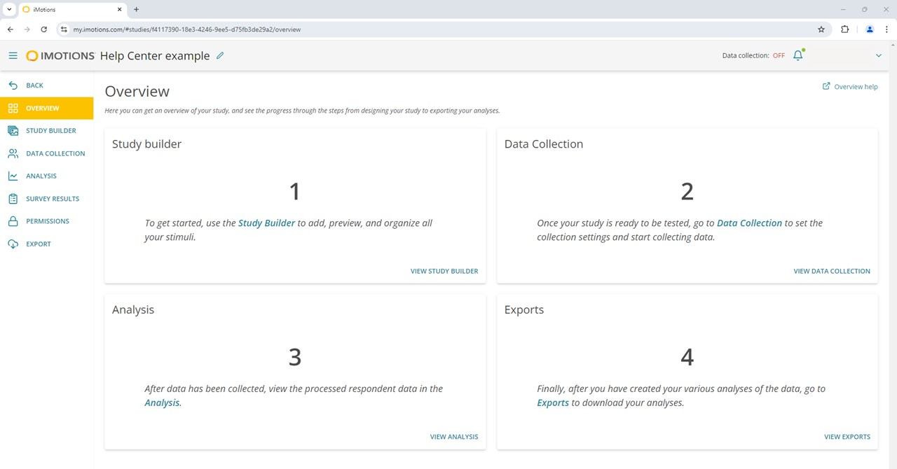
From idea to research question
A client rarely arrives with a research question, only a business question. Picture an organization that campaigns against food waste (a teaching scenario modeled on the iMotions demo study, not a real client) that asks: "Which of our two food waste videos moves people more, and which tip on our infographic do they read?" The sentence names two videos and two wishes, but not who will watch, what "moves" means, how it will be measured, or what difference would count. A research question names the problem the study will answer and signals the kind of study needed; a hypothesis is a testable answer to it, written with the variables that will be measured.
"Moves" first. AFFDEX does not read feelings; it estimates, frame by frame, the probability that a trained coder would rate an expression as present. Its Engagement score is derived from a combination of facial movements and describes how expressive the face is, not attention to the message or persuasion; valence says whether an expression looks pleasant or unpleasant. FEA thresholding, an iMotions analysis notebook, marks every moment a score is above a cutoff (50 in the vendor's analysis of this demo), which turns each video into a percent of time score, such as the share of the video during which Engagement was above 50. "Moves people more" can become "keeps faces expressive for a larger share of the video," a narrower claim.
Then "read." Webcam eye tracking can say which large region drew the eyes, and for how long. An area of interest (AOI) is a region drawn on a stimulus; dwell time is the total time the gaze rested inside it, summed over fixations, the pauses in which the eyes hold still; and time to first fixation (TTFF) is how long the first fixation took to land there. Because a webcam's error is a few degrees of visual angle, an AOI the size of a tip box works and one the size of a word does not. "Which tip do they read" can become "which of four tip boxes draws the most dwell time," which says where the eyes rested, not whether the words were read or understood.
Was the visual video met with expressive faces (Engagement above 50) for a larger share of its running time than the narrative video, in the same respondents? Which of four large tip boxes drew the most dwell time, and in what order were they first fixated? At which step did the people who opened the link stop, and did that depend on the order of the videos?
Which word or line did a respondent read? Did viewers feel guilt, disgust, or hope? Will they waste less food next month? Who else was in the room? Each needs another measure: a lab eye tracker for small text, self report for feelings, a behavioral criterion for waste.
Why run the study remotely at all? Reach: the lab's decision guide chooses a remote study when people are off campus or more than about 60 are needed quickly. A natural setting: respondents watch on their own screens at home. Cost: no lab session to schedule for each person. The price is control. Nobody sets the light, the distance, or the device, or sees whether the respondent talks, slumps, or leaves; webcam tracking is "sensitive to talking, head movement, and the use of glasses," and iMotions advises over-recruiting because biosensor data are "much more variable when collected remotely." Only people with a computer and a webcam who agree to be filmed at home take part, which is called self selection, and some who start will stop, which is called attrition.
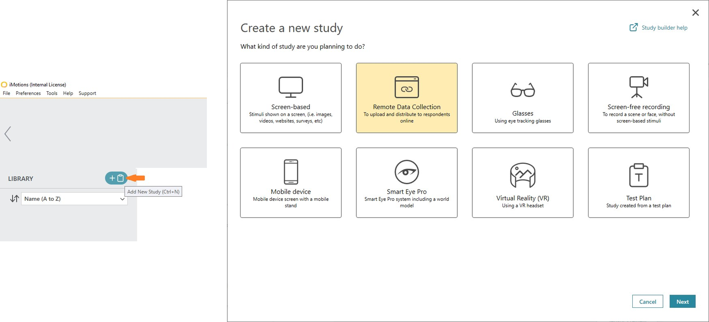
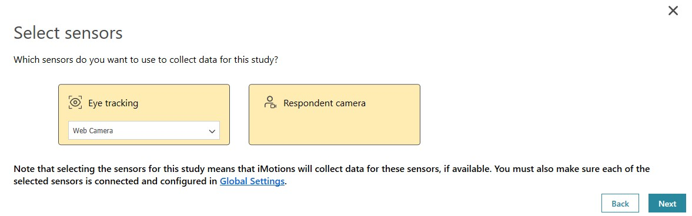
Is a face recorded over the internet worth measuring? Advertising researchers have used such faces: to measure ad preferences automatically from facial responses gathered over the Internet (McDuff et al., 2014), to predict ad liking and purchase intent in a large-scale analysis of facial responses to ads (McDuff et al., 2015), to study emotion-induced engagement in Internet video advertisements (Teixeira et al., 2012), and to ask, in a web-based facial tracking field study, why, when, and how much ads should entertain (Teixeira et al., 2014). The word engagement in one of those titles need not mean AFFDEX Engagement, so a report always says which engagement it means.
Webcam eye tracking has a literature of its own: WebGazer, scalable webcam eye tracking using user interactions (Papoutsaki et al., 2016); a first look at online webcam-based eye tracking in cognitive science (Semmelmann & Weigelt, 2018); webcam-based online eye tracking for behavioral research (Yang & Krajbich, 2021); comparisons of webcam and remote eye tracking (Wisiecka et al., 2022), of online webcam and laboratory eye tracking with infants (Bánki et al., 2022), and of a new webcam-based system with the EyeLink 1000, under a title that calls the result "close to laboratory standards" (Kaduk et al., 2024); a web-based replication of an earlier visual world experiment using WebGazer.js (Slim & Hartsuiker, 2023); and deep learning models for webcam eye tracking in online experiments (Saxena et al., 2024). They differ in algorithm, screen, and task, so no number from them can stand in for the accuracy of iMotions WebET 3.0, the algorithm the portal names; iMotions lists a WebET 3.0 validation among its science resources, to be read in its final form before anyone quotes it.
The vendor's analysis of the demo suggests a direction: with thresholding at 50, "The Visual video had higher levels of engagement (57% time spent) compared to the Narrative video (19% time spent)." The article does not say how many respondents that analysis used (the lab copy holds four), so it is motivation, not evidence: a plan may borrow its direction, never its numbers.
Now the hypotheses, written before any data exist. The video is compared within subjects, each respondent with himself or herself, because everyone sees both; the order, which video comes first, differs between respondents and is set by chance.
- H1. The percent of time Engaged (AFFDEX Engagement above 50) is higher during foodwaste_visual than during foodwaste_narrative, within the same respondents.
- H2. Dwell time on the infographic differs among its four tip AOIs.
- H3. Intention to reduce food waste (one survey item, 1 to 7) does not differ between respondents who saw the narrative video first and those who saw the visual video first: a randomization check.
- Quality analyses, planned in advance. Where sessions stopped; completion by order; exclusions by reason; the change in calibration accuracy from the first to the last calibration; accuracy and hits on the smallest AOI; and the tests repeated under a stricter threshold.
- Exploratory. Whether the Engagement difference goes with naming the visual video more persuasive, and whether dwell time on the tips goes with the number of tips recalled.
Every test can detect a difference in either direction, but a hypothesis may state one when a reason is written down first. H1 does, because the visual video was made with "provocative visual imagery" and the vendor's analysis pointed the same way; it is supported only if significant in that direction. H2 does not: the tips differ in content and in position, and nothing known beforehand says which should win. H3 is not a test of the videos at all. Everyone answers after seeing both, so the order groups differ only in which video came first, and chance decided that. If the split worked and order does not matter, intention should be about the same in both groups; a difference would point to an order effect or to a split that was not random. A nonsignificant randomization check is reassurance, not proof that the groups are equal.
Now the client's sentence can be rewritten. The lab's decision guide asks every study for one sentence with four slots: who, sees what, measured how, compared against what. Here: adults with a computer and a webcam who open a study link (who) watch both videos, in an order set by chance, and then the infographic (sees what), while the webcam records the face for AFFDEX and estimates gaze after a calibration (measured how), and each respondent's two videos are compared with each other and the four tips with each other (against what).
Weak questions fail in their own ways. "Which video works?" asks for a judgment; "Which video do people love?" asks about feeling; "Which tip do they agree with?" asks about attitude; "Which sentence do they read?" asks for an accuracy a webcam does not have. The repair names an observable, a window, and a comparison, and it claims more expressive faces and longer looks, not more persuasion and not more reading.
The last step is to choose one primary measure per hypothesis before the data exist. AFFDEX produces dozens of signals (the iMotions Online list holds 39), and every AOI has twelve fixation based metrics; test them all and something will come out by chance. Here the primary measures are the percent of time Engaged for H1, dwell time on the four tips for H2, and the intention item for H3. Joy, Brow Furrow, valence, and TTFF are described, not tested, and the quality analyses are reported whatever the hypotheses show.
Help center articles for this section: Getting Started with Remote Data Collection (RDC) · Introduction to iMotions Online · Demo study: Food Waste (image, videos and talkaloud) · R Notebook (FEA): Facial expression analysis thresholding and aggregation · AOI Metrics
Turn a client's question about moving people and reading into testable questions, say what webcam eye tracking and webcam facial expression analysis can and cannot support, weigh what a remote study gains and loses, and write three hypotheses, one of them a randomization check, with one primary measure each.Designing a remote study
A remote study is designed around three facts. People differ a great deal in how expressive their faces are. Webcam eye tracking is off by a few degrees, and it gets worse as a session goes on. And many people who open the link will not finish. Each fact shapes one part of the plan.
The videos are compared within subjects: every respondent sees both, so a respondent's general expressiveness enters both scores and drops out of the difference. The cost is order, because the second video is watched by someone who has just seen the first. Counterbalancing uses both orders, and randomization, assignment by chance, decides who gets which. The demo randomized its video order; one way to do that in iMotions Lab is a block whose display order is random. This plan instead makes each order its own study flow, a separate path through the stimuli (Study flow 1, narrative first; Study flow 2, visual first). The portal's respondent list names each session's flow in its Block column, and the plan assumes it does so even for sessions that stop before the videos (modeled), so completion can be compared by order. A 2024 manual screenshot shows one LINK per BLOCK for an RDC study, so each flow gets its own collect link, and the invitation list is split at random into two halves, one link each (modeled; verify on the lab computer that an RDC study built in Lab 11.1 can do this).
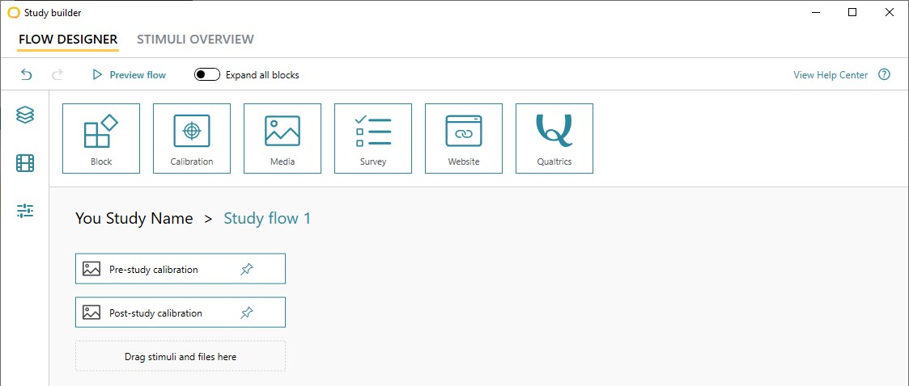
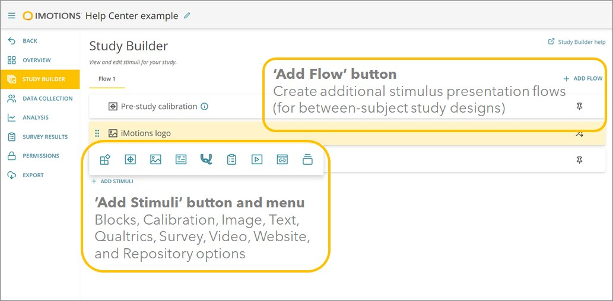
Next, the infographic. Its AOI size, the area of an AOI in square pixels or percent of the screen, must fit the tracker's error. RDC fixes the screen settings of every study at 1920 by 1080 pixels on a screen 47.4 by 29.6 cm seen from 65 cm, and a calculation from those settings puts one degree of visual angle at about 46 pixels across the screen, so an error of 3 degrees can move a gaze point about 140 pixels. The iMotions Online introduction advises that "it is best to create large objects that have a buffer of space between them," and the iMotions AOI article, which cites a recommendation of about 1 to 1.5 degrees of padding around an AOI, adds that "webcam eye tracking requires an even greater buffer." The plan therefore draws four equal tip boxes (262400 square pixels, 12.65 percent of the screen each) and a wide, thin Headline banner (176000 square pixels, 8.49 percent), with gaps between them so that an error near an edge does not land in a neighbor.
Calibration is also where the error is measured. Accuracy is "the mean distance between the actual and expected gaze positions calculated during calibration," in degrees, so smaller is better. Every RDC study gets a 13 point Pre-study calibration and Post-study calibration by default (39 s each in the Lab stimulus bar), and the RDC webcam article calls this bookending "currently the best practice that we recommend for webcam eye tracking." The reason is calibration drift, the worsening of accuracy over a session: iMotions recommends extra calibrations for "respondent populations prone to movement," because the mapping learned at the start fits less well once a person has moved, and only a second calibration can show it. In the simulated data, accuracy averaged 1.71 degrees at the first calibration and 2.42 at the last, and 12 respondents passed the first and failed only the second (all simulated).
Two timing rules follow. Keep the study "under 10 minutes" (a longer one needs an extra calibration for about every 10 minutes of stimuli). And show any custom calibration slide for "2 seconds at minimum" (4 is recommended), set in the desktop software before upload: a shorter slide blocks the Start remote data collection button until the cloud study is deleted and uploaded again. The plan keeps the default animated calibration (how the 2 second rule applies to it is a point to verify). Its flow, from the Pre-study calibration through Instructions1 (30 s), the two videos (60 s and 62 s), the infographic (15 s), and a short survey to the Post-study calibration, took a median of 8.7 minutes with the setup steps (simulated).
Then the losses. Every session that opens the link passes the respondent funnel, ten steps the portal counts from STEP 1 Testing upload through STEP 5 Screen size and STEP 9 Stimuli presentation* to STEP 10 Study data upload (the names come from the iMotions Online article; verify that an RDC study shows the same ten). The funnel is a result to report, not a nuisance: attrition that differs between conditions, selective attrition, is the pitfall named in one study's title, how unattended selective attrition leads to surprising, yet false, research conclusions (Zhou & Fishbach, 2016).
Who opens the link depends on recruitment. A panel provider recruits and screens respondents, sends them the link, and takes them back at the end through a redirect, an address the study opens when it finishes so that the provider can log the completion and pay; a respondent ID travels in the link's query string, the part after the question mark. The iMotions article names Forsta, Prolific, Qualtrics, CINT, Amazon mTurk, and Sona Systems. Prolific's built in integration is not enabled for the lab's account and no other panel account is on record, so class projects send their own links by email. On what each source brings, read the studies of alternative crowdsourcing platforms (Peer et al., 2017), of the data quality of platforms and panels (Peer et al., 2022) and of MTurk, Prolific, CloudResearch, Qualtrics, and SONA (Douglas et al., 2023), of Prolific as a subject pool (Palan & Schitter, 2018), and of crowdsourcing consumer research (Goodman & Paolacci, 2017).
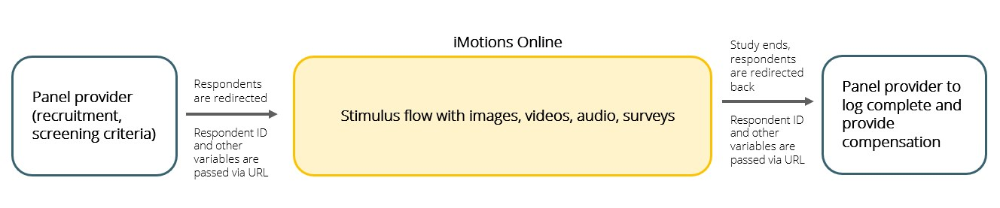
Nobody watches a remote respondent. An attention check is a survey item with one correct answer for anyone who read it: one article presents instructional manipulation checks as a way of detecting satisficing, answering with minimal effort, to increase statistical power (Oppenheimer et al., 2009); another's title reports that MTurk participants performed better on online attention checks than subject pool participants (Hauser & Schwarz, 2016); and careless responding, answering without regard to the content, is the subject of a paper on identifying careless responses in survey data (Meade & Craig, 2012). A real study should add an attention check to its survey; the simulated study has none, a limitation section 10 names.
Power analysis sets the sample before the data exist. Power is the probability of detecting an effect of a given size if it is real; the usual target is 80 percent. For a within subjects comparison the effect size is dz, the mean of the differences divided by their standard deviation (Lakens, 2013).
Comparing two videos within the same people, at alpha .05 and 80 percent power, a large effect (dz = 0.8) needs 15 kept respondents, a medium one (0.5) 34, and a small one (0.3) 90. These are respondents left after every loss and exclusion, not people invited.
G*Power is the program most researchers cite for this (Faul et al., 2007).
A remote study loses many people. In the simulation, 142 of the 260 sessions that opened a link were kept, 54.6 percent (simulated), so plan for a loss of about 45 percent: divide the kept respondents you need by 0.55 and round up. For a large effect, 15 / 0.55 = 27.3, so 28 sessions must open the link; the lab's decision guide asks for "60 or more started" in any remote study. Invitations never opened come on top. A license may also cap respondents (the lab's Online account began as a 30 respondent trial), so verify the limit on my.imotions.com before promising a client a sample.
Devices and homes shape the sample too. RDC "requires a desktop or laptop computer," and "Participation can not be done on phones or tablets"; iMotions Online has a Devices setting for desktop and tablet (whether webcam eye tracking works on a tablet is not stated; verify), and neither allows phones. RDC supports Chrome, Firefox, Edge, or Safari; iMotions Online names Chrome, Edge, and Firefox. The invitation asks for even light on the face ("Do not sit in a dark room or with a bright light behind you"), the camera at the top center of the screen, a fixed chair, and no other faces in view, because a respondent on a phone cannot finish and one in front of a bright window risks failing the quality rule.
Consent and privacy are part of the design, not paperwork. Facial video is identifiable data, and in RDC it goes to iMotions cloud servers and then to the lab computer for post processing. Informed consent is a documented explanation, given before participation, of the purpose, the right to stop at any time, how the data will be handled, and the risks; for a remote study the consent screen must also say what is recorded, where it is stored and processed, for how long, and who sees it (section 05). The study first goes to the JSU Institutional Review Board (IRB), the committee that reviews research with human participants, and the lab manual allows cloud upload only with IRB approval. Minors need a parent's permission and their own assent. RDC requires acceptance of a Data Processing Agreement (DPA) with iMotions (the text says for EU server users, the portal screen says for every institution; whether JSU has accepted it is not recorded, so verify), and the General Data Protection Regulation (GDPR) applies as soon as EU residents take part. Background reading covers ethics committees' concerns about online survey tools (Buchanan & Hvizdak, 2009), ethical considerations and practical guidelines for using Facebook as a research tool (Kosinski et al., 2015), and the privacy implications of eye tracking (Kröger et al., 2020).
Last, the exclusion rule, the written condition under which a completed respondent is left out. The manuals disagree on its threshold: two Online articles say "We recommend a threshold of 3.0" degrees, while the Online study setup guide calls "0-4 dva" (degrees of visual angle) the "Generally acceptable range." The plan uses 4.0 degrees for the rule and 3.0 for a sensitivity analysis, the same tests repeated under the stricter choice. Eye tracking quality percent is "the ratio of valid eye tracking samples in relation to the total number of samples collected" (at least 90 percent recommended); face quality is the share of samples in which a face was found (at least 80 percent). The rule: exclude a completed respondent when the Pre-study or the Post-study calibration accuracy is above 4.0 degrees, when eye tracking quality on the infographic is below 90 percent, or when face quality is below 80 percent during either video. One rule serves every hypothesis, and every exclusion is logged with its reason.
Help center articles for this section: RDC Testing with Webcam Eye Tracking · Creating RDC Studies · RDC Settings and Stimuli Behavior · Study builder - Behavioral Research Online · Data Collection - Behavioral Research Online · Using iMotions Online with a panel provider · Participating in RDC Studies · Areas of Interest (AOIs)
Defend a within subjects design with the order randomized by study flow, size AOIs for a webcam's error, bookend the study with two calibrations, plan the sample with remote losses included, choose a recruitment route, and fix the device rules, consent plan, and exclusion rule before the first link goes out.The worked example in full
Everything in sections 01 and 02 fits on one page, the first deliverable of any study in this lab. Below is the remote food waste test as a student study plan; read it as a template for your own.
- Question
- Among adults who take part at home on their own computers, is the face expressive (AFFDEX Engagement above 50) for a larger share of the emotional visual video than of the narrative video; does dwell time differ among the four tips of the infographic; and did the order of the videos change the intention to reduce food waste?
- Hypotheses
- H1: the percent of time Engaged is higher during foodwaste_visual than during foodwaste_narrative. H2: dwell time differs among Tip_1, Tip_2, Tip_3, and Tip_4. H3, a randomization check: intention does not differ between the Narrative first and Visual first orders. Every test can detect a difference in either direction at alpha .05; H1 is supported only when significant in the predicted direction.
- Design
- Within subjects for the two videos; the order counterbalanced and assigned by randomization; the infographic and the survey always after both videos, as in the demo.
- Flows and order
- Study flow 1: foodwaste_narrative first. Study flow 2: foodwaste_visual first. Each study flow has its own collect link, and the invitation list is split at random into two halves, one link each (modeled: verify that an RDC study built in Lab 11.1 can hold two flows with a link each).
- Stimuli and lengths
- Pre-study calibration (13 points, 39 s), Instructions1 (30 s), the two videos in the order of the flow (foodwaste_narrative 60 s; foodwaste_visual 62 s), infographic (15 s; a headline and four tips to reduce food waste), Questionnaire (an iMotions survey, self paced), Post-study calibration (13 points, 39 s). Under 10 minutes; no image or video larger than 1920 by 1080 pixels.
- Calibrations
- The default animated 13 point calibrations at the start and the end, both screened by the exclusion rule; no extra calibration, because the stimuli last well under 10 minutes.
- Sensors and settings
- Eye tracking (Web Camera) and Respondent camera, chosen when the study is created in iMotions Lab 11.1 on the computer with key 0001; they cannot change after upload. On my.imotions.com (lab convention, proposed in the fix checklist): Microphone recording off (no voice task, and the lab has no voice license), no screen recording (no website stimulus), Head position check and Eye detection on, Allow skipping after timeout off, Data upload alternative on with the lab's email address.
- AOIs
- Five rectangles, each an area of interest (AOI), on the infographic: Headline, a wide, thin banner (176000 square pixels, 8.49 percent of the screen, about 2.4 degrees tall), and Tip_1 to Tip_4, four equal boxes (262400 square pixels, 12.65 percent each) in reading order from Tip_1 at the top left, with gaps between all five.
- Measures
- Primary: percent of time Engaged (FEA thresholding at 50) for each video; Dwell time (ms) on each tip; Intention_reduce_food_waste_1to7. Data quality: calibration accuracy at each calibration, eye tracking quality percent on the infographic, face quality during each video, and the session Status. Described: Joy, Brow Furrow, Positive Valence (+50), Negative Valence (-50), TTFF, and the hit ratio, the percent of respondents with at least one fixation in an AOI (the AOI metric Respondent ratio (%)). Exploratory: More_persuasive_video and Tips_recalled_0to4. Missing: an attention check (a limitation).
- Exclusion rule
- Written before collection: exclude a completed respondent when the Pre-study or the Post-study calibration accuracy is above 4.0 degrees, when eye tracking quality on the infographic is below 90 percent, or when face quality is below 80 percent during either video; log every reason. Sensitivity analysis: both accuracies at 3.0 degrees or less.
- Funnel to report
- The sessions that entered and stopped at each step of the respondent funnel; the Status counts (Processed, Abandoned, Errors); completion by order; exclusions by reason, by the first criterion failed and by every criterion failed.
- Analysis plan
- Completion and exclusion by order: a chi square test. Drift: a paired t test of Post-study against Pre-study accuracy. H1: a paired t test with dz and its 95 percent confidence interval, checked with a Wilcoxon signed rank test. H2: a Friedman test with Kendall's W, then Wilcoxon tests of every pair with Holm's correction. H3: Welch's t test with Hedges' g, checked with a Mann Whitney test. Accuracy and the smallest AOI: a logistic regression of a Headline hit on mean calibration accuracy, reported as an odds ratio per degree. All tests repeated at 3.0 degrees; exploratory correlations reported as exploratory.
- Consent text plan
- A Personalized consent screen whose text matches the form the IRB approved: the purpose; that the webcam records the face for eye tracking and facial expression analysis, with no screen or microphone recording; that recordings go to iMotions cloud servers and then to the lab computer; how long they are kept and when they are deleted; who sees them; that taking part is voluntary and can stop at any time; and that a respondent ID replaces the name.
- Deliverables
- A funnel table and figure, a data quality and exclusion table, a table of the tests, four figures, a results section and a discussion in journal form, and a three sentence client summary that says "kept faces more expressive," never "more effective" or "more persuasive."
Several names return in section 08. A chi square test asks whether completion depends on the order. The paired t test compares two measures from the same people, and the Wilcoxon signed rank test repeats it on ranks, which matters because percent of time scores pile up at zero. The Friedman test does this for four measures, Kendall's W (0 to 1) says how consistently respondents rank them, and Holm's correction adjusts p values when several pairs are tested. Welch's t test compares two groups without assuming equal spread, and the Mann Whitney test repeats it on ranks. A logistic regression predicts a yes or no outcome, a Headline hit, and its odds ratio says how the odds change with each degree of error.
Each hypothesis has one measure, and H2 compares only the four equal tip boxes, never the smaller Headline, so that size cannot decide the result. The quality measures feed the exclusion rule and are reported for everyone who completed.
The real material is the iMotions demo study "(DEMO) Food Waste_webET_FEA_voice" in the Library on the lab computer (Lab - Alien). Captures from October 10, 2026 show a remote study, marked with a cloud icon, with Instructions1 and Instructions2 (30 s each), Talkaloud (1 min), Questionnaire (1 min), foodwaste_visual (1 min 2 s) with three scenes, foodwaste_visual_Scene[1] to [3], infographic (15 s), foodwaste_narrative (1 min), and the Pre-study and Post-study calibrations (39 s each); four respondents, Respondent 1 to Respondent 4; and, on the RECORDED DATA tab, Exposure summaries (Calculate) and Affectiva (Post Process). A visible Calculate button means that the exposure summary, a table of data quality and recorded samples by study, respondent, or stimulus, has not yet been calculated in the lab copy.
![iMotions Lab on the lab computer with (DEMO) Food Waste_webET_FEA_voice selected in the LIBRARY, a cloud icon beside its name, open on the RECORDED DATA tab: tiles for Instructions1, Instructions2, Talkaloud, Questionnaire, three scenes of foodwaste_visual, Pre-study calibration and Post-study calibration at 39s each, foodwaste_visual, infographic, and foodwaste_narrative, with Exposure summaries Calculate and Affectiva Post Process buttons below and RESPONDENTS (4), Respondent 1 to Respondent 4, at the right](../assets/ws6/figures/live/live_demo_foodwaste_recorded_data.png)
The lab's Post Processing menu offers Affectiva for this study, while RealEyes, SpeechToText, audEERING Voice Analysis, Find and blur faces, Body & Hand Pose, Respiration, B-Alert EEG, and Gaze Mapping are grayed: the lab has no voice module, so the demo's voice results can be viewed but not recomputed. Its analysis lists the flows AFFDEX thresholding, AFFDEX thresholding Aggregation, and Voice Analysis (section 07 shows both screens).
The demo article (versions 10.0 and later) adds the rest. It pairs a narrative video that explains food waste and steps to reduce it with an emotional one built on "provocative visual imagery," recorded through remote data collection with webcam eye tracking and facial expression analysis, a survey, and a talkaloud task analyzed with voice and speech to text. Respondents saw both videos, "making this a within-subjects design; the order of the two videos was randomized and the image, survey and talkaloud always followed." The infographic question was "which of the four steps to reduce food waste was attended to the most." Its sample analysis thresholded AFFDEX at 50 and reported engagement during 57 percent of the time for the visual video against 19 percent for the narrative video. The simulated study points the same way, but with different, simulated people and a different setup, so never compare the two results as if from one study.
The article also says that "the videos and voices have been removed in order to anonymize the data" after processing. Yet when the lab opened Post Processing > Affectiva on the demo (and cancelled), the dialog offered "Process 28 videos." Whether the lab copy still holds face videos is a point for the instructor to check, without playing any recording. The article does not state how many respondents its analysis used, the webcam eye tracking quality values, or which AOIs exist. The lab copy shows how a remote study looks in iMotions Lab after download, from its stimuli and calibrations to where post processing and thresholding start. It cannot show what respondents saw at home, the my.imotions.com pages, or a test of any hypothesis: four respondents can test nothing.
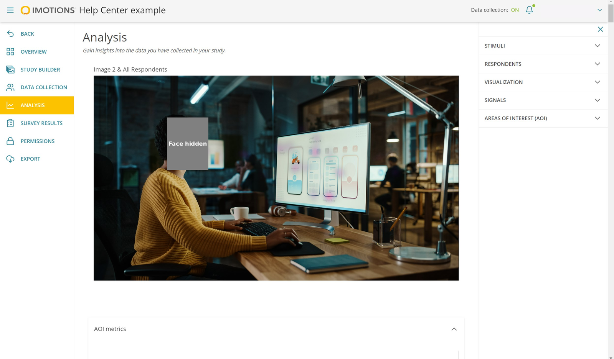
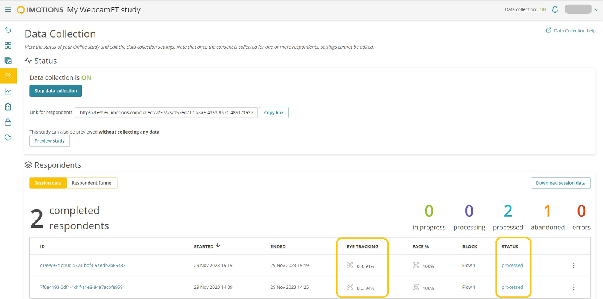
Every number about respondents in this workshop's analyses comes from a SIMULATED data set built in the style of the demo study. No person was recorded, no webcam was switched on, nothing from the demo's respondents went into it, and no number may be quoted as a finding. The only real counts of people are the demo's four respondents.
One script, make_simulated_data.py (seed 20276200), generated five data files for a study named SIMULATED Food Waste Remote Study. Each opens with a line that says SIMULATED, and all use the same respondent labels (RESP0001 to RESP0260 in the session data, in the order the link was opened). SIMULATED_session_data.csv has one row per session, 260 in all, and its first seven columns are the documented columns of the RDC respondent list: Id, Started, Ended, Eye tracking (accuracy in degrees and quality percent, written like "1.3, 95%"), Est. face %, Block (Study flow 1 or 2), and Status (Processed, Abandoned, or Errors). Modeled, so check them in a pilot download: the CSV layout, the Id format, the session accuracy as the mean of the two calibrations, Status Abandoned for every early stop, and three columns the manuals do not list, marked (modeled): Last funnel step, Device type, and Browser.
SIMULATED_quality.csv holds one row per completed respondent and slide (1246 rows) with Eye tracking accuracy (degrees) on calibration rows, Eye tracking quality (%), and Face quality (%), in a layout modeled on the Quality metrics table of an iMotions Online session page; where these values live for an RDC study must be verified. SIMULATED_fea_metrics.csv follows the FEA Metrics Export, one row per completed respondent, video, and expression (1780 rows), with Threshold, Percent of time present, and Data quality (%); its header is modeled. SIMULATED_aoi_metrics.csv holds one row per completed respondent and AOI (890 rows) with metric names from the AOI Metrics article, such as Size (px2), TTFF AOI (ms), and Dwell time (ms); its identifier columns are modeled, and a never fixated AOI shows NA, counted as 0 ms of dwell. SIMULATED_survey.csv, also modeled, holds Age, Gender, Intention_reduce_food_waste_1to7, More_persuasive_video, and Tips_recalled_0to4.
Two counts frame everything else: 178 of the 260 sessions completed (68.5 percent), and the exclusion rule kept 142, 69 Narrative first and 73 Visual first (all simulated). The folder also holds analysis.R with its output and test tables, the workbook SIMULATED_remote_analysis.xlsx with its walkthrough, and results_text.md, the model paragraphs for sections 06, 09, and 10.
Help center articles for this section: Demo study: Food Waste (image, videos and talkaloud) · Accessing RDC Study Data · Export: Exposure Summary · R Notebook (FEA): Facial expression analysis thresholding and aggregation · AOI Metrics
Write the one page plan for a remote study, pair each hypothesis with its measure, state the exclusion rule and the funnel to report, say what is and is not known about (DEMO) Food Waste_webET_FEA_voice, and name the simulated file that answers each question and the parts of it that are modeled.Building the remote study in iMotions Lab, and the iMotions Online alternative
A Remote Data Collection (RDC) study is built in iMotions Lab, uploaded to my.imotions.com, the iMotions website where remote studies are run, and taken by respondents in their own browsers with their own webcams. Nobody is in the room to fix a mistake, and the most important choices cannot be changed once the study is uploaded or the first respondent has taken part. So this section builds the worked example of section 03 one decision at a time, and 4.8 shows the same study in iMotions Online, the route in which everything happens in the browser. Work on the computer "Lab - Alien": it holds license key 0001, the only key with "Upload studies to the cloud", so remote studies are built, uploaded, and processed there.
The manuals name three different moments after which a remote study can no longer be changed, and the iMotions Online pages disagree with each other about the third. The lab treats the earliest moment as binding: everything in the table is decided before the upload, and every test runs on a pilot copy (section 05), never on the real study.
| What the manuals say | Where | What it means for you |
|---|---|---|
| Sensors: "You cannot change this once the study has been uploaded to the cloud for data collection." The exposure time limit of images and websites cannot change "once the study has been uploaded". | RDC Settings and Stimuli Behavior | Sensors, exposure times, and calibration slide times are fixed at upload. |
| "The study and stimuli can not be changed after data collection has started." | Creating RDC Studies | Stimuli, their order, and the flows are fixed when collection starts. |
| "Once data from at least one respondent has been collected, all study and stimuli settings will no longer be editable" (a dialog), but "once the consent is collected for one or more respondents, settings cannot be edited" (a page banner). The consent text locks "once the first respondent accepts the consent form". | Data collection - iMotions Online; Creating RDC Studies (screenshot) | The website settings and the consent text are fixed by the first respondent, possibly at the consent screen (verify on my.imotions.com). |
4.1 Create the study with both sensors
Why. Webcam eye tracking estimates where on the screen a respondent looks from the webcam image of the eyes. The Respondent camera records the face video from which AFFDEX, the Affectiva facial expression software inside iMotions, later scores expressions. Both are chosen in the first screens and cannot change after upload, and a study without the Respondent camera has no face video to score. The lab's fix checklist (Project doc 13), which holds the lessons of the lab's one remote study for a campus client, makes choosing both sensors at creation its first rule.
- Open a new study. In the LIBRARY, click the "Add New Study" button (or press Ctrl+N). You should see the "Create a new study" window, "What kind of study are you planning to do?", with seven tiles on the lab computer: "Screen-based", "Remote Data Collection", "Glasses", "Screen-free recording", "Mobile device", "Smart Eye Pro", and "Test Plan".
- Choose the remote type. Click "Remote Data Collection" ("To upload and distribute to respondents online") and click "Next". Common mistake. Choosing "Screen-based" because the stimuli appear on a screen; a Screen-based study records only on the lab computer.
- Select both sensors. On "Select sensors" ("Which sensors do you want to use to collect data for this study?"), click "Eye tracking" with its drop-down set to "Web Camera" and click "Respondent camera", "highlighting them in yellow", then "Next". You should see both tiles yellow. On the lab computer (iMotions Lab 11.1.47136.14) these are the only two tiles, and Respondent camera has no AFFDEX box; 2023 screenshots with "FACET" and "AFFDEX" boxes are out of date. Common mistake. Leaving "Respondent camera" unselected because no AFFDEX box appears. The microphone is not chosen here; it is a setting on my.imotions.com (4.7).
- Name it. In "Name your study" type a name that no study on my.imotions.com already has (4.6), and click "Create study".
- Check it. You should see the study in the Library with the tabs "STUDY SETTINGS", "SENSORS", "GAZE ANALYSIS", "LIVE MARKERS", "EXPORT", "RECORDED DATA", and "LATENCY SETTINGS" and the buttons "Edit stimuli" and "Preview study"; the SENSORS tab lists "Eye tracking" and "Respondent Camera". Common mistake. Planning to adjust these later: they "should not be changed after data collection has started" (Creating RDC Studies).
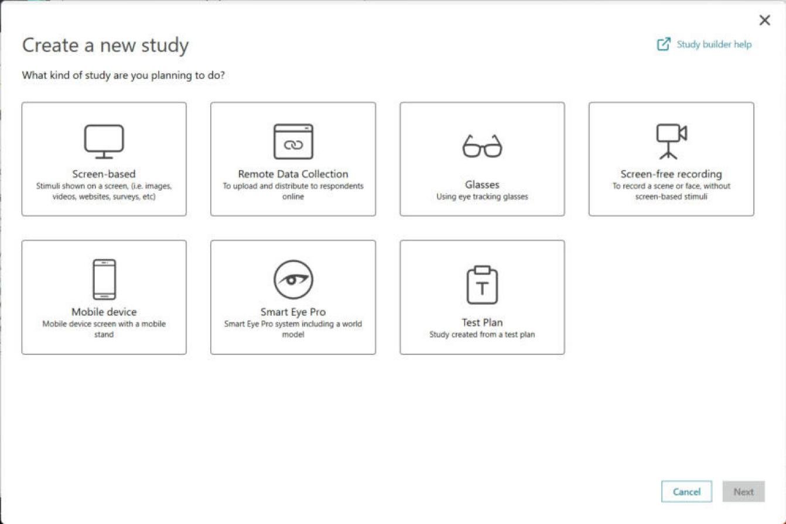
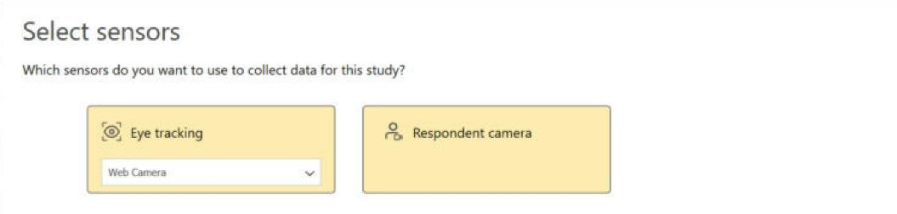
4.2 Add the stimuli and set how each behaves at home
Why. A stimulus is anything the study shows. A remote study accepts Media, Survey, Website, and Qualtrics stimuli, not screen recording, scene camera, 360 VR, or face recording stimuli (Using the iMotions Study Builder), and Creating RDC Studies adds: "Study duration is under 10 minutes." "Maximum stimulus resolution is 1920x1080 pixels and 30 frames per second (for videos)." The worked example has about four minutes of stimuli plus the questionnaire; simulated completed sessions took a median of 8.7 minutes from opening the link to the end of the upload (simulated).
- Open the Study Builder. Click "Edit stimuli". You should see the tabs "FLOW DESIGNER" and "STIMULI OVERVIEW", a toolbar with "Block", "Calibration", "Media", "Survey", "Website", and "Qualtrics", and "Study flow 1" already holding "Pre-study calibration" and "Post-study calibration", each pinned, around the box "Drag stimuli and files here".
- Add the media and name every stimulus. Drag in the instruction image, the two videos, and the infographic. Images must be ".jpg or .png" and videos ".mp4" ("Video filenames must end with '.wmv' or '.mp4'"). Rename each stimulus exactly as the plan says: Instructions1, foodwaste_narrative, foodwaste_visual, and infographic; the exports carry these names, and the section 08 script looks for them. Common mistake. Leaving the file names as stimulus names.
- Set each image. An image's details offer "Background Color", "Name", "Exposure (sec)" and "(ms)" (at most "300 seconds (5 minutes)"), "Manual advance" (the respondent sees "Skip"), "Position fixed", "Track mouse", and "Record web cam"; click "Update" after changes. Give Instructions1 30 s and infographic 15 s, leave Manual advance off, and keep "Record web cam" ticked on every stimulus whose gaze or face is analyzed. Videos play to their end. You should see the times in the stimulus bar. Common mistake. Manual advance on the infographic, which lets each respondent leave at a different moment, so dwell times stop being comparable. These labels come from a 2023 panel; the 11.1 label for "Record web cam" is not confirmed (verify on the lab computer).
- Add the survey. Click "Survey" ("Opens iMotions Survey Tool"), name it Questionnaire, and build the three items of section 03: intention to reduce food waste (a 1 to 7 scale), the more persuasive video (a single choice), and the tips remembered (a text input, scored later). A remote "Web Survey Slide" allows only "Plain Text Message", "Scale", "Vertical selection", "Single/Multiple Choice", "Text input element", and "Image element", and desktop templates "may render differently". Whether an 11.1 remote study uses this slide or the newer Advanced Survey is not stated (verify on the lab computer). Common mistake. Trusting the editor's look; check the survey in "Preview study" (4.6).
- Websites and Qualtrics, only if a later study needs them. A website opens in a "new tab" or inside the study page in an iFrame (a frame that shows one page inside another), but "not all websites allow for this"; respondents must then share their screen, and a website or survey sends them back to the study through "https://endstimulus.imotions.com". The Qualtrics module is licensed, but JSU has no Qualtrics license, so the lab uses the iMotions survey.
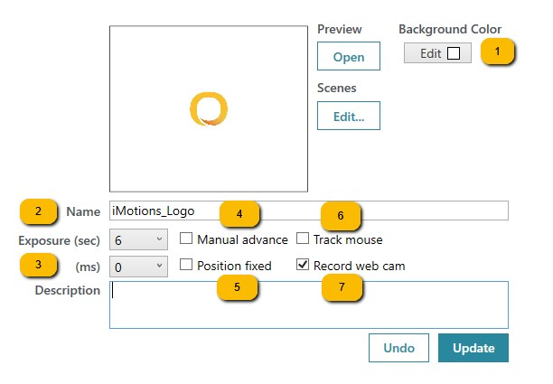
![Survey editor opened over the Study builder of a remote study named ODC survey study, Study flow 1, which holds Pre-study calibration and Post-study calibration; the editor lists the ELEMENTS Plain Text Message, Image Element, Scale, Single/Multiple Choice, Vertical Selection, and Text Response, the collapsed SURVEY SETTINGS, ELEMENT TEMPLATES, and SLIDE TEMPLATES, an empty gray canvas, PROPERTIES reading No Element Selected, and the buttons Save as Template, Preview, Clear, Rename, Load, Save To File, and Save To Study](../assets/ws6/figures/rdc_survey_editor_elements.png)
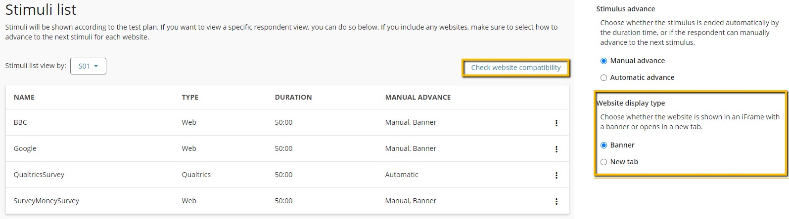
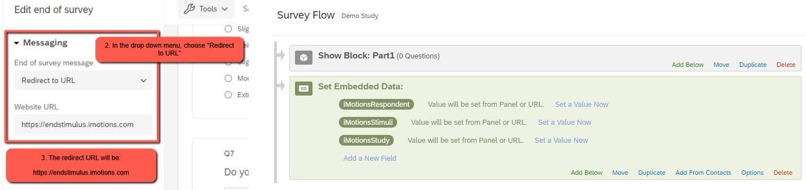
4.3 The calibrations: 13 points before and after, and the minimum time
Why. A webcam does not measure gaze; it estimates it. Calibration shows dots at known places while the respondent looks at each, so the algorithm can learn how that person's eyes map onto the screen. Its accuracy, the mean distance between the gaze estimate and the dots, is given in degrees of visual angle, the angle a distance covers at the eye. Accuracy usually worsens during a session (calibration drift), so a Pre-study calibration at the start is checked against a Post-study calibration at the end. The webcam article's "RECOMMENDATION: Have at least two sets of calibration", at the start and the end, "using at least 9 calibration points each time with 4 seconds of exposure per calibration slide" (RDC Testing with Webcam Eye Tracking).
- Keep the default pair. The two slides are "included by default for Remote Data Collection studies", and "We recommend using the default, animated calibration stimuli"; "A 13-point calibration is shown". You should see Pre-study calibration first and Post-study calibration last, both pinned, each 39 s in the stimulus bar, as in the lab's copy of the Food Waste demo. How the animated calibration is timed is not stated (verify on the lab computer). Common mistake. Unpinning or deleting a calibration slide.
- Add a middle calibration only in long studies. Extra calibration "is generally recommended for every 10 minutes of study stimuli" (webcam article) or "for every 5-10 minutes of data collection" (Creating RDC Studies): "Edit stimuli", "Calibration", then choose image files, which appear as a "CALIBRATION" block. The worked example needs none.
- Custom calibration images follow strict rules. File names follow
[name]_[index]_[x-pos]x[y-pos].png, with x and y in pixels from the top left, and "Record web cam" must be on. Above all, "the viewing time should be set for 2 seconds at minimum. We recommend 4 seconds per calibration slide", and it can be set only in the desktop software before upload.
The minimum is enforced after upload, when it is too late to fix. A calibration slide shorter than 2 seconds blocks the "Start remote data collection" button, with the warning "Calibration slide viewing time is too short. A minimum of 2 seconds is required to process eye tracking data." The only fix is to delete the cloud study and upload it again.
4.4 Two flows, one for each video order
Why. The example is a within subjects design: every respondent sees both videos, in an order assigned at random (randomization), so order effects cannot favor one video. A study flow is one ordered list of stimuli, and the respondent list on my.imotions.com names each session's flow in its "Block" column. A "Block" whose "Display order" is Random would also "randomize the presentation order within the block", but then the order of a session that stopped before uploading would be unknown, and the attrition check of section 08 needs it. So the example gives each order its own flow and its own link.
- Build Study flow 1 (narrative first): Pre-study calibration, Instructions1, foodwaste_narrative, foodwaste_visual, infographic, Questionnaire, Post-study calibration.
- Build Study flow 2 (visual first), the same list with the two videos swapped. If you did Workshop 4 (skin conductance in the lab), its section 04 shows how a flow is duplicated in the Study Builder. Write in the plan which flow is which order. You should see two flows that differ only in the order of the videos. Common mistake. A flow with one video twice, or one missing.
- Verify the links. A 2024 screenshot of a running RDC study shows a table of "BLOCK" ("Study flow 1") and "LINK", with a link ending
?iMotionsStimulusBlock=Study%20flow%201. That an 11.1 RDC study holds two flows with one link each, and that Block names the flow of every session, is modeled in this workshop: verify both with the pilot (section 05).
The vendor's Food Waste demo randomized the order instead ("the order of the two videos was randomized"). Both routes give counterbalancing, the two orders used about equally often; only the two flow route records the order of every session that opened a link.
4.5 Plan the areas of interest now
An area of interest (AOI) is a region of a stimulus, such as one tip on the infographic, for which gaze metrics are computed. AOIs are drawn after the data come home (section 07), but the stimulus is designed for them now, because webcam gaze is off by a few degrees. The iMotions Online introduction advises, "it is best to create large objects that have a buffer of space between them", and the AOI article says "webcam eye tracking requires an even greater buffer" than the "1-1.5 dva padding" it cites as the general recommendation. The example infographic (1920 x 1080 pixels) therefore has five rectangles with gaps between them: a thin Headline banner, the smallest (8.49 percent of the screen), and four tips of 12.65 percent each. Section 06 explains what AOI size does to hits and misses.
4.6 Preview, back up, and upload
Why. Upload sends the stimuli to iMotions cloud servers and links the Lab study to its cloud copy. From then on, what you uploaded is what respondents get.
- Preview every flow. "Preview study" shows the study as participants see it, "including iMotions study screens with instructions". Check the order, the times, the sound of both videos, and the survey. Common mistake. Previewing only Study flow 1.
- Back up. Right-click the study, choose "Save To File", keep the zip with the plan, and note the iMotions version (fix checklist).
- Upload. Right-click the study and choose "Upload To iMotions Cloud" (the 11.1 label; the articles also write "Upload to iMotions Cloud" and "Upload Studies to Cloud"). The dialog "Upload study to iMotions Cloud" says that stimuli and respondent data "will be uploaded to iMotions cloud servers" and that "Any future respondents for this study will automatically be uploaded as well", and links to "my.imotions.com/#dpa", the Data Processing Agreement (section 05). Tick "Exclude respondent and environment videos" if the study already holds recordings, and click "OK". You should see a cloud icon beside the study in the Library, as beside the demo. Common mistakes. Uploading a name that is already in the cloud (clone and rename the study, or delete the cloud copy), and trying from the desktop computer, whose key 0002 has no cloud upload.
- Know what the cloud copy cannot do. On my.imotions.com an RDC study's menu offers only "Move" and "Delete", so a changed version is cloned in iMotions Lab ("Cloned studies must have a new name"; "Respondents, recordings, and analyses are not copied") and uploaded again.
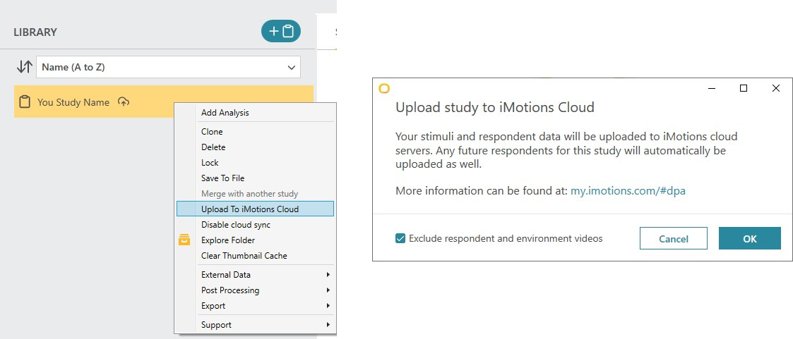
4.7 The study's page on my.imotions.com
Why. Some settings live only on the website: the microphone, the checks a respondent passes before the study starts, the consent text, the redirects (addresses a browser is sent to when the study ends or consent is declined), and a backup upload route. The path in Creating RDC Studies: log in to my.imotions.com, click the study, "Study Overview", then "Details" to the Data Collection page. In the 2024 screenshot the page reads "Remote details" and warns, "This will essentially make the study public. I.e. respondents will potentially be able to record or download the stimuli files." Tell a client that anyone with the link can see, and perhaps copy, the stimuli.
- Check the stimuli. Click "View stimuli details", open each stimulus's three dot menu, and confirm that recording is on for every stimulus to be analyzed; the advice to disable "any recordings that are not necessary" never applies to a stimulus whose face or gaze you need.
- Set the options. The lab conventions (fix checklist, proposed; not from the manuals): "Record the participant's microphone" off unless the study needs voice (the lab has no voice module); "Head position check" on; "Eye detection" on; "Allow skipping after timeout" off, because it "may allow respondents with bad data to be recorded"; and "Data upload alternative" on, with the lab email in "Email to send study data". "Respondent language:" stays "English (US)". This workshop adds one recommendation of its own: "Audio output check" on when a video depends on its sound, as the narrative video does (nothing in the simulated study confirmed that the sound was on, a limitation section 10 names). The Personalized consent screen and the "Redirect options" are set in section 05.
- Press Update. "(!!!) NOTE: If you have activated (or deactivated) any of the settings above, you must press Update prior to pressing Start remote data collection" (RDC Settings and Stimuli Behavior). You should see your choices in the Settings list and, under "Data collection", the "Start remote data collection" button. Do not press it on the real study until section 05 is done. Common mistake. Pressing Start before Update.
The Sensors switches are locked. The "Sensors" page of a remote study lists "Webcam", "Eye Tracking", "Head Pose", "Facial Expressions", and "Screen Recording", but for a study built in iMotions Lab every switch is disabled, and only the head position and eye detection boxes can change (Project docs 12 and 13). A disabled "Facial Expressions" switch does not mean faces go unrecorded: the face video arrives with the data, and the scores are computed in iMotions Lab (section 07). The 2026 page may differ from the 2024 screenshot below (verify on my.imotions.com).
![Data collection page of an uploaded remote study on my.imotions.com: Remote details with a yellow notice that the study is essentially public; Stimuli details with View stimuli details; Settings with Audio options (Record the participant's microphone, Microphone check, Audio output check), Visual options (Head position check, Re-check head position, Eye detection ticked, Allow skipping after timeout), Language options with English (US), Personalized consent screen with an empty text box, Redirect options with Study completed URL and Decline consent URL, Data upload alternative with Email to send study data, an Update button, and under Data collection a Start remote data collection button](../assets/ws6/figures/rdc_remote_details_settings_page.png)
4.8 The alternative: the same study in iMotions Online
iMotions Online is "a fully browser-based experimental platform": the study is built, run, and analyzed at my.imotions.com, with no lab computer, and MKT 488 will use it in Spring 2027. Two rules differ from RDC. Face scores are computed on iMotions servers ("processed on iMotions' servers based in Denmark (Copenhagen)"), and face videos "are not available on the iMotions Online interface". And "analysis tools like Signal Thresholding are currently not available", so, by that article, the percent of time measures of section 07 cannot be made there (the portal has added summary metrics since the article was printed; verify on my.imotions.com). The lab's working rule, not a rule of the manuals: choose Online when browser analysis (gaze paths, heatmaps, AOIs, survey charts) answers the question, and RDC when the analysis needs iMotions Lab tools such as the FEA thresholding notebook.
- Create. Go to "Studies" > "New" > "New study", type a name, and click "Create study". You should see the "Overview" page with the cards "Study builder", "Data Collection", "Analysis", and "Exports".
- Build the flows. The calibrations are "added in automatically" and "cannot be removed." Add stimuli with "+ ADD STIMULI" ("Block", "Calibration", "Image", "Instruction", "Qualtrics", "Survey", "Video", "Website") and flows with "+ ADD FLOW"; the pin icon fixes a position, and "the intertwined arrows icon" randomizes it. Keep images to 30 seconds and videos to 10 minutes, as the Online introduction asks. The Data Collection page's "Flow selection" offers "Manual" or "Random"; how it assigns respondents to flows is not described in the local manuals (verify on my.imotions.com).
- Set the calibrations. Each offers "Color" (match the next stimulus), "Points", "9 or 13" ("13 are always recommended for optimal data quality, 9 points are quicker"), "Point order", Random or Fixed, and "Apply settings to all calibrations". The default color reads "Black with white dot" in the screenshot but is described as "black dots on a white screen, or white dots on a black screen" in the text (verify).
- Build the survey. Select the Survey stimulus and click "Edit survey": tabs "Designer", "Preview", "Themes", "Logic", and "JSON Editor", question types such as "Rating Scale", "Multiple Choice", and "Single-Line Input", and "Save and close". "You can only edit stimuli for a study that has not started data collection and does not contain respondents."
- Check sensors and devices. For an Online study the Sensors switches can be chosen; they default to "Webcam, Eyetracking, Head pose, and Facial expressions turned on, and Screen recordings turned off" (portal feed, 2025). The settings list begins with "Devices", which offers "Desktop and/or Tablet", while RDC "requires a desktop or laptop computer"; keep a webcam eye tracking study on computers.
- Set who can see the study. Permissions offer "All company users", "Only me", and "Select users individually", saved with "update study editors"; administrators "always have full access", and "added users will not be notified about any permission changes." The 2023 menu item "PERMISSIONS" appears as "SETTINGS" in a 2025 screenshot (verify).
![Browser window at my.imotions.com on the Data Collection page of an Online study named Study Name: Data collection is OFF with a Start data collection button, Flow settings with Flow selection Manual or Random, Respondents reading No respondents yet., and the collapsed Settings Devices, Audio options, Visual options, Language options, Personalized consent screen, Redirect options, and Data upload alternative; the left menu reads STUDIES, OVERVIEW, STUDY BUILDER, DATA COLLECTION, ANALYSIS, COMPARISON, SURVEY RESULTS, SETTINGS, and EXPORT](../assets/ws6/figures/online_data_collection_settings_list.png)
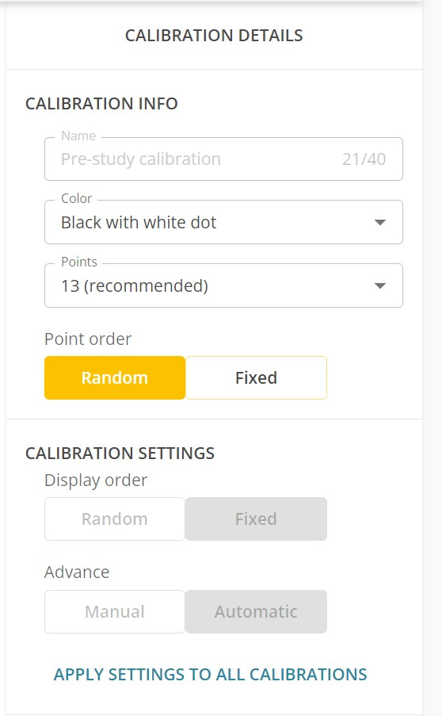
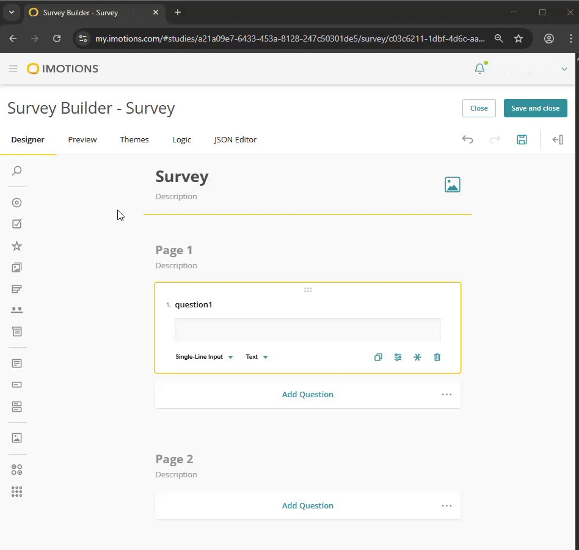
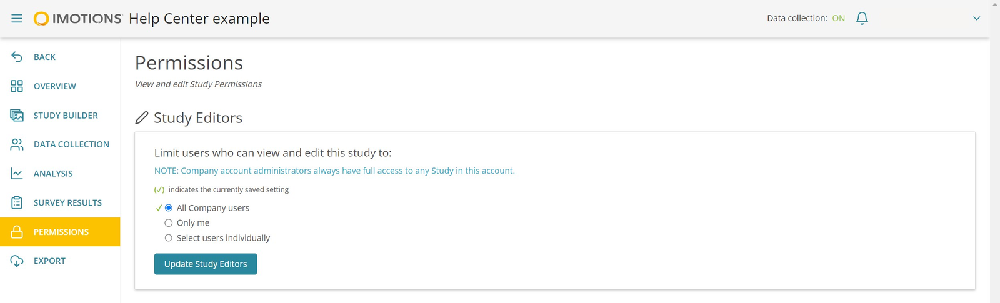
Help center articles for this section: Getting Started with Remote Data Collection (RDC), Creating RDC Studies, RDC Settings and Stimuli Behavior, RDC Testing with Webcam Eye Tracking, RDC Testing with Images and Videos, RDC Testing with iMotions Survey, RDC Testing With Websites, RDC Testing With Qualtrics Survey, Using the iMotions Study Builder, Clone, Save, and Import iMotions Studies, Areas of Interest (AOIs), Introduction to iMotions Online, Study builder - Behavioral Research Online, Survey builder - Behavioral Research Online, Sensors - Behavioral Research Online, and Permissions - Behavioral Research Online. Manual PDFs on this site: Getting Started with Remote Data Collection (RDC), Creating RDC Studies, RDC Settings and Stimuli Behavior, RDC Testing with Webcam Eye Tracking, RDC Testing with Images and Videos, RDC Testing with iMotions Survey, RDC Testing With Websites, RDC Testing With Qualtrics Survey, iMotions Online Study Setup, Study builder - iMotions Online, Using the iMotions Online Survey Builder, and Permissions - iMotions Online (PDF).
Consent, distribution, and collection: from a tested link to the last session
In a lab session a researcher explains the study, watches the setup, and fixes problems. In a remote study the respondent does all of this alone, guided only by the screens chosen in section 04 and the invitation you write, and decides alone whether to consent, allow the camera, find enough light, and finish. Because the settings lock at the first respondent, the consent text and a full test come before the real link is shared; once collection runs, your job is to watch where people stop and what quality their data have.
5.1 IRB approval and a consent screen that says what is recorded
Why. Informed consent is a person's agreement to take part after being told what will happen. In a remote study it is given on the consent screen, before anything is recorded, and it covers a face video recorded at home, uploaded to iMotions cloud servers, and, for RDC, downloaded to the lab computer. Under the lab procedure manual every study needs JSU IRB (Institutional Review Board) approval or exemption "before scheduling participants", and "Any changes, even seemingly minor ones ... require an IRB amendment." Remote data always go to the cloud, so the IRB protocol must say so. Ethics committees have raised their own concerns about research data collected through online tools (Buchanan & Hvizdak, 2009), and gaze recordings can reveal more about a person than a study needs (Kröger et al., 2020). Respondents under 18 need a parent's or guardian's permission and their own assent, obtained as the IRB directs.
The default screens. The RDC default reads "Welcome!" and "You have been invited to participate in a study, which will display some media (such as images or videos) while recording your webcam and microphone.", with the box "I consent to participating in this study and having my face and voice recorded for the duration of the study" and "Accept & continue". It names face and voice when the microphone is on; the iMotions Online example names the face only. Neither says where the video goes or for how long, so the lab uses the Personalized consent screen: tick "Use personalized consent text in start screen" on the study's page (section 04) and paste the IRB approved text, which appears "on the very first screen that the participant sees after clicking the link". It then locks "once the first respondent accepts the consent form".
What the text must say. The consent FAQ lists "the purpose of the study", "that participation is voluntary", "their rights when participating in the study", "how you will handle the data collected in the study", and "possible risks they may be exposed to during the study", and, for cloud products, "where their data will be stored and processed". The lab's fix checklist adds that the wording must match what is recorded (face video for both eye tracking and expressions; voice only with the microphone on), that a form "must not say that no video is saved unless iMotions confirms in writing that the recordings are deleted after processing", and that it says who may watch the video. The lab rule: nobody views a respondent's face unless the consent allows it, and checks are made on numbers (section 07).
Two terms appear in the table. The Data Processing Agreement (DPA) is the contract under which iMotions processes study data for the university. The GDPR, the European Union's data protection law, applies "as soon as you have EU residents participating in your study."
| Question the consent must answer | What the iMotions documents say, and where they disagree |
|---|---|
| Where are the data stored and processed? | Consent FAQ: cloud servers "operated by Amazon Web Services, Microsoft Azure, and Google Cloud Platform". Online privacy policy: one sub-processor, "Amazon Web Services, Inc. (AWS)", in "Frankfurt-am-Main (Germany) or Manassas, Virginia (United States)", with face and gaze data "processed on iMotions' servers based in Denmark (Copenhagen)". |
| How long are face videos kept? | 2023 policy: "kept until the user deletes it", and "Respondent videos can be deleted separately". Current Online introduction: "deleted after 30 days. They are never surfaced to the user." Backups: "Amazon will keep backups of cloud data for 14 calendar days". |
| Where does the video end up in an RDC study? | Unlike iMotions Online, RDC brings the face videos into iMotions Lab, in the study's Capture folder, because post processing needs them (section 07). How long my.imotions.com keeps RDC videos is not stated. |
| Can faces be scored without storing video? | Release 11.1.11: "It is now possible to collect facial expression data without storing respondent videos". Whether this applies to RDC is not stated. |
| Has JSU signed the DPA? | The text says users "on the EU iMotions RDC server" must accept it; the screenshot says "Even if your company/institution is located outside the European Union, it is necessary that you sign the DPA". Only an account administrator can accept it (Settings>Users), and the lab documents do not record whether JSU did. |
The lab rule for these gaps: the consent states only what is confirmed, names the longest retention that may apply and the deletion plan, and matches the IRB protocol; open points are put to iMotions in writing and verified on my.imotions.com. The lab manual gives 7 years for raw physiological data, 5 years for consent forms, and a 3 year example; follow the IRB protocol.
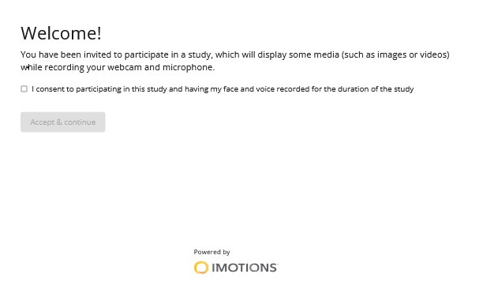
![Respondent start screen in preview mode with a PREVIEW Data will not be saved. label: Welcome!, You have been invited to participate in a study, which is described below, a box of sample consent text that demonstrates bold, italic, underlined, and struck through text, alignment, numbered and bulleted lists, header sizes, and colored and highlighted text, an unticked box I consent to participating in this study and having my face recorded for the duration of the study, and a grayed Accept and continue button](../assets/ws6/figures/consent_personalized_consent_preview.png)
5.2 Pilot first, and take the study yourself on a second computer
Why. The settings lock at the first respondent, so a test through the real study's link puts a test session into the data and freezes the study. In the lab's first remote study the live link was sent to reviewers, which put test sessions into the data, and the first collect link sent out, the address respondents open, returned an error, while a replacement link worked. The lab computer is also unlike a respondent's laptop, and browsers and devices differ even in how precisely they time what they show (Anwyl-Irvine et al., 2021). Only a test from another computer, through the kind of link a respondent gets, shows what respondents will meet.
- Make a pilot copy. In iMotions Lab right-click the study, choose "Clone", and give the copy a new name. Upload it (4.6), set its page exactly as the real study's (4.7), press "Update", then "Start remote data collection".
- Send reviewers the preview, not the live link. Preview pages show "PREVIEW Data will not be saved.", and "the link from the 'Preview study' button can also be shared with others without collecting any data" (Data collection - iMotions Online). The 2024 RDC screenshot shows a "Preview" button beside "Copy" for each flow; verify on my.imotions.com that the 2026 page has it.
- Take it yourself, then with two volunteers. Open the pilot's link on a second computer that is not the lab computer, as a respondent would, then run two adult volunteers "on the same kind of computer, browser, room, and network as the real sessions" (fix checklist, proposed). Open it once on a phone too, to see where a phone is stopped; that step is modeled in this workshop's data. You should see every screen of 5.4, both video orders across the volunteers, and the "Thank you!" page.
- Bring the pilot home. Check that each pilot session reaches "Processed", with Est. face % at least 80 and an eye tracking value of 3.0 degrees or better (fix checklist), then download, load, and post process it and run one FEA thresholding flow and one FEA Metrics Export (section 07). Only then upload and start the real study. Common mistake. Testing on the real study, even once; one session locks it.
5.3 Start collection and send the links
- Start. On the real study's page press "Update" if anything changed, then "Start remote data collection". You should see, as in the 2024 screenshot, "Copy a link address and send it to respondents, to let them start the study.", a "BLOCK" and "LINK" table with one row per flow, the buttons "Copy" and "Preview", "Stop data collection", and "Sessions" reading "No respondents yet." Each collect link begins https://my.imotions.com/collect/.
- Send one flow's link to each half of the list. Split the invitation list at random into two halves before sending (modeled in this workshop) and send each half one flow's link from the lab's own email. The invitation says what respondents need, because RDC "requires a desktop or laptop computer" and "Participation can not be done on phones or tablets": a computer with a webcam; "Chrome, Firefox, Edge, or Safari"; a desk with light on the face and no window behind; a "fixed-position chair (avoiding rolling or reclining chairs)"; the camera "positioned on the top-center of the screen"; about ten minutes; and free disk space (about "50 MB per minute of recording" in the Online article). Common mistake. An invitation that does not say "computer only".
- Add IDs for a panel, if one is used. A panel provider is a company that recruits and pays respondents, such as "Forsta, Prolific, Qualtrics, CINT, Amazon mTurk, or Sona Systems". It adds its respondent ID to the link as a query string, the part after "?", such as
?transaction_id=88888&panel=67890, and gets it back through a redirect: tick "Redirect to a specific URL once the study has been completed" and put the token${query}in the "Study completed URL" (other tokens:${respondentLabel},${respondentId},${studyId}). Names starting withiMotions"are reserved for iMotions Online's own use", and because "URL parameters end up in browser history and server logs", "pass only IDs, never names or other personal data". Prolific, a panel for online research, has an integration on the portal that is not enabled for the lab account ("please contact iMotions support"), and no other panel account is recorded, so lab studies recruit through the lab's own link distribution.
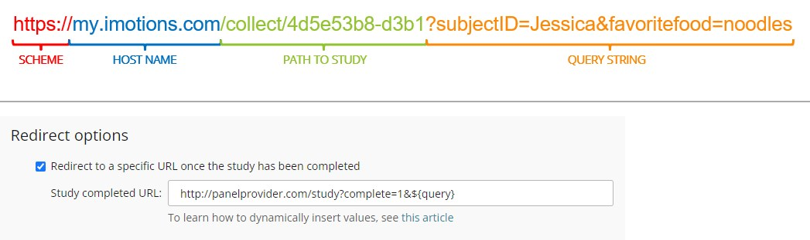
5.4 The respondent's path, screen by screen
Knowing what respondents see lets you write the invitation and read the funnel. The screens below come from Participating in RDC Studies, which shows them with every setting on. The respondent funnel, a my.imotions.com view that counts the sessions reaching each step, names ten steps; the right column pairs them with the screens by name, a pairing the manuals do not make.
| What the respondent sees | What it asks | Funnel step |
|---|---|---|
| (not shown in the manuals) | STEP 1 Testing upload | |
| "Welcome!" and the consent text | Tick the box, "Accept & continue" | STEP 2 Consent screen |
| "1. Enable screen sharing" (only with websites or screen recording) | "Enable screen share" | STEP 3 Screen recording setup |
| "2. Enable webcam and microphone" | "Select a webcam to use:", "Enable video and audio" | STEP 4 Respondent camera setup |
| "3. Sound check" (with "Audio output check and/or Microphone check" on) | "Confirm audio settings" | (none by name) |
| "4. Select screen size" | "Screen type" (Laptop or Desktop), "Screen size" (diagonal inches), "Confirm" | STEP 5 Screen size |
| "5. View browser fullscreen" | "Open fullscreen" | STEP 6 Enter fullscreen |
| "6. Check placement and lighting for webcam" | "I am sitting correctly", "My face is showing clearly", then the face oval and "I will stay in this position for the entire study" | STEP 7 Prepare positioning; STEP 8 Positioning check |
| Instructions, calibration dots, videos, infographic, survey, calibration dots | Look at each dot; watch; answer | STEP 9 Stimuli presentation* |
| "Almost done..." then "Thank you!" | Keep the window open while "Uploading study information..." | STEP 10 Study data upload |
At the face oval, the oval turns green when a face is found and red when it is not, with a message asking the respondent to put their head inside the oval; the study continues only with a face found, unless "Allow skipping after timeout" is on, when it "will proceed after 25 seconds". That is the head position check, and "Eye detection will similarly ensure sufficient lighting and view of the respondent's eyes". During calibration, respondents "must maintain their gaze on the calibration points" and avoid "significant head movements". If the upload fails and the "Data upload alternative" is on, a download page replaces the upload page; the respondent emails the file, the session shows "Respondent Status: manual zip", and you click "Upload respondent zip file".
![Five Study setup pages: 1. Enable screen sharing with a small picture of a Firefox popup and an Enable screen share button; 2. Enable webcam and microphone with Select a webcam to use: HD Pro Webcam C920, Select a microphone to use, and Enable video and audio; 3. Sound check with Speaker output and Microphone input level bars and Confirm audio settings; 4. Select screen size with Screen type and Screen size set to Please select and a grayed Confirm; and 5. View browser fullscreen with Open fullscreen](../assets/ws6/figures/rdc_participant_setup_steps.png)
![Two Study setup pages titled 6. Check placement and lighting for webcam with drawings: Make sure there is bright light clearly showing your face, with a person lit by a desk lamp marked with a green check and a dark figure in front of a bright window marked with a red cross, and the button My face is showing clearly; and Make sure you are sitting upright at a table, with a person upright at a desk marked with a green check and a person lying on a sofa with a laptop marked with a red cross, and the button I am sitting correctly](../assets/ws6/figures/rdc_participant_placement_lighting.png)
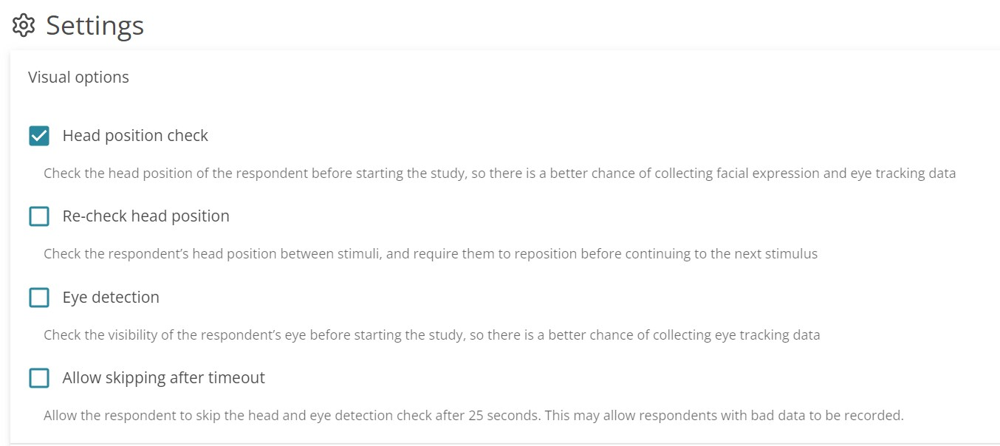
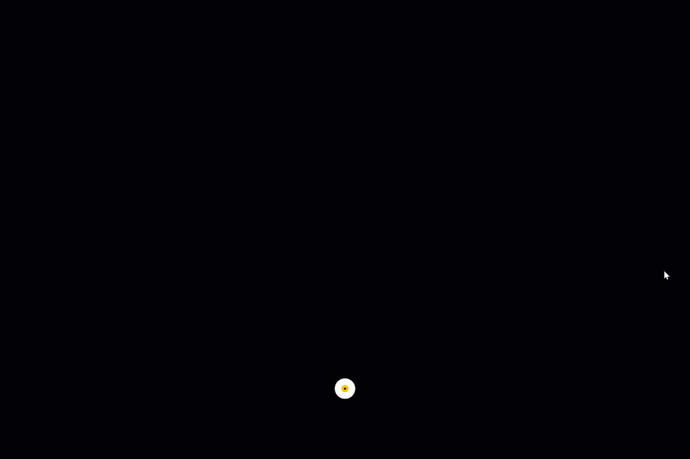
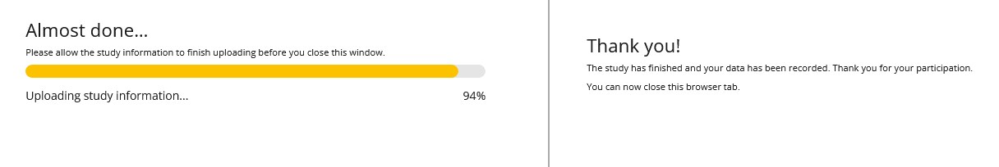
5.5 Watch the funnel and the data quality while collection runs
Why. Attrition, people leaving before the end, is a result of a remote study, not a nuisance. If one condition loses more people than the other, those who finish are no longer comparable (selective attrition), which can produce false conclusions (Zhou & Fishbach, 2016), so this workshop reports dropout at every step; see also the standards for Internet based experimenting (Reips, 2002). Check once a day.
- Read the respondent list. Under Respondents, the "Session data" tab lists "Id", "Respondent", "Study", "Machine", "Started", "Ended", "Eye tracking", "Est. face %", "Block", and "Status". Status is "In Progress" (opened the link), "Processing" (completed the study and the upload), "Processed" ("Data are available for download."), "Abandoned" (the "upload was interrupted"), or "Errors" ("data files contain errors or are invalid file types"). You should see counts per status above the table and the Block of each session.
- Read the quality columns, and their names. "Eye tracking" pairs a number in degrees with the percent of the recording with eye tracking data, the quality percent. The RDC article calls the degrees "Precision"; the iMotions Online articles call the same kind of number accuracy, "the mean distance between the actual and expected gaze positions calculated during calibration". Precision usually means how consistent repeated gaze estimates are, so this workshop says accuracy. "Est. face %", the "Percentage of recording with face data", estimates face quality. The Online articles recommend accuracy of 3.0 degrees or better, eye tracking quality "of at least 90%", and face quality "of at least 80%".
- Open the funnel. The "Respondent funnel" tab shows "where respondents dropped off. Sessions that are in progress are not included."; light orange marks completed steps and darker orange the abandoned ones. Whether an RDC study's funnel lists the same ten steps as the Online funnel is not confirmed (verify on my.imotions.com).
- Act on patterns, not on people. A cluster of stops at one step points to a fixable cause, but the study is locked, so the fix goes into the invitation or a reminder, never into the study. Compare completion between the two Blocks. Exclude nobody now: the exclusion rule written before collection (section 02) is applied afterward to every completed session (section 08), and the rounded session value in this list can hide a failed calibration (in the simulated data, 6 respondents with a calibration above 4.0 degrees showed 4.0 or less in this column). Common mistake. Deleting an odd looking session; delete only staff test sessions or a respondent who withdraws, and log why.
An example from the simulated data set: 260 sessions opened a link and 178 completed (68.5 percent). Fourteen stopped at the consent screen, 12 at the camera setup, and 36 at STEP 5 Screen size, 34 of them on phones or tablets; none of the 29 phone and 7 tablet sessions completed (all simulated; the step at which a phone is stopped is modeled).
5.6 Stop collection
Decide in advance when collection ends, by a number of completed sessions or a date, and send enough invitations for the losses: in the simulated study 260 opened links became 142 kept respondents, a loss of about 45 percent (simulated; section 02). When the plan is met and no session shows "In Progress", press "Stop data collection" (the label in the manuals; the lab's fix checklist update writes "Stop collection", so verify on my.imotions.com). Then bring the data home (section 07).
Help center articles for this section: Respondent informed consent and data privacy FAQ, iMotions Online privacy policy, Introduction to iMotions Online, Getting Started with Remote Data Collection (RDC), Creating RDC Studies, Data Collection - Behavioral Research Online, Collecting Data with iMotions Online, Participating in RDC Studies, Using iMotions Online with a panel provider, RDC Cross Communication with Other Websites, and Accessing RDC Study Data. Manual PDFs on this site: Respondent informed consent and data privacy FAQ, iMotions Online privacy policy, An introduction to iMotions Online, Data collection - iMotions Online, Collecting Data with iMotions Online, Participating in RDC Studies, Using iMotions Online with a panel provider, RDC Cross Communication with Other Websites, and Accessing RDC Study Data (PDF).
What webcams can and cannot measure: accuracy, drift, AOI size, fixation filters, and face scores
A remote study measures with equipment the researcher never sees: the respondent's own webcam, screen, room, and light. One webcam video gives two signals, an estimate of where the eyes pointed and a record of the face, and the methods section must say how good each was and how it became a number. This section covers both, what their quality numbers mean for the size of an area of interest (AOI, a region of the stimulus drawn so that gaze inside it can be counted), and what the methods paragraph of a remote study must contain. The study numbers are simulated (section 03 describes the files).
How a webcam estimates gaze
Webcam eye tracking finds the eyes in an ordinary webcam image and estimates where on the screen they point; iMotions uses "the iMotions WebET 3.0 algorithm" (Webcam Eye Tracking). To map one person's eye images to screen positions it needs a calibration: the respondent follows dots at known positions, 13 by default, in a Pre-study calibration at the start and a Post-study calibration at the end. The lab's Smart Eye Aurora, which you have used if you did Workshop 2 (eye tracking in the lab), lights the eyes with infrared light and is accurate to well under one degree. The introduction to iMotions Online, the browser based route, says it plainly: "Our webcam eye-tracking algorithm, while powerful, does not have the sub-degree accuracy of a conventional infrared eye tracker," and it "is also sensitive to talking, head movement, and the use of glasses."
Webcam gaze has been studied from a first look in cognitive science (Semmelmann & Weigelt, 2018) and WebGazer, scalable webcam eye tracking that uses the user's interactions (Papoutsaki et al., 2016), to webcam based online eye tracking for behavioral research (Yang & Krajbich, 2021), comparisons with remote and laboratory eye trackers (Wisiecka et al., 2022) (Kaduk et al., 2024), and deep learning models for webcam eye tracking in online experiments (Saxena et al., 2024). Read them for how accuracy was measured, not for numbers to apply to WebET 3.0, whose validation iMotions lists among its science resources; read that document in its final form and verify its figures before quoting any.
Degrees of visual angle, accuracy, and quality
Gaze error is measured in degrees of visual angle, the angle an object or a distance takes up at the eye, so the measure does not depend on how far away the screen is. Remote Data Collection (RDC), the route built in iMotions Lab, converts gaze with fixed screen settings, 1920 x 1080 pixels on a screen of 47.4 by 29.6 cm seen from 65 cm, "pre-populated, but not accessible to the user for edits" (Using the iMotions Study Builder). At that distance one degree is about 1.1 cm on the screen, or about 46 pixels, and 3 degrees is about 3.4 cm, or about 140 pixels (this workshop's arithmetic).
Accuracy: "the mean distance between the actual and expected gaze positions calculated during calibration," in degrees, so smaller is better. Eye tracking quality: "the ratio of valid eye tracking samples in relation to the total number of samples collected," in percent. Face quality: the ratio of samples "where the face can be detected." (Data collection and Analysis articles, iMotions Online.)
The manuals give thresholds for these numbers, but not one set of them:
| Source | Eye tracking error | Eye tracking quality | Face quality |
|---|---|---|---|
| Data collection and Analysis articles (iMotions Online) | "We recommend a threshold of 3.0." | "at least 90%" | "at least 80%" |
| iMotions Online Study Setup guide (manual PDF) | "Generally acceptable range: 0-4 dva (<1 dva = excellent data; >5 dva = unreliable data)" | no threshold in the passages this workshop draws on | |
| Create new segment dialog (Analysis page, iMotions Online) | accuracy "better than" 3.0 | "at least" 90% | "at least" 80% |
| RDC respondent list (Accessing RDC Study Data) | one column: "Eye tracking - Precision (degrees visual angle) and Percentage of recording with eye tracking data" | "Est. face %" | |
3.0 or 4.0 degrees. Two articles recommend 3.0 degrees; the Study Setup guide calls 0 to 4 degrees "generally acceptable," and values between 4 and 5 fall in none of its bands. The simulated study fixed its rule before collection at 4.0 degrees, the top of the acceptable range, and repeats every test at 3.0 degrees as a sensitivity analysis, a rerun under another defensible choice (section 08). Either threshold is defensible when it is fixed before the first link goes out and the other is reported beside it.
Accuracy or "Precision". The RDC respondent list calls the calibration error "Precision." In eye tracking, precision usually means how tightly repeated gaze samples cluster while the eyes rest on one point, and accuracy how far, on average, they land from it. The number is a mean error at calibration, accuracy by the Online articles' own definition, so this workshop calls it accuracy. Which label the 2026 pages use is an item to verify on my.imotions.com, the iMotions web portal.
Calibration drift: why there are two calibrations
A calibration describes the respondent at one moment; then people move, lean back, or the light changes, and the estimate worsens: calibration drift. RDC studies include both calibrations by default, and the RDC webcam article calls this bookending "currently the best practice that we recommend for webcam eye tracking," with at least 9 points and 4 seconds per calibration slide, plus an extra calibration "for every 10 minutes of study stimuli" (RDC Testing with Webcam Eye Tracking). In the simulated study accuracy worsened from 1.71 to 2.42 degrees across the 178 completed respondents, and 12 respondents passed the Pre-study calibration but failed the Post-study one: a single calibration at the start would have kept them. Another 6 with one calibration above 4.0 degrees showed 4.0 or less in the rounded session level "Eye tracking" column of the respondent list (in this simulation the rounded mean of both calibrations; verify what the real column summarizes). The rule therefore reads each calibration separately (section 08, Figure 4).
What webcam error does to an AOI
An error of a few degrees sets a floor on AOI size. The iMotions Online introduction advises that "it is best to create large objects that have a buffer of space between them," and the iMotions AOI article cites a recommendation to pad an AOI by about 1 to 1.5 degrees and adds that webcam data need an even greater buffer. AOI size is exported as Size (px2) and Size (%). In the simulated infographic the four tips are large boxes (12.65 percent of the screen each) separated by gaps, while the Headline is a wide, thin banner (8.49 percent of the screen) about 2.4 degrees tall (Figure 4). A fixation aimed at its middle falls outside it once the vertical error passes about 1.2 degrees, half its height. The Headline was fixated by 76.8 percent of the kept respondents against 98.6 to 100 percent for the tips, and the odds of a Headline hit fell with each degree of error (odds ratio 0.61; section 08). Make AOIs several degrees across, leave gaps, and keep small text out of webcam studies.
Fixation filters for remote data
A fixation is a pause in which the eyes stay on one spot. Dwell time (the summed fixation time inside an AOI), time to first fixation (TTFF), and hits are built from fixations, so the filter that groups gaze samples into fixations shapes every AOI number. The help center names a Hidden Markov Model (HMM) filter, which classifies samples as fixation or movement from the probabilities of switching between those states, as "the default filter for remote data collection studies with webcam-based eye tracking"; iMotions Online labels it "I-HMM filter." The article also warns that "the typically high levels of noise with low accuracy and precision will not be corrected by any fixation classification filter." Yet the export editor of the lab's one remote study for a campus client listed "R Analysis GazeAnalysis I-VT filter," an I-VT filter (samples that move slower than a set speed count as fixation). Open the study's GAZE ANALYSIS tab and record the filter and its settings in the methods; this is an item to verify.
Who ends up in the data: the funnel, the quality rule, and when to write it
Every respondent has passed a chain of steps that nobody watched. The respondent funnel on my.imotions.com counts where sessions stopped, from STEP 1 Testing upload to STEP 10 Study data upload, and the exclusion rule then removes completed respondents whose data fail the quality thresholds. Both decide who the sample is: in the simulated study 260 sessions opened a link and 142 respondents were kept, and 34 of the 36 sessions lost at STEP 5 Screen size were phones or tablets, which RDC does not accept. "N = 142" alone hides whether the study lost the people a video upset or everyone without a laptop, so report the funnel by step and by video order (section 09), as the journal article reporting standards for quantitative research (Appelbaum et al., 2018) and the standards for Internet based experimenting (Reips, 2002) lead you to do. iMotions Online can apply the three manual thresholds as a segment:
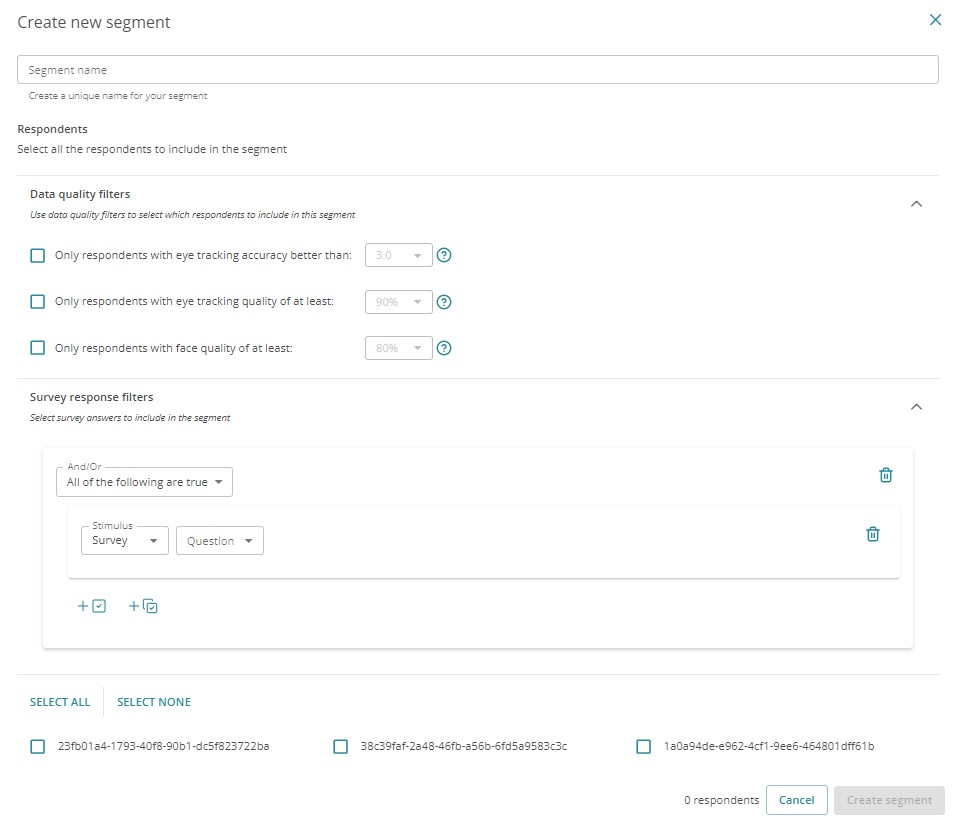
Write the rule and its sources before the first link goes out, because the study cannot change once collection starts. The dialog below says settings lock "once data from at least one respondent has been collected," while a banner on the same page says "once the consent is collected for one or more respondents"; plan for the earlier point and verify on my.imotions.com. For RDC, "the study and stimuli can not be changed after data collection has started" (Creating RDC Studies).
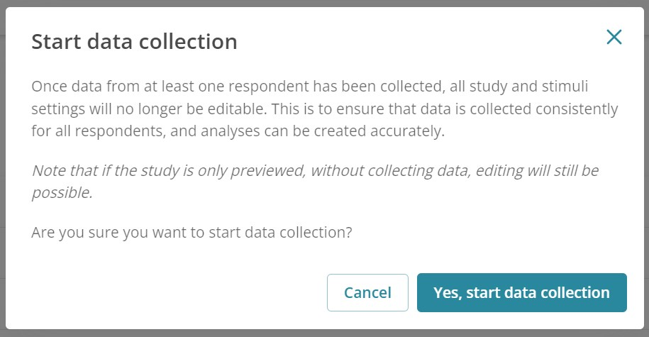
Webcam facial expression analysis: where the scores are computed
Affectiva AFFDEX, the facial expression software in iMotions, scores each video frame for each expression and emotion, most on a scale from 0 to 100 (Valence runs from -100 to 100); iMotions Online calls the score "the probability that a trained human coder would rate that action unit/emotion as present at that time." Where the scores are computed depends on the route, and mixing up the routes is the most common remote study mistake:
Facial expression data are collected "by default for all stimuli," a setting that "cannot be modified on a stimulus-by-stimulus basis." The videos are processed "on iMotions' servers based in Denmark (Copenhagen)" with the AFFDEX SDK 5.1, and "respondent face videos are not available on the iMotions Online interface." The signals appear on the Analysis page, but "analysis tools like Signal Thresholding are currently not available."
The Respondent camera records the face video, and my.imotions.com shows only "Est. face %." For a remote study built in Lab the Sensors switches on my.imotions.com are locked, and iMotions deprecated remote batch processing on June 1, 2026 (iMotions 11 release notes), so the face scores come only from Post Processing > Affectiva in iMotions Lab after download (section 07). "If any are deselected prior to processing, then the processing will not occur," so every stimulus stays selected (RDC Settings and Stimuli Behavior). Post processing a video takes "roughly the same as the duration of that video."
The lab learned the RDC rule on its one remote study for a campus client; the lessons are in the lab's fix checklist (Project doc 13). One detail remains to verify: in the Food Waste demo's processing dialog the stimuli "Select all" box was unticked, although the article says every stimulus is selected by default.
From face scores to percent of time
The FEA thresholding R Notebook "classifies whether a facial expression was detected with high probability, or not": a frame counts when its score is above a threshold, here 50, as in the vendor's analysis of the Food Waste demo. The FEA Metrics Export then gives, per respondent and video, the percent of time the expression was present, in effect the share of frames above the threshold; if you did Workshop 3 (facial expression in the lab), this is the same notebook. The H1 measure, AFFDEX Engagement, is described in the Introduction to AFFDEX SDK 5.1 manual as derived from a combination of facial action units: an expressiveness score, not attention to the message and not persuasion. The threshold of 50 is a convention, not a property of the face.
Percent of time scores pile up at zero and trail off to the right. In the simulated data 21 of the 142 kept respondents (14.8 percent) were never Engaged during the narrative video, whose mean (19.49 percent) sits above its median (13.22 percent), and 55.63 percent were at zero for Joy during the same video. A paired t test compares means, which such a shape can pull around, so the plan adds the Wilcoxon signed rank test, which ranks each respondent's difference instead of using its size. When the two agree, the result does not rest on the shape of the data. Whether the 11.1 notebook offers Engagement and what the denominator of "Percent of time present" is are items to verify; the export header used here is modeled.
Writing the methods paragraph
Report with the minimal reporting guideline for research involving eye tracking, 2023 edition (Dunn et al., 2024), the standards for Internet based experimenting (Reips, 2002), and, on timing, the studies of the realistic precision and accuracy of online experiment platforms, web browsers, and devices (Anwyl-Irvine et al., 2021) and of lab based and online experiment generators (Bridges et al., 2020). A reader must be able to repeat: the route and the software version; the sensors; how, when, and to whom the links went; the devices allowed; the setup checks that were on; the calibrations; the stimuli in order with their lengths, and the flows; where and how the face scores were computed, with the notebook and the threshold; the AOIs with their sizes and gaps; the fixation filter; and the quality metrics and the exclusion rule with their sources.
The model condenses section (a) of results_text.md; brackets mark what the lab fills in from the lab computer.
The study was built in iMotions Lab 11.1 as a Remote Data Collection (RDC) study with the sensors Eye tracking (Web Camera) and Respondent camera, uploaded to my.imotions.com, and run through study links from 2027-03-01 to 2027-03-12 on desktop or laptop computers. Each video order was its own study flow, and each half of a randomly split invitation list received the link of one flow. After the consent screen and the setup steps (screen recording and microphone recording off; no skipping of the positioning check), respondents completed a 13 point Pre-study calibration, a 30 s instruction slide, both videos in the order of their flow (foodwaste_narrative, 60 s; foodwaste_visual, 62 s), an infographic with four tips (15 s), an iMotions survey, and a 13 point Post-study calibration. After download the face videos were scored with Post Processing > Affectiva (every stimulus selected) and the FEA thresholding R Notebook at a threshold of 50. Gaze on the 1920 x 1080 pixel infographic was analyzed with a Headline banner (176000 square pixels, 8.49 percent of the screen) and four tip AOIs (262400 square pixels, 12.65 percent each) separated by gaps. [Fixation filter and its settings, from the GAZE ANALYSIS tab.] A rule fixed before collection excluded respondents whose Pre-study or Post-study accuracy was above 4.0 degrees of visual angle, whose eye tracking quality on the infographic was below 90 percent, or whose face quality was below 80 percent during either video; a sensitivity analysis applied 3.0 degrees. All numbers are simulated for teaching.
Writing "eye tracking data were collected with a webcam" and nothing else: no route, no calibrations, no thresholds, no filter, no funnel. Or reporting the calibration error as "precision" without saying what it measures, or saying that the face scores of an RDC study came from my.imotions.com.
Help center articles for this section: Data Collection - Behavioral Research Online, Analysis - Behavioral Research Online, Introduction to iMotions Online, RDC Testing with Webcam Eye Tracking, Accessing RDC Study Data, RDC Settings and Stimuli Behavior, Areas of Interest (AOIs), Fixation and saccade classification with Hidden Markov Models, R Notebook (FEA): Facial expression analysis thresholding and aggregation, and iMotions 11 release notes. Manual PDFs on this site: iMotions Online Study Setup, Webcam Eye Tracking, and An introduction to iMotions Online (PDF).
Bringing the data home and exporting: from my.imotions.com to percent of time Engaged
When collection stops, an RDC study's data sit on my.imotions.com, and for a remote study built in iMotions Lab the facial expression scores do not exist yet. They are made in iMotions Lab by post processing, analysis run on recordings after collection, here Post Processing > Affectiva after the data are downloaded (fix checklist, correction of October 10, 2026). The server route is gone: release 11.1.2 announced that "Remote Batch Processing will be deprecated on June 1, 2026", and 11.1.5 removed the options for "remote (server-based) processing". The order of work is fixed: session data, study zip (the zip of the study and its respondents' data that iMotions Lab loads), load, check, post process, notebook, AOIs (areas of interest), export. Practice on your own pilot (exercise 5) and leave the vendor's Food Waste demo unchanged; its captures below show the screens.
7.1 Download the session data and the study zip
Why. Two files leave my.imotions.com. The session data list every session that opened a link, including those that stopped, so they hold the respondent funnel (the sessions reaching each step) and the order (Block) of every session. The study zip carries the respondents into iMotions Lab; only "Processed" sessions have "Data are available for download", so sessions that stopped early appear in the session data and, it follows, not in the Lab study (verify with the pilot).
- Wait for processing. Check that no session is "In Progress" or "Processing". Common mistake. Downloading while some still show "Processing"; whether they are included is not described.
- Save the session data. Under Respondents, on "Session data", click "Download session data", and note the counts on the "Respondent funnel" tab.
- Generate the zip. Under "File exports" click "Generate study zip file", and in "Create new zip file" type an "Export name". "Time interval" and "Respondents" are optional, but the screenshot's footer reads "1 day | 0 respondents", so open "Respondents" and check that every respondent is selected before you click "Create zip file"; whether leaving both unset includes everyone is not confirmed (verify on my.imotions.com). You should see the export with status "Processing", which may take minutes or longer, then "Download".
- Download to a local drive on Lab - Alien, not to a folder that lives only in OneDrive: a large online only zip can time out on first open ("The cloud operation was not completed before the time-out period expired"); cancel and open it again.
![RDC study page on my.imotions.com: File exports with a Generate study zip file button circled in orange; Respondents on the Session data tab reading 3 completed respondents, 0 in progress, 0 processing, 3 processed, 0 abandoned, 0 errors, a Download session data button, and a table with columns Id, Respondent, Study, Machine, Started, Ended, Eye tracking (0.8, 90%; 0.8, 93%; 1.0, 88%), Est. face % (100%), Block (Study flow 1), and Status (processed); below, the Create new zip file dialog with Export name Your Study Data Export, Time interval, Respondents, the footer 1 day | 0 respondents, and Cancel and Create zip file](../assets/ws6/figures/export_rdc_generate_study_zip.png)
7.2 Load the zip into iMotions Lab and count
- Load. On Lab - Alien choose "File > Load Study From File", Browse to the zip, and type its full path if needed; a folder path with a trailing name can give "The file name is not valid." Data can be imported "as a new study or merged with existing data for a given study". You should see "Import of study completed successfully."
- Count. Compare the "Processed" count on my.imotions.com with the respondents in the Library study; in the simulated study both would be 178 (simulated). Common mistakes. Importing the same zip twice, which duplicates respondents, and loading on an older iMotions version, because study zips are forward compatible only.
The Library shows a cloud icon beside a remote study, and its menu offers "Disable cloud sync". What cloud sync does, and whether new cloud respondents reach the Library without a zip, is not described in any local manual (verify on the lab computer); the zip is the documented route.
7.3 Check the recordings without watching faces
Why. These checks use numbers, so nobody opens a respondent's video. The fix checklist's rule: never "just check" a replay with the respondent panel open when the consent does not allow viewing faces.
- Exposure summaries. An exposure summary is a table of the data recorded, with "data quality % and the sample data recorded" at study, respondent, or stimulus level, exportable as CSV. On the RECORDED DATA tab the lab's copy of the demo shows "Exposure summaries" with a "Calculate" button, which means it has not been calculated. In your own study click "Calculate"; "A new exposure summary needs to be calculated when the study contains new data." You should see a percentage for each respondent and stimulus.
- Red outlines and the quality file. On the Recorded data page, "A red outline indicates that the recorded data is below the expected quality", and the "_DataQuality.txt" export holds the percentages. Where an RDC study's per slide accuracy and quality, the inputs of the exclusion rule of section 02, are stored (the my.imotions.com session page, the exposure summary, or this file) is not confirmed; the simulated quality file models one layout (verify on the lab computer).
- The fixation filter. On the GAZE ANALYSIS tab, write down the filter that decides which gaze samples form a fixation, a pause of the eyes on one spot. The help center says Hidden Markov Models, a statistical model that sorts gaze samples into fixations and the fast jumps between them, "are the default filter for remote data collection studies with webcam-based eye tracking", but the lab's export editor listed "R Analysis GazeAnalysis I-VT filter", the I-VT filter, which sorts samples by eye speed. The methods section (section 06) must report which one ran, and "the typically high levels of noise with low accuracy and precision will not be corrected by any fixation classification filter."
7.4 Post Processing > Affectiva, with every stimulus selected
Why. AFFDEX scores every video frame for every expression, and for an RDC study it does so only when you run it. RDC Settings and Stimuli Behavior warns that "it is particularly important to ensure that all stimuli are selected when initiating post-processing": "All stimuli are selected by default", and "if any are deselected prior to processing, then the processing will not occur." Plan the time: "the time it takes to post-process a video is roughly the same as the duration of that video".
- Open the dialog. In the Library, right-click the study and choose "Post Processing" > "Affectiva". On the lab computer only "Affectiva" is available; "RealEyes", "SpeechToText", "audEERING Voice Analysis", "Find and blur faces", "Body & Hand Pose", "Respiration", "B-Alert EEG", and "Gaze Mapping" are grayed. The RECORDED DATA tab also offers "Affectiva" with "Post Process"; whether it opens the same dialog is not stated (verify). Common mistake. Expecting voice results: the lab has no voice module, so the demo's voice results can be viewed but not computed again.
- Choose respondents and stimuli. The dialog "Affectiva AFFDEX Processing" offers "Ignore previous AFFDEX processed data", "Increase speed through parallel processing of respondent videos per stimulus", "Select respondents to process:" and "Select stimuli to process:", each with "Select all", and lists the "Stimuli" with their "Type" (in the demo, "Web survey" and "Webcam Calibration" among them). Tick "Select all" under both lists and scroll the stimuli to the end to confirm every row is selected. In the demo capture the stimuli "Select all" box is unticked while the visible rows are highlighted, which conflicts with the rule that all are selected by default (verify on the lab computer). Common mistake. Unticking calibrations or the survey to save time.
- Run and watch. Click the button that names the number of videos ("Process 28 videos" in the demo) and watch "Background Jobs". The vendor writes that in the demo "the videos and voices have been removed in order to anonymize the data", yet the lab's dialog offered to process 28 videos: a point to check, without starting the job on the demo. You should see no entries under Job Errors, "Updating Affectiva data for respondent" when you open the study, and, in the Sensor data export editor, the signal groups "Affectiva AFFDEX" and "Affectiva AFFDEX Landmarks" beside "Eyetracker Mouse Simulator" (the name under which webcam gaze appeared on the lab computer) and "R Analysis GazeAnalysis I-VT filter". Common mistake. Closing iMotions while jobs run.
![The lab Library with (DEMO) Food Waste_webET_FEA_voice highlighted and its right-click menu open: Add Analysis, Clone, Delete, Lock, Save To File, a grayed Merge with another study, Upload To iMotions Cloud, Disable cloud sync, Explore Folder, Clear Thumbnail Cache, External Data, Post Processing, Export, and Support; the Post Processing submenu lists Affectiva as available and RealEyes, SpeechToText, audEERING Voice Analysis, Find and blur faces, Body and Hand Pose, Respiration, B-Alert EEG, and Gaze Mapping grayed; behind it, stimulus thumbnails Instructions1 and Instructions2 at 30s and Pre-study calibration and Post-study calibration at 39s](../assets/ws6/figures/live/live_post_processing_menu.png)
![The Affectiva AFFDEX Processing dialog on the lab computer: unticked boxes Ignore previous AFFDEX processed data and Increase speed through parallel processing of respondent videos per stimulus; Select respondents to process with Select all ticked and Respondent 1 to Respondent 4 highlighted; Select stimuli to process with Select all unticked and the rows Instructions1, Instructions2, Talkaloud, and Questionnaire, each of Type Web survey, highlighted, and a partly visible Pre-study calibration row of Type Webcam Calibration; Cancel and Process 28 videos buttons](../assets/ws6/figures/live/live_affdex_processing_dialog.png)
7.5 The FEA thresholding flow: from scores to percent of time
Why. In the words of the iMotions Online facial expression article, an AFFDEX score is "the probability that a trained human coder would rate that action unit/emotion as present at that time. Thus, all graphs are out of 100." FEA thresholding, an R notebook (an iMotions analysis script), turns these scores into present or absent: "This algorithm classifies whether a facial expression was detected with high probability, or not." The percent of time an expression was present during a stimulus is the H1 measure, for Engagement, an AFFDEX score of how expressive the face is overall (section 06). The vendor's Food Waste analysis used AFFDEX thresholding "with a threshold of 50"; the simulated data use 50 for Engagement, Joy, and Brow Furrow, and +50 and -50 for Valence, how positive or negative the expression is. If you did Workshop 3 (facial expression in the lab), its section 07 shows this notebook in full; for RDC data it runs the same way once post processing is done.
- Create the analysis. Right-click the study, choose "Add Analysis", and include every completed respondent; the exclusion rule is applied afterward in the script (section 08). You should see the tabs SEGMENTATION SETTINGS, SEGMENTATION CRITERIA, SIGNAL PROCESSING, and SELECT STIMULI.
- Add the flow. On SIGNAL PROCESSING click the plus button next to "Active flows:", choose "Affectiva AFFDEX" under "Devices" and the FEA thresholding notebook under "Algorithm" (its parameter box is titled "FEA thresholding"), and keep the "Flow name" "AFFDEX thresholding". You should see four groups with switches, "EMFACS Expression thresholding", "Facial Action Units thresholding", "Behavioral thresholding", and "Other Measures thresholding", and the box "Classify each expression as short or long (based on the time threshold defined below)".
- Set the thresholds. Open each group with its arrow and confirm the threshold of every expression the plan uses, and record each value. Which group holds Engagement is not confirmed (perhaps "Other Measures thresholding"; verify on the lab computer). Common mistake. Changing a threshold after seeing results; it is a convention fixed in advance.
- Select the stimuli and finish. On SELECT STIMULI tick both videos and any other stimulus the plan analyzes, then click "Next" to the end. "AFFDEX thresholding Aggregation" is needed only for group graphs in the aggregate replay.
![The SIGNAL PROCESSING tab of an analysis in the Food Waste demo on the lab computer, beside the tabs SEGMENTATION SETTINGS, SEGMENTATION CRITERIA, and SELECT STIMULI: Active flows AFFDEX thresholding (selected), AFFDEX thresholding Aggregation, and Voice Analysis, with minus and plus buttons; Devices Affectiva AFFDEX; an empty grayed Algorithm box; Flow name AFFDEX thresholding; Save as default and Factory default buttons; the FEA thresholding parameter box with its description, an unticked box Classify each expression as short or long, and four switched on groups, EMFACS Expression thresholding, Facial Action Units thresholding, Behavioral thresholding, and Other Measures thresholding; Cancel and Next](../assets/ws6/figures/live/live_fea_thresholding_flow.png)
7.6 The AOIs on the infographic
In the analysis toolbar (Replay, Aggregate, AOIs, Gaze Map, Heatmap, Survey, Signal Processing, Reports, Dashboard, Export) choose AOIs and draw the five rectangles planned in section 04 on the infographic, named exactly Headline and Tip_1 to Tip_4, with gaps between them; the section 08 script reads these names. If you did Workshop 2 (eye tracking in the lab), its section 07 shows how AOIs are drawn and exported. The metrics carry the names of the AOI Metrics article, among them "Dwell time (ms)", the total time of fixations inside the AOI (dwell time), "TTFF AOI (ms)", the time to first fixation (TTFF), and "Respondent ratio (%)", the share of respondents with at least one fixation in the AOI (the hit ratio). No RDC article describes AOIs in iMotions Lab; the Lab tools apply after import, and whether the lab's copy of the demo holds AOIs is not recorded (verify).
7.7 The exports, and the simulated files that model them
In the analysis, click Export. The window has the tabs BUILT IN PROCESSING and R PROCESSING; R PROCESSING offers "Individual metrics exports" or "Single multi-modal export", and "Export individual files". Under "Facial Expressions" switch on "FEA Metrics Export", which asks "Please select export type(s):" ("Expression metrics", "Expression table") and "Please select the FEA group(s) to include:". The 11.1 name and tab of the AOI metrics export are not in this workshop's sources (verify on the lab computer); survey answers come from "the survey data export option". Each file, and the simulated file that stands in for it:
| Source | Simulated file (layout) | What it supplies |
|---|---|---|
| my.imotions.com, "Download session data" | SIMULATED_session_data.csv: Id, Started, Ended, Eye tracking, Est. face %, Block, and Status are documented columns; the layout and three columns marked (modeled) are modeled | The funnel, completion by order, the session accuracy |
| Per slide quality (session page, exposure summary, or quality file; verify) | SIMULATED_quality.csv: modeled | The exclusion rule and calibration drift |
| "FEA Metrics Export" (Expression metrics) | SIMULATED_fea_metrics.csv: header modeled on Workshop 3; the measure is the column Percent of time present | H1, percent of time Engaged during each video, and face quality per video |
| AOI metrics export (name to verify) | SIMULATED_aoi_metrics.csv: metric names from the AOI Metrics article; identifier columns modeled | H2, dwell time on the four tips; the Headline hit |
| "the survey data export option" | SIMULATED_survey.csv: modeled | H3, intention by order; the exploratory checks |
The Sensor data export, the frame by frame signals with one file per respondent, is the check that post processing worked: it must list the AFFDEX signal groups of 7.4. If you did Workshop 3 (facial expression in the lab), its section 07 shows where it is. These files hold numbers, not video.
Why the session data matter. The Lab study holds the respondents whose data were downloaded; the session data hold every session that opened a link, with its Block and Status. The funnel table of the results section, completion by order, and the attrition it reports (people leaving before the end) can come only from them: in the simulated study, 82 sessions never completed (260 opened, 178 completed; simulated).
7.8 For comparison: the iMotions Online exports
An iMotions Online study's Export page has four parts: "Study Exports" ("Create study export"), "Signal Exports" ("Create signals export"), "Facial Expressions" ("Create AFFDEX export"), and "Visualizations".
- Signals. The zip holds "CSV files for each participant", with a choice of "Comma separator and period for decimals (e.g. 4227.11)" or "Semicolon separator and comma for decimals (e.g. 4227,11)"; choose the first in the United States. "Rows 1-18 contain information about the data that is presented in the columns below", from "#INFO" to "#DATA"; the column names are in row 19, and "The data is timestamped in milliseconds." The eye tracking column names are not visible in the manual's screenshot.
- AFFDEX. "Create AFFDEX export" creates "AFFDEX_Raw_Data_Statistics.csv", "descriptive statistics (mean, standard deviation, and variance) for each respondent, stimulus (Label), and Affdex metric", in the columns "Study Name", "Respondent Name", "Label", "Facial Marker", "mean", "standard deviation", and "variance". A mean of raw scores is not a percent of time above a threshold, and Online has no thresholding.
- The rest. "Download AOI metrics" (a CSV), survey results as ".csv, .xlsx (Excel), or .json", and "Download session data". A study export can be loaded into iMotions Lab, but only stimuli "common to both Online and Lab" can be used there.
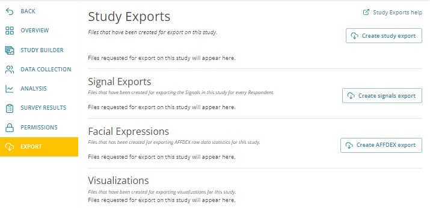
![Signal export CSV for one respondent of the study Help Center example in a spreadsheet: rows 1 to 18 hold metadata from #INFO through #Study name, #Respondent name, #METADATA, #device, #fieldname, #unit, #datatype, #display name, #data range, #short unit, #description, #category, #provided by, #imotionsinternal, #channel identifier, and #group to #DATA; row 19 holds the column names Row, Timestamp, EventSource, SlideEvent, StimType, Duration, CollectionPhase, SourceStimuliName, EventSource, SampleNumber, Anger, Contempt, Disgust, Fear, and Joy; rows 20 and 21 mark StartSlide and StartMedia of the Pre-study calibration, and later rows step the Timestamp by about 31 ms](../assets/ws6/figures/export_sensor_data_csv_metadata.png)
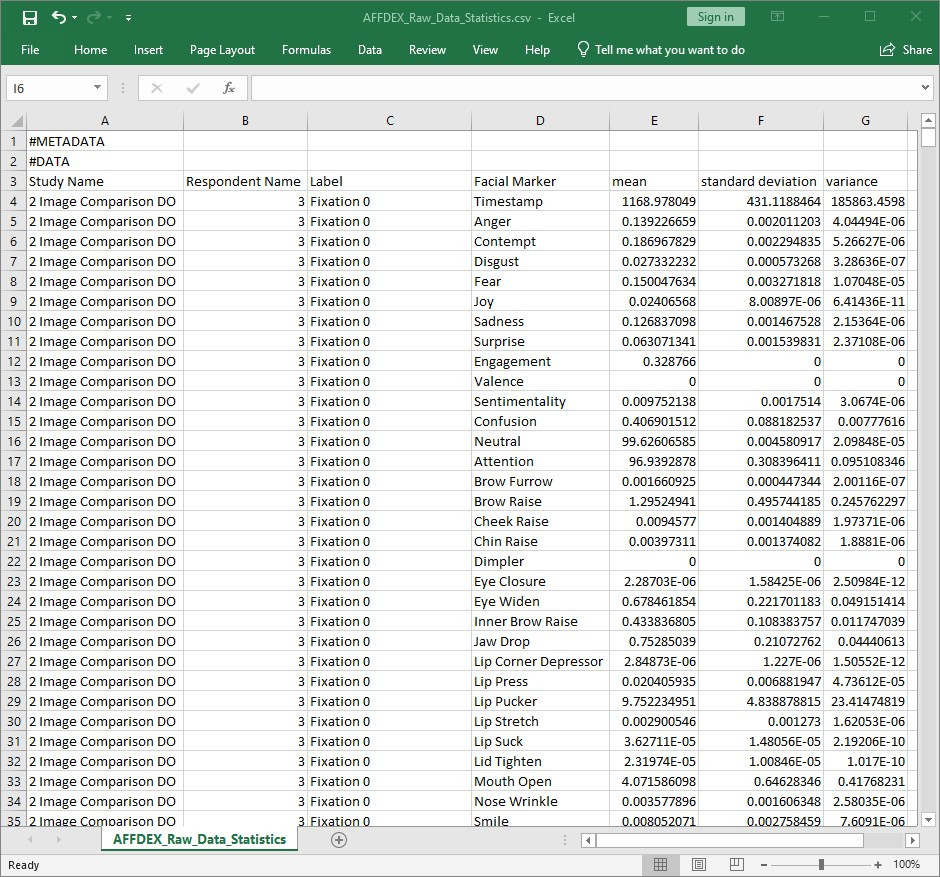
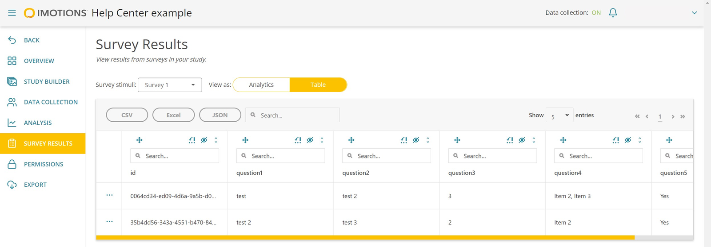
7.9 Open the files safely, and store the videos as promised
Opening. Never double-click an export: Excel then applies the computer's regional defaults and can put every value in one column (Opening Data Export Files in Excel). Import it instead, start at the header row below any metadata rows, and keep the session data's "Eye tracking" column as text, so that a value such as "1.9, 96%" is not turned into a number or a date. Every simulated data file starts with one "# SIMULATED" comment line, which the R script skips and the Excel route of section 08 removes. Save working copies as .xlsx and keep the originals unchanged.
Storing. The face videos now sit on the lab computer, in the study's Capture folder, as well as on my.imotions.com. Once post processing and the exports are done, save working and shared copies with "Save To File" and "Exclude Respondent and Environment camera recordings" ticked, delete the videos as the consent and the IRB protocol promise, and log what was deleted, where, when, and by whom (fix checklist). Never send face videos or face screenshots to iMotions support. How to delete only the videos of an RDC study on my.imotions.com is not documented; ask iMotions in writing first.
Help center articles for this section: Accessing RDC Study Data, Clone, Save, and Import iMotions Studies, Export: Exposure Summary, Export: Data Quality Statistics, Fixation and saccade classification with Hidden Markov Models, RDC Settings and Stimuli Behavior, Facial Expression Analysis: Importing and Post Processing Videos, R Notebook (FEA): Facial expression analysis thresholding and aggregation, AOI Metrics, RDC Testing with iMotions Survey, Export: Sensor Data, Export - Behavioral Research Online, Survey results - Behavioral Research Online, Opening Data Export Files in Excel, Demo study: Food Waste (image, videos and talkaloud), and iMotions 11 release notes. Manual PDFs on this site: Accessing RDC Study Data, RDC Settings and Stimuli Behavior, Export - iMotions Online, and Survey results - iMotions Online (PDF).
Testing the hypotheses: the funnel, attrition, the exclusion rule, drift, and three planned tests
This section runs the planned analyses on the SIMULATED files, in R with analysis.R (output in analysis_output.txt) and then in Excel. Every statistic is simulated and matches that output exactly. The data quality analyses come first, because they decide who is in the tests.
Read the five files, then check them against each other
The session data have one row per opened link (260), the quality table one per completed respondent and slide (1246), the FEA export one per respondent, video, and expression (1780), the AOI export one per respondent and AOI (890), and the survey one per respondent (178). Only the session columns Id to Status and the AOI metric names are documented; the other layouts are modeled, so verify them on the lab computer. All sixteen consistency checks printed OK.
The funnel is a result
The script rebuilds the portal's respondent funnel chart as a table, in which a session entered every step it reached and stopped at the step where it ended. Of the 260 sessions, 178 (68.5 percent) completed with Status Processed (Figure 1). The largest loss was at STEP 5 Screen size (36 sessions, 34 of them phones or tablets), and none of the 29 phone and 7 tablet sessions completed; in all, 75 sessions (28.8 percent) stopped before the videos, 4 during STEP 9 Stimuli presentation*, and 3 during the upload (2 abandoned, 1 with errors). Nobody stopped at STEP 3 Screen recording setup, because screen recording was off; the step at which a phone is stopped is modeled, so test it with a phone during the pilot. Each loss has its own fix: consent wording (STEP 2), camera help (STEP 4), "desktop or laptop computer only" in the invitation (STEP 5), a shorter study (STEP 9), and the data upload alternative (STEP 10).
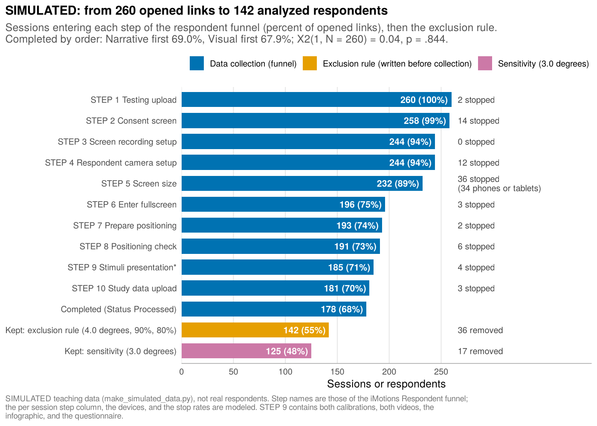
Did the order change who finished?
Attrition, leaving before the end, is expected online. Selective attrition is the danger: if one condition makes more people quit, the finishers differ between conditions, the pitfall of experimenting on the web in which unattended selective attrition leads to surprising (yet false) conclusions (Zhou & Fishbach, 2016). Each video order was its own study flow, assigned before the link was opened, so Block gives the order of every session, including those that stopped early (modeled: verify that an RDC study built in Lab 11.1 can hold two flows with one link each).
A chi square test compares the counts in a table with those expected if order and completion were unrelated; phi (φ) is its effect size, from 0 to 1. Completion was 87 of 126 sessions (69.0 percent) for Narrative first and 91 of 134 (67.9 percent) for Visual first, χ²(1, N = 260) = 0.04, p = .844, φ = .01. The sharper check uses the 185 sessions that reached STEP 9, the first point at which the order could matter: 95.6 against 96.8 percent completed. Its smallest expected count, 3.44, is below 5, so the Fisher exact test, which computes the probability of the table exactly, is reported: p = .718, odds ratio = 0.72, 95% CI [0.10, 4.38]. That confidence interval, the range of values compatible with the data, is wide because only 7 sessions were lost after STEP 9. Exclusion did not depend on order either, χ²(1, N = 178) = 0.02, p = .880 (simulated). These tests have little power for small differences, so report the counts by order too: a nonsignificant test is not proof of equal attrition.
The exclusion rule, applied
The exclusion rule, written before collection: exclude a completed respondent when the accuracy of the Pre-study calibration or the Post-study calibration is above 4.0 degrees, when eye tracking quality on the infographic is below 90 percent, or when face quality is below 80 percent during either video. It removed 36 of the 178 completed respondents (20.2 percent) and kept 142 (69 Narrative first, 73 Visual first). Count the reasons both ways:
| Criterion (simulated) | First reason failed | Failed at all |
|---|---|---|
| Pre-study calibration accuracy above 4.0 degrees | 5 | 5 |
| Post-study calibration accuracy above 4.0 degrees | 12 | 17 |
| Eye tracking quality on the infographic below 90 percent | 14 | 20 |
| Face quality below 80 percent during a video | 5 | 14 |
| Total excluded | 36 |
"First reason" gives each excluded respondent the first criterion failed, in the order of the rule, so it adds up to 36; "failed at all" counts everyone who failed a criterion, so the 14 who failed more than one appear more than once. In the kept sample, eye tracking quality on the infographic averaged 96.50 percent (SD 2.19), and face quality 96.52 and 96.61 percent during the two videos.
Calibration drift
The same 13 point calibration ran at the start and at the end, so a paired t test measures calibration drift: it asks whether the mean of each respondent's difference (Post-study minus Pre-study) is far from zero relative to how much the differences vary. Its effect size, dz, is the mean difference divided by the standard deviation (SD) of the differences (Lakens, 2013), and the Wilcoxon signed rank test repeats the comparison on ranks. Accuracy went from M = 1.71 degrees (SD = 0.99) to M = 2.42 degrees (SD = 1.20), a drift of 0.72 degrees (SD = 0.50), 95% CI [0.64, 0.79], t(177) = 19.05, p < .001, dz = 1.43, 95% CI [1.22, 1.64] (Wilcoxon V = 15415, p < .001). Accuracy is an error, so this is a worse estimate at the end, and it was worse for 165 of the 178 respondents (92.7 percent); the two calibrations correlated r = .91. Drift was also clear among the 142 kept respondents (0.630 degrees, t(141) = 16.02), so it belongs to remote data, not only to the people excluded.
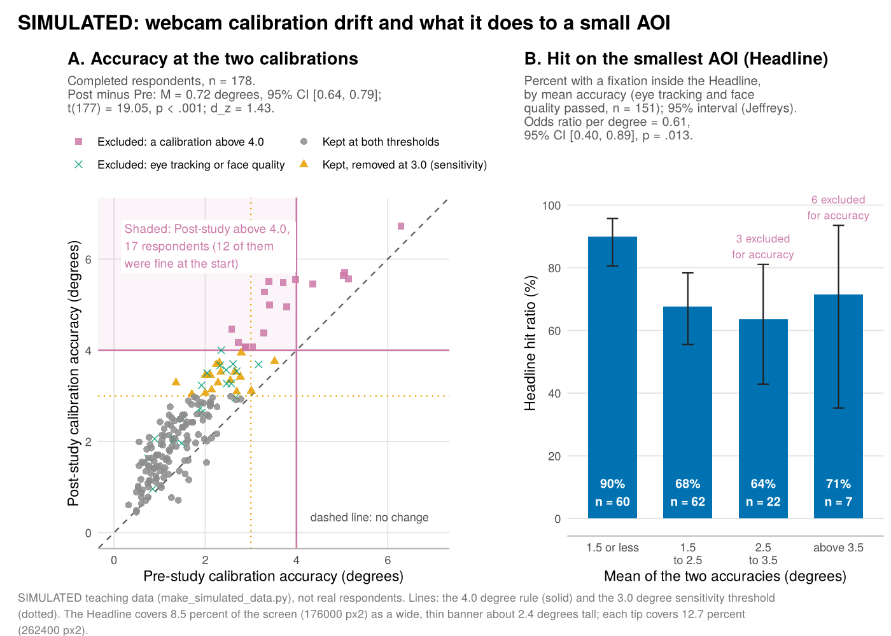
H1: Engagement, compared within each person
H1 is a within subjects comparison: every respondent saw both videos, in an order set by randomization, so each person's difference (visual minus narrative) compares the videos while the person stays the same, and the very different expressiveness of different faces drops out. The p value is the probability of a mean difference at least this large if the videos truly did not differ.
Simulated: Md = 24.14 percentage points, SDd = 28.83, n = 142, so t(141) = 9.98, p < .001, 95% CI [19.36, 28.92].
Respondents were Engaged (AFFDEX Engagement above 50, as percent of time) for M = 19.49 percent of the narrative video (SD = 19.97, Mdn = 13.22) and M = 43.63 percent of the visual video (SD = 26.39, Mdn = 42.96; Figure 2). The effect size was dz = 0.84, 95% CI [0.64, 1.03], from the noncentral t distribution, the distribution t follows when there is a true effect (Excel's large sample approximation gives [0.65, 1.03]). With 21 respondents (14.8 percent) never Engaged during the narrative video, the planned Wilcoxon check matters, and it agreed, V = 8852, p < .001; 113 of the 142 respondents were Engaged longer during the visual video, and the differences were close to normal (Shapiro Wilk test, a test of whether values could come from a normal distribution, p = .105). H1 was supported. Each video came first for about half of the respondents (counterbalancing), and the means by order were close: 21.50 and 42.57 percent in the Narrative first order, 17.59 and 44.63 percent in the Visual first order. Two videos are two stimuli, so a claim about narrative or emotional videos in general would need several of each, treated as a random factor (Judd et al., 2012).
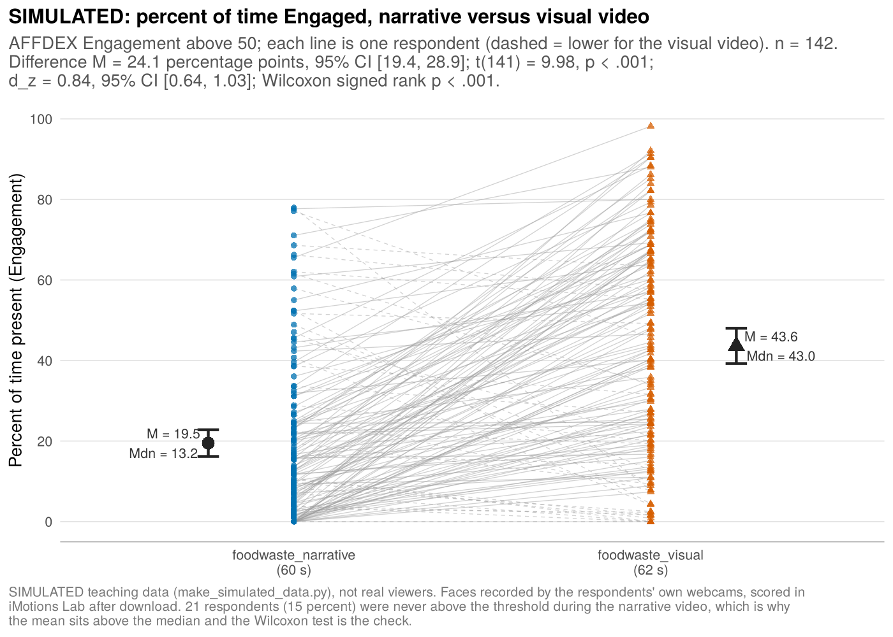
H2: dwell time on the four tips
The four tips on the infographic are large AOIs. Dwell time is the summed duration of the fixations inside an AOI (0 ms if it was never fixated, so every respondent counts), time to first fixation (TTFF) is the time from the infographic's onset to the first fixation inside it, and a hit is at least one fixation inside it; the percent of respondents with a hit is the hit ratio, which iMotions calls Respondent ratio (%).
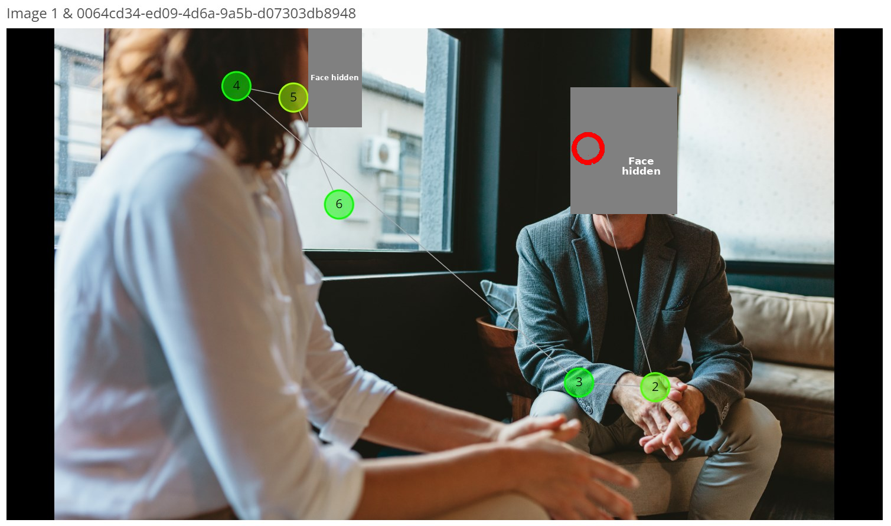
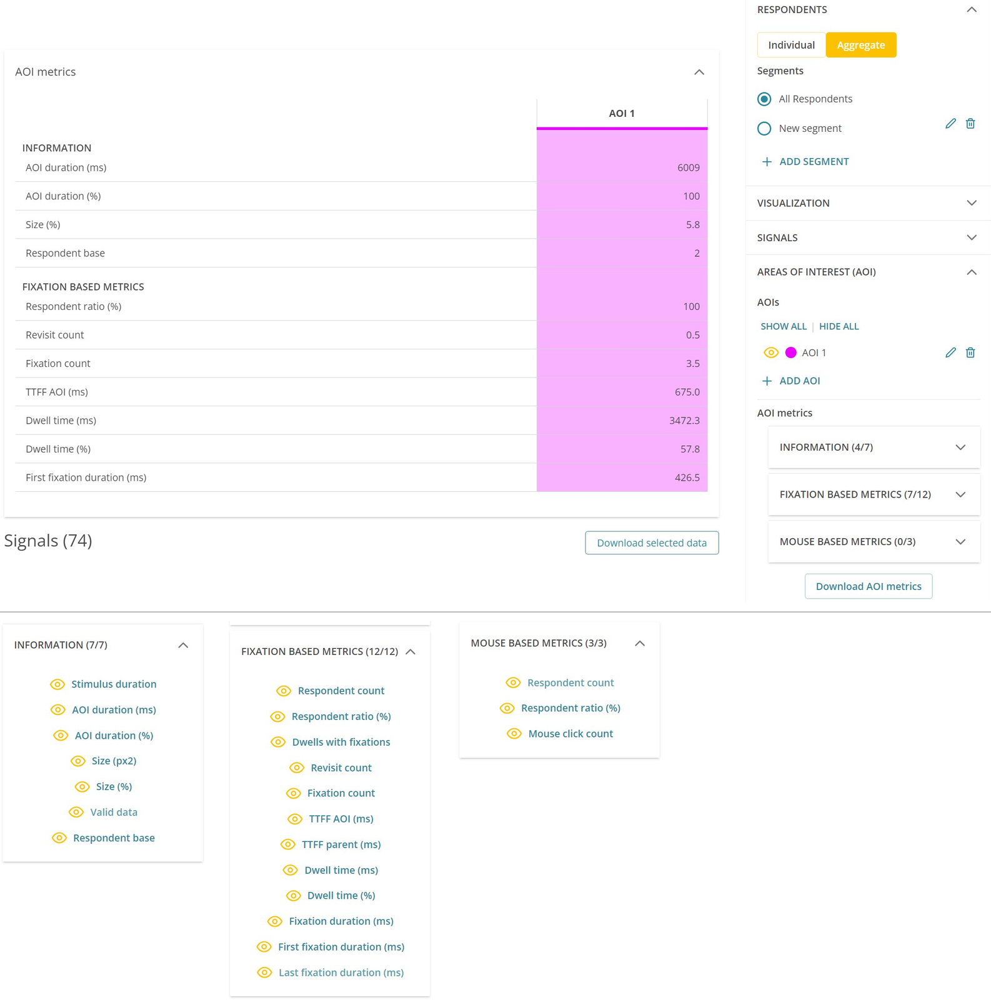
Dwell time is skewed, capped by the 15 s on screen, and measured four times on the same people, so H2 uses the Friedman test: within each respondent the tips are ranked from 1 (least dwell) to 4 (most), and the test asks whether the mean ranks differ more than chance allows. Its effect size, Kendall's W, is the Friedman chi square divided by n (k - 1), where k is the number of tips, and runs from 0 (no agreement among respondents about the order of the tips) to 1 (everyone ranks them the same way). Mean dwell time was 3742 ms for Tip_1 (SD 1660), 2100 ms for Tip_2 (SD 1421), 2032 ms for Tip_3 (SD 1239), and 2003 ms for Tip_4 (SD 1247), with mean ranks of 3.33, 2.24, 2.27, and 2.16 (Figure 3); Friedman χ²(3) = 78.95, p < .001, Kendall's W = .185, n = 142. Tip_1 had the longest dwell for 83 respondents (58.5 percent).
A significant Friedman test says the tips differ somewhere, not where. Testing all six pairs with Wilcoxon signed rank tests raises the chance of a false positive, so the p values get the Holm correction: sort them from smallest to largest, multiply the smallest by 6, the next by 5, and so on down to 1, never let an adjusted value fall below the one before it, and cap them at 1. Tip_1 drew more dwell time than each other tip (mean differences of 1643 to 1739 ms, dz = 0.66 to 0.73, all Holm p < .001), while Tip_2, Tip_3, and Tip_4 did not differ (mean differences of 29 to 96 ms, all Holm p = 1.000). H2 was supported, with three of the six pairs different. Nearly everyone fixated every tip (hit ratios of 98.6 to 100 percent), and the median TTFF followed the reading order: 800.5, 2077.5, 3474, and 4206 ms. Tip_1 sits top left and is read first, so its position and its content are confounded (section 10).
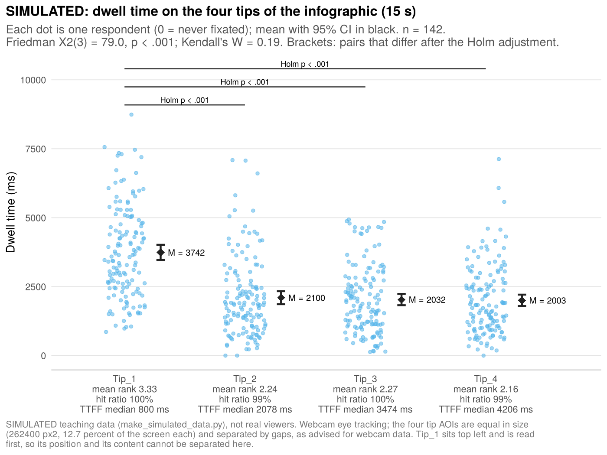
H3: the randomization check
H3 compares intention to reduce food waste (one item, 1 to 7) between the two orders, which are different people. Welch's t test compares two independent groups without assuming equal variances, the recommended default (Delacre et al., 2017), and Hedges' g is the difference in pooled SD units with a small sample correction. The orders differ only in which video came first, assigned at random, so H3 is a randomization check: a nonsignificant result is what randomization predicts, and a significant one would mean a chance imbalance or a real order effect. Intention was M = 5.04 (SD = 1.37, n = 69) after Narrative first and M = 5.34 (SD = 1.22, n = 73) after Visual first, a difference of -0.30, 95% CI [-0.73, 0.13], Welch t(135.97) = -1.37, p = .171, Hedges' g = -0.23, 95% CI [-0.56, 0.10]. The ratings departed from normality (Shapiro Wilk p < .001 in both groups), so the Mann Whitney test, the rank based check for two groups, accompanies it; it agreed, W = 2243, p = .249. The result is consistent with H3 but does not prove the orders equivalent: the interval allows a small difference either way.
Accuracy and the smallest AOI: a logistic regression in plain words
A hit is yes or no, so a straight line through hits and misses would predict impossible values. Logistic regression predicts the probability of a yes from a number, here the mean of the two calibration accuracies, by way of the odds: the probability of a hit divided by the probability of a miss. Its slope b, turned into eb, is the odds ratio per degree, the factor by which the odds change with each extra degree of error; 1 means no relation, and below 1 means fewer hits as accuracy worsens.
Simulated: b = -0.495, SE = 0.200, z = -2.48, p = .013; odds ratio 0.61, 95% CI [0.40, 0.89] (profile likelihood), n = 151.
The sample is the 151 completed respondents whose eye tracking and face quality passed, including 9 excluded for accuracy only, because the question is how hits change across the whole range of accuracy. The Headline was hit by 115 of them (76.2 percent), and the predicted hit probability was .84 at 1 degree, .76 at 2, .66 at 3, and .54 at 4 degrees (Figure 4B). By band, the hit ratio was 90.0 percent at 1.5 degrees or less (n = 60), 67.7 percent at 1.5 to 2.5 (n = 62), and 63.6 percent at 2.5 to 3.5 (n = 22); the 7 respondents above 3.5 degrees were too few for a stable estimate (71.4 percent). A wide banner still catches gaze when the error is sideways, which is why the ratio levels off, and in every band at least 95.5 percent of the respondents hit all four tips.
Sensitivity at 3.0 degrees
A sensitivity analysis reruns the plan under another defensible choice, here the stricter 3.0 degrees the Online articles recommend. It removed a further 17 respondents (125 kept: 59 Narrative first, 66 Visual first) and changed no conclusion. H1: difference 24.36 percentage points, 95% CI [19.47, 29.24], t(124) = 9.87, p < .001, dz = 0.88, 95% CI [0.67, 1.09]. H2: Friedman χ²(3) = 73.18, p < .001, W = .195, the same three pairs significant. H3: Welch t(117.79) = -1.10, p = .275, g = -0.20, 95% CI [-0.55, 0.15].
Exploratory correlations and assumption checks
No hypothesis was written for these, so they are exploratory. The 84 respondents (59.2 percent) who named the visual video more persuasive had a larger Engagement difference (M = 30.15 percentage points, SD = 26.18) than the 58 who named the narrative video (M = 15.44, SD = 30.47), a point biserial correlation (a Pearson r between a number and a 0 or 1 variable) of r(140) = .25, 95% CI [.09, .40], p = .003; Spearman's rho, the same correlation on ranks, was .23, p = .006. Total dwell on the tips was only weakly related to the number of tips recalled (M = 2.12 of 4), r(140) = .16, 95% CI [-.01, .32], p = .058. Both describe this sample; they do not show causes.
The H1 differences were close to normal (Shapiro Wilk p = .105, skewness -0.32) although narrative Engagement was right skewed (skewness 1.20), and the drift differences showed no departure (p = .912). With about 140 respondents even mild departures give a low Shapiro Wilk p, so read the plots; a t test on a mean difference is robust to this much skew, and the rank tests are the checks.
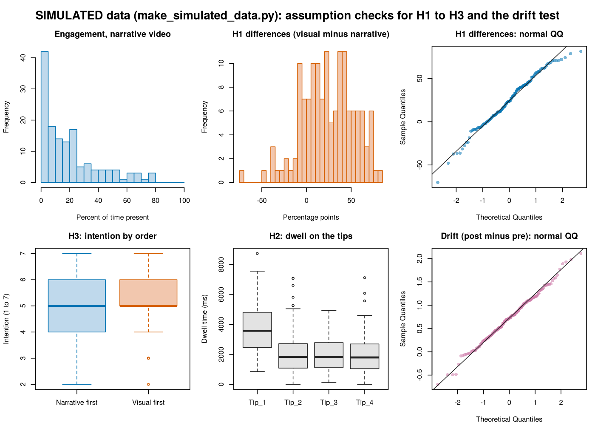
The script, line by line
Code from analysis.R, in order (the color palette, the figure theme, and the figure code of its step 17 are left out), with its output of October 10, 2026.
The Excel route
Without R, use SIMULATED_remote_analysis.xlsx and analysis_excel_walkthrough.md, which cover the funnel, attrition, the exclusion rule, drift, H1 with its 3.0 degree block, and H3. Import each file as the Opening Data Export Files in Excel article describes, not by double clicking: Data > From Text/CSV, Delimiter Comma, File Origin 65001 Unicode (UTF-8), Transform Data, Home > Remove Rows > Remove Top Rows (1, the # SIMULATED line), Home > Use First Row as Headers, the Eye tracking column as Data Type: Text, Close & Load. The data sit on the Session, Quality, FEA, and Survey sheets; helper columns K to O of the Session sheet add the step number, Completed, Order, and the two halves of the Eye tracking cell.
| Quantity | Cell | Formula | Simulated result |
|---|---|---|---|
| Step number of a session | Session!K2 | =IF(H2="Completed",11,VALUE(MID(H2,6,FIND(" ",H2,6)-6))) | 11 for a completed session |
| Session accuracy (text before the comma) | Session!N2 | =IF(D2="","",VALUE(LEFT(D2,FIND(",",D2)-1))) | 1.3 for RESP0001 |
| Entered STEP 1 | Funnel!C5 | =COUNTIF(Session!$K$2:$K$261,">="&A5) | 260 |
| Completed (Status Processed) | Funnel!C15 | =COUNTIF(Session!$G$2:$G$261,"Processed") | 178 |
| Chi square (Pearson, no continuity correction) | Funnel!L23 | =SUMPRODUCT((D22:E23-H22:I23)^2/H22:I23) | 0.04 |
| p (CHISQ.TEST) | Funnel!L26 | =CHISQ.TEST(D22:E23,H22:I23) | 0.844 |
| Decision | Screening!L5 | =IF(SUM(H5:K5)>0,"Exclude","Keep") | Keep or Exclude |
| Excluded | Screening!S8 | =COUNTIF($L$5:$L$182,"Exclude") | 36 |
| Failed only at the Post-study calibration | Screening!S19 | =COUNTIFS(H5:H182,0,I5:I182,1) | 12 |
| Drift p (T.TEST type 1) | Screening!S38 | =T.TEST(C5:C182,D5:D182,2,1) | 9.96e-45 |
| Engagement, narrative, one respondent | H1!D5 | =SUMIFS(FEA!$H$2:$H$1781,FEA!$B$2:$B$1781,$A5,FEA!$D$2:$D$1781,"foodwaste_narrative",FEA!$F$2:$F$1781,"Engagement") | per respondent |
| H1 t | H1!I15 | =I12/I14 | 9.98 |
| H1 p (T.TEST type 1) | H1!I17 | =T.TEST(D5:D146,E5:E146,2,1) | 4.57e-18 |
| dz | H1!I22 | =I12/I13 | 0.84 |
| dz at 3.0 degrees | H1!I53 | =I43/I44 | 0.88 |
| H3 Welch df | H3!F16 | =(F8^2/F9+F11^2/F12)^2/((F8^2/F9)^2/(F9-1)+(F11^2/F12)^2/(F12-1)) | 135.97 |
| H3 p (T.TEST type 3) | H3!F17 | =T.TEST(C5:C73,C74:C146,2,3) | 0.171 |
| Hedges' g | H3!F25 | =F24*F23 | -0.23 |
T.TEST's fourth argument 1 means paired (drift, H1) and 3 means Welch (H3). Funnel counts use step numbers, because the asterisk in "STEP 9 Stimuli presentation*" is a wildcard in COUNTIF. Excel's dz and g intervals are large sample approximations. H2, the Fisher exact test, the logistic regression, the Wilcoxon, Mann Whitney, and Shapiro Wilk tests, and the exact intervals need R. The Check sheet counts mismatches with R in Check!B132; it should be 0.
Help center articles for this section: Opening Data Export Files in Excel, Creating Excel Pivot Tables, Accessing RDC Study Data, Data Collection - Behavioral Research Online, AOI Metrics, and R Notebook (FEA): Facial expression analysis thresholding and aggregation.
Writing the results: the funnel and data quality first, then the hypotheses, tables, and honest captions
A results section reports what was found, in the planned order, and leaves interpretation to the discussion. Follow the journal article reporting standards for quantitative research (Appelbaum et al., 2018); for this study that means the flow of participants with every exclusion and its reason, the descriptive statistics, and, for each hypothesis, a test with an effect size and its interval; the eye tracking guideline adds the details of the eye tracking (Dunn et al., 2024). A remote study adds the funnel, because the people who reach the analysis are a selection of those who opened the link. Every statistic here is simulated; the form is the lesson.
The order of a remote study's results
- Recruitment and attrition. Sessions that opened a link, the loss at each step of the respondent funnel, and completion by order with its test (Figure 1; Table 1).
- Data quality and exclusions. The exclusion rule, the exclusions for each reason counted both ways, exclusion by order, calibration drift, the quality of the kept data, and who the kept respondents were.
- The hypotheses in order. For each: means and SDs, the difference with its interval, the planned test, the effect size with its interval, the planned rank check in a clause, and the verdict.
- The accuracy analysis. What webcam error did to the hits on the smallest AOI.
- Sensitivity analysis, exploratory analyses, and assumption checks, each labeled as such.
State the sign conventions once: H1 differences are visual minus narrative, in percentage points (the difference between two percents); H3 is Narrative first minus Visual first; drift is Post-study minus Pre-study accuracy, so a positive drift is a worse estimate. Keep percent of time, the share of a video in which one respondent's face showed the expression, apart from percent of respondents.
APA numbers
APA style keeps numbers readable (simulated values): the statistic with its degrees of freedom, χ²(1, N = 260) = 0.04 or Welch t(135.97) = -1.37 with the fractional df; then p; then the effect size with its interval, dz = 0.84, 95% CI [0.64, 1.03]. Give exact p values to three decimals (p = .171), and p < .001 below that; never p = .000, even when the output prints 4.57e-18. Drop the leading zero for values that cannot exceed 1 (p, r = .91, Kendall's W = .185, φ = .01) and keep it for dz, Hedges' g, and the odds ratio (0.61), which can. Give units: degrees for accuracy, ms for dwell time, percentage points for differences of percents. Keep the minus sign of a negative difference (-0.30) and match it to the direction in words.
Model paragraphs (simulated)
From section (b) of results_text.md, unchanged except that d_z is set as dz. The same file holds the paragraphs on data quality and exclusions, the smallest AOI, the sensitivity analysis, the exploratory analyses, and the assumption checks; section 08 reports their numbers.
Of the 260 sessions that opened a study link, 178 (68.5 percent) completed and were processed (Figure 1). Fourteen sessions stopped at the consent screen and 12 at the camera setup, and the largest loss occurred at the screen size step (36 sessions, 34 of them on phones or tablets); none of the 29 phone and 7 tablet sessions completed. In all, 75 sessions (28.8 percent of those that opened a link) stopped before the videos started, 4 stopped during the stimuli (the calibrations, videos, infographic, and questionnaire), and 3 during the upload (2 abandoned, 1 with errors). Completion did not differ by order: 87 of the 126 Narrative first sessions (69.0 percent) and 91 of the 134 Visual first sessions (67.9 percent) completed, χ²(1, N = 260) = 0.04, p = .844, φ = .01. Among the 185 sessions that reached the stimuli, where only the order could have mattered, 87 of 91 (95.6 percent) and 91 of 94 (96.8 percent) completed, Fisher exact p = .718, odds ratio = 0.72, 95% CI [0.10, 4.38].
Respondents were Engaged (AFFDEX Engagement above 50) for M = 19.49 percent of the narrative video (SD = 19.97, Mdn = 13.22) and M = 43.63 percent of the visual video (SD = 26.39, Mdn = 42.96; Figure 2). The difference of 24.14 percentage points (SD = 28.83), 95% CI [19.36, 28.92], was significant, t(141) = 9.98, p < .001, dz = 0.84, 95% CI [0.64, 1.03]. Because percent of time scores pile up at zero (21 respondents, 14.8 percent, were never above the threshold during the narrative video) and are right skewed, the Wilcoxon signed rank test served as a check, and it agreed, V = 8852, p < .001; 113 of the 142 respondents were Engaged longer during the visual video. H1 was supported. Descriptively, the visual video also showed more Brow Furrow (M = 8.65 against 4.32 percent of the time), Negative Valence (7.69 against 2.39), Positive Valence (6.65 against 3.09), and Joy (3.86 against 2.08); no hypotheses were tested for these expressions.
During the 15 s infographic the tips drew a mean dwell time of 3742 ms (Tip_1, SD = 1660), 2100 ms (Tip_2, SD = 1421), 2032 ms (Tip_3, SD = 1239), and 2003 ms (Tip_4, SD = 1247; Figure 3). Dwell time differed among the tips, Friedman χ²(3) = 78.95, p < .001, Kendall's W = .185, n = 142. Tip_1 had the highest mean rank (3.33, against 2.24, 2.27, and 2.16) and the longest dwell time for 83 of the 142 respondents (58.5 percent). Holm adjusted Wilcoxon signed rank tests showed that Tip_1 drew more dwell time than each of the other three tips (mean differences of 1643 to 1739 ms, dz = 0.66 to 0.73, all adjusted p < .001), whereas Tip_2, Tip_3, and Tip_4 did not differ from one another (mean differences of 29 to 96 ms, all adjusted p = 1.000). H2 was supported, with three of the six pairs different. Nearly every respondent fixated each tip (hit ratios of 98.6 to 100 percent), and the median TTFF followed the reading order (Tip_1 800.5 ms, Tip_2 2077.5 ms, Tip_3 3474 ms, Tip_4 4206 ms).
Intention to reduce food waste was M = 5.04 (SD = 1.37, n = 69) after the Narrative first order and M = 5.34 (SD = 1.22, n = 73) after the Visual first order, a difference of -0.30, 95% CI [-0.73, 0.13], that was not significant, Welch t(135.97) = -1.37, p = .171, Hedges' g = -0.23, 95% CI [-0.56, 0.10]; the Mann Whitney test agreed, W = 2243, p = .249. The result is consistent with H3 and is what randomization predicts. A nonsignificant randomization check does not show that the orders were equivalent: the interval still allows a small difference in either direction.
A nonsignificant check, and a large sample
H3 shows the first: a randomization check that is not significant is reported as consistent with randomization, with its interval, never as proof that the groups were equal, and "did not reach significance" is never "a trend toward significance." H1 and H2 show the second: with 142 respondents a small effect can reach p < .001, so the effect size carries the weight. Kendall's W = .185 is modest agreement about the order of the tips, and dz = 0.84 is large by the usual rule of thumb (0.2 small, 0.5 medium, 0.8 large), but neither number says anything about persuasion.
A model funnel table
| Table 1 (simulated). Respondent funnel, from opened links to analyzed respondents | Entered | Stopped at this step | Percent of opened links |
|---|---|---|---|
| STEP 1 Testing upload | 260 | 2 | 100.0 |
| STEP 2 Consent screen | 258 | 14 | 99.2 |
| STEP 3 Screen recording setup | 244 | 0 | 93.8 |
| STEP 4 Respondent camera setup | 244 | 12 | 93.8 |
| STEP 5 Screen size | 232 | 36 | 89.2 |
| STEP 6 Enter fullscreen | 196 | 3 | 75.4 |
| STEP 7 Prepare positioning | 193 | 2 | 74.2 |
| STEP 8 Positioning check | 191 | 6 | 73.5 |
| STEP 9 Stimuli presentation* | 185 | 4 | 71.2 |
| STEP 10 Study data upload | 181 | 3 | 69.6 |
| Completed (Status Processed) | 178 | 68.5 | |
| Kept by the exclusion rule (4.0 degrees, 90 percent, 80 percent) | 142 | 36 excluded | |
| Kept at 3.0 degrees (sensitivity) | 125 | 17 more excluded |
Note. SIMULATED teaching data. Step names are those of the iMotions Respondent funnel; the per session step column, the devices, and the stop rates are modeled. STEP 9 holds both calibrations, both videos, the infographic, and the questionnaire. Of the 36 sessions stopped at STEP 5, 34 were phones or tablets. Completed by order: Narrative first 87 of 126 (69.0 percent), Visual first 91 of 134 (67.9 percent), χ²(1, N = 260) = 0.04, p = .844.
A model table for H1 and H2
| Table 2 (simulated). Engagement and dwell time, n = 142 | M (SD) | Mdn | Hit ratio (%) | TTFF Mdn (ms) | Mean rank |
|---|---|---|---|---|---|
| Engaged, foodwaste_narrative (percent of time) | 19.49 (19.97) | 13.22 | |||
| Engaged, foodwaste_visual (percent of time) | 43.63 (26.39) | 42.96 | |||
| Difference, visual minus narrative (percentage points) | 24.14 (28.83) | 23.82 | |||
| Dwell time, Tip_1 (ms) | 3742 (1660) | 3580.5 | 100.0 | 800.5 | 3.33 |
| Dwell time, Tip_2 (ms) | 2100 (1421) | 1839 | 98.6 | 2077.5 | 2.24 |
| Dwell time, Tip_3 (ms) | 2032 (1239) | 1842 | 100.0 | 3474 | 2.27 |
| Dwell time, Tip_4 (ms) | 2003 (1247) | 1801 | 99.3 | 4206 | 2.16 |
| Dwell time, Headline, the smallest AOI (ms; not tested) | 379.9 (367.6) | 280 | 76.8 | 676 |
Note. SIMULATED teaching data, kept respondents. Engaged: AFFDEX Engagement above 50 (FEA thresholding R Notebook). H1: t(141) = 9.98, p < .001, dz = 0.84, 95% CI [0.64, 1.03]; Wilcoxon V = 8852, p < .001. H2: Friedman χ²(3) = 78.95, p < .001, Kendall's W = .185; Holm adjusted Wilcoxon tests, Tip_1 against each other tip p < .001, all other pairs p = 1.000. Dwell time is 0 ms when an AOI was never fixated; TTFF medians are for respondents with a hit; mean ranks run from 1 (least dwell) to 4 (most) within each respondent. Tip AOIs 262400 px2 each, Headline 176000 px2, on a 1920 x 1080 infographic shown for 15 s.
A model figure caption
A caption says what is plotted, for whom, and what the marks mean, so the figure stands alone:
What the iMotions Online survey page can and cannot show
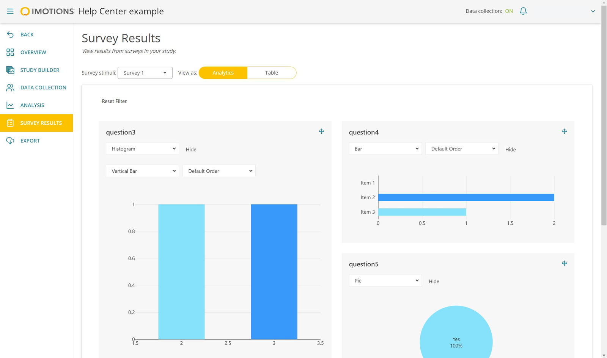
The page describes; it does not test, shows no intervals, and does not split the answers by video order unless they are filtered by a segment (a portal feature added in 2025). For an RDC study the answers come from the survey export in iMotions Lab ("the survey data export option"). Use the charts to look at the data and the tests to write the results.
The client version
A client wants a short answer in plain words, and three cautions keep it honest. "More engaging" is not "more effective": Engagement measures how much faces moved, intention was not measured for each video, and only an exploratory correlation (r = .25) links the Engagement difference to the video respondents called more persuasive. The first tip was read longest, but it was also first in reading order, so its position, not its content, may explain that. And these are simulated data.
Viewers' faces were expressive for a larger share of the emotional visual video than of the narrative video (43.6 against 19.5 percent of the running time on average), and 113 of 142 viewers showed more expression during the visual video. Expression is not persuasion: the study did not measure which video changed intentions more, and intention to reduce food waste did not differ by which video came first. On the infographic, viewers spent the most time on the top left tip, which is also the tip read first, so the study cannot say whether its content or its place drew the time; all four tips were seen by nearly everyone. Of 260 people who opened the link, 142 gave usable data, and phones and tablets cannot take part. These are simulated data for teaching.
Help center articles for this section: Survey results - Behavioral Research Online, Data Collection - Behavioral Research Online, AOI Metrics, and Demo study: Food Waste (image, videos and talkaloud).
Discussion and publication: what a remote study can claim, what limits it, and when to choose the lab instead
The discussion answers the client's question from section 01, which video moves people more and which tip they read, says what the answer means and does not mean, lists the limitations that bound it, and places the work in a literature. It is also where a remote study is most tempted to overclaim, because its sample is large and its p values are tiny. Every number below is simulated.
What the results mean, and what they do not
In these simulated data the emotional visual video kept the respondents' faces expressive for more than twice as much of its running time as the narrative video, a large within subjects effect (dz = 0.84) that held under the stricter accuracy threshold. The direction matches the vendor's analysis of the Food Waste demo, which reported engagement 57 percent of the time for the visual video against 19 percent for the narrative video. Facial responses gathered over the Internet have been used to measure ad preferences (McDuff et al., 2014) and, in a large scale analysis, to predict ad liking and purchase intent (McDuff et al., 2015); a web based facial tracking field study asked why, when, and how much to entertain consumers in advertisements (Teixeira et al., 2014); and emotion induced engagement has been studied in Internet video advertisements (Teixeira et al., 2012). Engagement here is an expressiveness score, however, not a measure of persuasion; respondents with a larger Engagement difference were somewhat more likely to name the visual video more persuasive (r = .25), but intention to reduce food waste was not measured separately for each video, so the study cannot say which video persuaded more. On the infographic, the top left tip drew the most dwell time and the other three tips did not differ; because Tip_1 is also the first tip in reading order, its position and its content cannot be separated. The randomization check found no order difference in intention, and attrition did not differ by order.
The paragraph is adapted in one place: its sentence on the literature describes each source by what the source's own title states. The vendor's numbers need a sentence of their own. The demo article reported that "The Visual video had higher levels of engagement (57% time spent) compared to the Narrative video (19% time spent)." That result came from different people, a number of respondents the article does not state (the lab copy holds four), and the vendor's own processing, and the simulated data were generated to follow planned effects in the same direction (make_simulated_data.py). The agreement in direction is built in and is no evidence at all; never set the two sets of numbers side by side as if they came from one study.
The data quality results are the main lesson
More than a quarter of the sessions that opened a link (28.8 percent) ended before the videos started, mostly on phones and tablets, which RDC does not support; a fifth of the completed respondents (20.2 percent) failed the quality rule; and accuracy worsened by 0.72 degrees between the calibrations, so that 12 respondents who calibrated well at the start no longer met the rule at the end. A study with only a Pre-study calibration would have kept them, and a screen based on the rounded session level accuracy would have missed 6 failures. In a remote study the data quality plan is part of the method: the respondent funnel to report, the exclusion rule, the second calibration, the large AOIs, and the sensitivity analysis were all written before the first link went out.
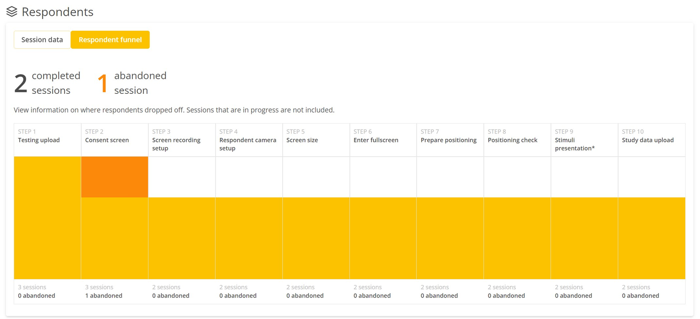
Limitations of a remote webcam study
- Simulation. The data were generated to follow the planned effects in make_simulated_data.py; they demonstrate the analysis, not the effects.
- Webcam accuracy and AOI size. Kept respondents' accuracy averaged about 1.4 degrees at the start and 2 degrees at the end, far from the sub-degree accuracy of an infrared eye tracker; studies of webcam eye tracking range from a first look in cognitive science (Semmelmann & Weigelt, 2018) to a system described as close to laboratory standards (Kaduk et al., 2024). Only large AOIs with gaps give dependable results: the thin Headline lost hits as accuracy worsened (odds ratio 0.61 per degree), and an error that misses one AOI can place a fixation in its neighbor. The fixation filter must be recorded.
- A self selected sample. Self selection: the respondents chose themselves, having received an invitation, owned a computer with a webcam, and agreed to be filmed at home, so the results describe that group. Data quality has been compared across platforms and panels for online research (Peer et al., 2022) (Douglas et al., 2023). The survey had no attention check (an item only an attentive respondent answers correctly) and nothing to detect careless responding, answering without reading; see work on identifying careless responses in survey data (Meade & Craig, 2012), instructional manipulation checks (Oppenheimer et al., 2009), and online attention checks with MTurk and subject pool participants (Hauser & Schwarz, 2016).
- Attrition and exclusions. 82 of 260 sessions did not complete, and 36 of 178 completed respondents were excluded. Attrition did not differ by order here, but selective attrition in web experiments can produce surprising yet false conclusions (Zhou & Fishbach, 2016), so the loss at every step and every exclusion with its reason belong in the report (Appelbaum et al., 2018) (Reips, 2002).
- Home conditions. Screen size, distance, light, camera position, and sound varied, while RDC converts gaze with fixed screen settings (1920 x 1080 pixels, 47.4 by 29.6 cm at 65 cm), and platforms, browsers, and devices differ in timing (Anwyl-Irvine et al., 2021) (Bridges et al., 2020). Nothing confirmed that the narrative video's soundtrack was heard; switch the audio output check on in a real study.
- Post processing. The face scores were computed in iMotions Lab by post processing after download, because iMotions deprecated server side batch processing on June 1, 2026; it takes about as long as the videos, every stimulus must be selected, and the threshold of 50 is a convention.
- Storage and consent. A remote study records identifiable face video in respondents' homes and stores it in the cloud and on the lab computer, and what gaze reveals about a person raises privacy questions of its own (Kröger et al., 2020).
- One pair of videos. The videos differ in imagery, pace, music, and length at once, so the results describe these stimuli; general claims need several stimuli of each kind treated as a random factor (Judd et al., 2012).
- Position on the infographic. Tip_1 sits top left and is read first, and the median TTFF followed the reading order, so position and content are confounded; a real study would rotate the tips across positions in several versions.
Choosing the lab, RDC, or iMotions Online for a client
The lab's study type decision guide (Project doc 01) treats a remote study as its own type, with the same questions as an image or video test "but with a larger or distant sample, lower precision," planned with 60 or more started respondents because losses at calibration and quality checks are expected. It chooses remote when people are off campus or more than about 60 are needed quickly, "and accept lower spatial precision: webcam eye tracking supports large regions of interest, not small text." The rest of the table is this workshop's reading of the manuals, which give no such rule.
| What the client needs | Lab (Aurora, webcam, and other sensors) | RDC | iMotions Online |
|---|---|---|---|
| Fine detail: small text, small AOIs | Yes, well under one degree | No, large AOIs only | No, large AOIs only |
| Sensors beyond the webcam (skin conductance, EEG, glasses) | Yes | No | No |
| Control of light, distance, sound, and attention | Yes | No | No |
| Many or distant respondents, quickly | No, one at a time in the lab | Yes, on desktops and laptops | Yes; a tablet setting exists (verify) |
| Face scores | AFFDEX in iMotions Lab | Lab Post Processing > Affectiva after download | On iMotions servers; no signal thresholding in the browser |
| Analysis tools | All Lab tools | All Lab tools after import, such as the FEA thresholding notebooks and the Emotional Heatmap | Browser tools: gaze paths, heat maps, AOIs, signals, survey charts |
| Computer needed | The lab computer | The lab computer with key 0001, for building, uploading, and post processing | Any browser, at my.imotions.com |
| Confidential stimuli | Stay in the room | Effectively public: respondents "will potentially be able to record or download the stimuli files" | Shared by link, so the same risk applies (this workshop's inference) |
Choose the lab when the question needs fine spatial detail, other sensors, controlled conditions, or confidential stimuli. Choose RDC when the sample must be remote and the analysis needs iMotions Lab tools, and iMotions Online for student projects and quick studies the browser tools can answer; MKT 488 will use it in Spring 2027.
Webcam respiration: an emerging option (awareness only)
iMotions also offers webcam respiration, breathing estimated from "subtle movements in the chest area" in the webcam video. The data are "automatically collected for all stimuli in iMotions Remote Data Collection studies," but "the feature must be enabled for the account first," it is "tied to Webcam Eye Tracking," and "the best results are obtained for stimuli that require passive viewing." On the lab computer Post Processing > Respiration was grayed for the demo, and whether the feature is enabled for the lab account is not recorded, so treat it as something to watch, not a measure to plan on.
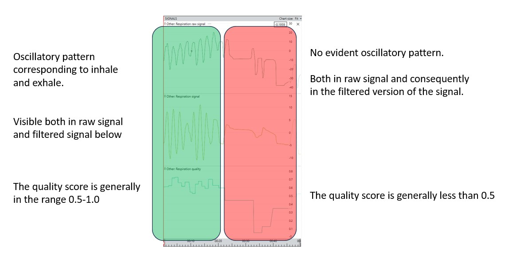
Ethics: consent, storage, and the stored videos
A remote study points a camera at people in their homes. At Jacksonville State the IRB approves the study before any link goes out, a study with minors needs parental permission and the minor's assent, and the consent screen carries the approved informed consent text: what is recorded (face video for eye tracking and expressions, voice only if the microphone is on), where it is stored and processed, for how long, and who sees it. The manuals disagree on storage, so the text follows what has been verified: the consent and privacy FAQ names Amazon Web Services, Microsoft Azure, and Google Cloud Platform for cloud products, while the Online privacy policy names Amazon Web Services as the sub-processor; the 2023 Online policy keeps data "until the user deletes it," while the current Online introduction says respondent videos are "deleted after 30 days"; and an RDC study's face videos are downloaded to the lab computer, because post processing needs them. Studies with residents of the European Union fall under the GDPR even when the researcher is outside it, and iMotions asks institutions to accept a Data Processing Agreement (DPA) before uploading study data; whether JSU has accepted it is not recorded. On the concerns ethics committees raise about online survey tools, see Buchanan and Hvizdak (2009).
The lab's conventions follow (fix checklist, Project doc 13): the consent wording matches what is recorded; never write that no video is saved unless iMotions confirms in writing that recordings are deleted after processing; leave the microphone off unless the study needs voice; save working copies with "Exclude Respondent and Environment camera recordings"; delete videos as promised and log what was deleted, where, when, and by whom; and never send face videos or face screenshots to iMotions support. Release 11.1.11 adds an option to collect facial expression data "without storing respondent videos," and the 11.1 Post Processing menu lists "Find and blur faces"; whether either applies to RDC is an item to verify.
Where this work is published, and what reviewers ask
- Journal of Marketing Research and Marketing Science, for advertising questions; they published the studies of emotion induced engagement in Internet video advertisements (Teixeira et al., 2012) and of entertainment in advertisements with web based facial tracking (Teixeira et al., 2014).
- Journal of Consumer Research, which published work on crowdsourcing consumer research (Goodman & Paolacci, 2017).
- IEEE Transactions on Affective Computing and Image and Vision Computing, for automated facial coding of responses to ads (McDuff et al., 2015) (McDuff et al., 2014).
- Behavior Research Methods, for a methods contribution; it published webcam eye tracking studies (Semmelmann & Weigelt, 2018) (Slim & Hartsuiker, 2023) (Kaduk et al., 2024) (Saxena et al., 2024), studies of online data quality and timing (Peer et al., 2022) (Anwyl-Irvine et al., 2021), and the eye tracking reporting guideline (Dunn et al., 2024).
Expect reviewers to ask for the funnel by step and by condition; the exclusion rule, its sources, and whether it was fixed in advance; accuracy at both calibrations; AOI sizes and gaps; the fixation filter; where and how the face scores were computed, with which threshold; why percent of time was tested with a rank check; how many stimuli were tested; what the consent text said about the videos; and whether a lab study would have answered the question better. Report with the eye tracking guideline (Dunn et al., 2024) and the journal article reporting standards (Appelbaum et al., 2018).
Next steps
This workshop keeps the habits of the earlier ones: rules written before the first respondent, a planned test with a planned check, and every setting recorded. It adds one: in a remote study, write the data quality plan and the consent text before the first link goes out, and take the study yourself on a second computer first. The practical in section 13 does exactly that with a short RDC test study, from building it to reporting the funnel and the quality of one session.
Help center articles for this section: Demo study: Food Waste (image, videos and talkaloud), Participating in RDC Studies, Webcam Respiration - Getting Started, Respondent informed consent and data privacy FAQ, iMotions Online privacy policy, Getting Started with Remote Data Collection (RDC), and iMotions 11 release notes. Manual PDFs on this site: Respondent informed consent and data privacy FAQ, iMotions Online privacy policy, and Webcam Respiration - Getting Started (PDF).
Resources: where every step of this workshop comes from
Nothing in this workshop was invented. Every menu path comes from an iMotions help center article, a manual PDF, a lab document, or the lab computer itself (screen captures made on October 10, 2026, none of which shows a respondent's face or any respondent data); every design rule comes from a published source or is labeled as a lab rule; and every number in the analysis comes from the simulated data files listed under (e). This section collects all of it in seven groups, so that you can go to the original when a step in the lesson is not enough. The help center at help.imotions.com is reached signed in through my.imotions.com with the lab account, and every article also has a Markdown twin at the page address followed by .md. The manual PDFs under (b) are the lab's own downloaded copies, which iMotions has given Dr. Sciuchetti permission to share with this class. Every printed PDF carries a 2023 date, some of their screenshots show portal footers from 2024 or 2025, and none describes iMotions Lab 11.1 or the 2026 portal; most iMotions Online articles have also been renamed since they were printed (their titles now end in "Behavioral Research Online"). So where a manual and the screen disagree, the lab computer and my.imotions.com are the reference. Where the manuals are silent or contradict each other (accuracy against "Precision", 3.0 against 4.0 degrees, the moment a study locks, how long respondent videos are kept, the fixation filter applied to remote data, whether an RDC study can hold two flows with one link each), the workshop says so and lists the item to verify on the lab computer or my.imotions.com.
(a) iMotions help center articles used in this workshop
Remote Data Collection (RDC) in iMotions Lab
- Getting Started with Remote Data Collection (RDC). The route from iMotions Lab to my.imotions.com and back (design in Lab, get the link, monitor, download and load), how RDC differs from iMotions Online, the researcher requirements, and the Data Processing Agreement, whose text and screenshot disagree about who must accept it. (Steps 00, 01, 04, 05, and 10)
- Creating RDC Studies. Add New Study, the Remote Data Collection tile, Select sensors, the stimuli an RDC study accepts, the design recommendations (under 10 minutes; 1920 x 1080 and 30 frames per second at most), Upload to iMotions Cloud, the Data Collection page on my.imotions.com, and the warning that a live study is essentially public. (Steps 01, 02, 04, 05, and 06)
- RDC Settings and Stimuli Behavior. What must be set in Lab before upload (sensors, order, exposure limits, advancement) and cannot change afterward, the dashboard settings that can, the rule to press Update before Start remote data collection, and the rule that every stimulus stays selected for facial expression post processing. (Steps 01, 02, 04, 06, and 07)
- RDC Testing with Webcam Eye Tracking. Web Camera as the eye tracker, the 13 point Pre-study and Post-study calibrations, custom calibration slides, the 2 second minimum (4 seconds recommended) that otherwise blocks Start remote data collection, and calibration at the start and the end as "currently the best practice". (Steps 02, 04, and 06)
- RDC Testing with Images and Videos. File formats (.jpg or .png; .mp4, with .wmv transcoded), the image settings including the 300 second exposure maximum, and Record web cam, which must be on for calibration images. (Step 04)
- RDC Testing with iMotions Survey. The Web Survey Slide and its six element types, and the survey data export after the study is downloaded. (Steps 04 and 07)
- RDC Testing With Websites. New tab against Embed in iFrame, Check website compatibility, and the return address https://endstimulus.imotions.com. (Step 04)
- RDC Testing With Qualtrics Survey. The Qualtrics route with its redirect and embedded data fields; it needs a Qualtrics license, which JSU does not have. (Step 04)
- RDC Cross Communication with Other Websites. Parameters on the study link, the redirect tokens
${studyId},${respondentId},${respondentLabel}, and${query}, and the warning that GET requests should never carry sensitive data. (Step 05) - RDC Using Test Plans. A legacy page on pseudo-randomization per participant with a test plan, cited by RDC Settings and Stimuli Behavior; background only, not read for this workshop. (background for Step 04)
- Participating in RDC Studies. What the respondent needs (a desktop or laptop computer, not a phone or tablet; an updated browser; the camera at the top center of the screen; even light) and every screen from Welcome and consent through screen sharing, webcam and microphone, sound check, screen size, fullscreen, the face oval, calibration, and the upload to Thank you. (Steps 02, 05, and 10)
- Accessing RDC Study Data. The respondent list (Id, Started, Ended, Eye tracking, Est. face %, Block, Status), the statuses In Progress, Processing, Processed, Abandoned, and Errors, Generate study zip file, and File > Load Study from File; it calls the degrees column "Precision". (Steps 03, 05, 06, 07, and 08)
- Using the iMotions Study Builder. The stimulus types an RDC study accepts, and the fixed RDC screen settings (1920 x 1080 pixels, a 47.4 by 29.6 cm screen at 65 cm) that the user cannot edit. (Steps 04 and 06)
- Clone, Save, and Import iMotions Studies. Cloning a study under a new name (respondents and recordings are not copied), the basis of the pilot copy, and a third spelling of the upload command. (Steps 04 and 07)
iMotions Online
- Introduction to iMotions Online. The browser based platform, its limits (images 30 seconds, videos 10 minutes, over-recruit, no sub-degree accuracy, large AOIs with a buffer of space), and, in the current version, the three study types, the Prolific integration, and the statement that respondent videos are deleted after 30 days. The printed PDF is titled "An introduction to iMotions Online". (Steps 01, 04, 05, and 06)
- Study builder - Behavioral Research Online. Calibrations that cannot be removed, + ADD STIMULI and + ADD FLOW, the stimulus types, and the calibration settings (9 or 13 points, color, point order). (Steps 02 and 04)
- Survey builder - Behavioral Research Online. Edit survey, the Designer, Preview, Themes, Logic, and JSON Editor tabs, and the rule that stimuli cannot be edited once a study has respondents. (Step 04)
- Permissions - Behavioral Research Online. All company users, Only me, or Select users individually, then update study editors. (Step 04)
- Uploading new student licenses. How an educator sends iMotions the list of student accounts, ideally a week ahead. (background for Step 04)
- Sensors - Behavioral Research Online. The page that now describes the sensor switches of an Online study. It is not among the lab's local copies and was not read for this workshop; read it before building an Online study and tell Dr. Sciuchetti if it differs from Step 04. (Step 04)
- Collecting Data with iMotions Online. Data quality depends on the camera recording of the face; lighting, the head position check and eye detection, browsers, and about 50 MB of free disk space per minute of recording. (Step 05)
- Data Collection - Behavioral Research Online. The data quality box (accuracy, a threshold of 3.0; quality at least 90 percent; face at least 80 percent), Start data collection and the two statements of when a study locks, the respondent list and the Respondent funnel with its ten steps, visual and language options, the Personalized consent screen, redirects, and the data upload alternative. The printed PDF is titled "Data collection - iMotions Online". (Steps 02, 05, 06, 08, and 09)
- Analysis - Behavioral Research Online. Segments with data quality filters, gaze paths, heatmaps, signal overlays, the 39 AFFDEX signals, the I-HMM filter, AOIs, and Download AOI metrics. (Step 06)
- Survey results - Behavioral Research Online. Analytics and table modes and the .csv, .xlsx, and .json downloads. (Steps 07 and 09)
- Export - Behavioral Research Online. Create study export, Create signals export (18 rows of information above the column header), and Create AFFDEX export, which writes AFFDEX_Raw_Data_Statistics.csv. (Step 07)
- Using iMotions Online with a panel provider. Panel providers, parameters on the study link, reserved parameter names, "pass only IDs, never names or other personal data", redirects, and the Session <parameter> columns of the session download. (Steps 02 and 05)
- iMotions-Prolific Integration and its Remote Data Collection version. Not among the lab's local copies and not read for this workshop; the integration is not enabled for the lab's account. (background; not linked from a step)
Webcam eye tracking, AOIs, and fixation filters
- Areas of Interest (AOIs). The padding of about 1 to 1.5 degrees recommended around an AOI, and the sentence that webcam eye tracking "requires an even greater buffer". (Steps 02, 04, and 06)
- AOI Metrics. The names of the AOI metrics (dwell time, TTFF, Respondent ratio, and the others) used in the simulated AOI export. (Steps 01, 03, 07, 08, and 09)
- Fixation and saccade classification with Hidden Markov Models. HMM as "the default filter for remote data collection studies with webcam-based eye tracking", its agreement with I-VT, and the warning that no filter corrects the noise of webcam data. (Steps 06 and 07)
- Emotional Heatmap. Gaze points kept only where an AFFDEX signal passes a threshold; it accepts RDC data and is one of the analyses of the Food Waste demo article. (Step 10)
Facial expression analysis and exports in iMotions Lab
- Facial Expression Analysis: Importing and Post Processing Videos. Post processing takes "roughly the same as the duration of that video", as the lab's fix checklist quotes it. (Step 07)
- R Notebook (FEA): Facial expression analysis thresholding and aggregation. The FEA thresholding notebook behind the percent of time present. (Steps 01, 03, 06, 07, and 08)
- Export: Exposure Summary. The data quality percent and the samples recorded at study, respondent, or stimulus level; a visible Calculate button means the summary has not been calculated. (Steps 03 and 07)
- Export: Data Quality Statistics. The data quality export that the lab's fix checklist cites for screening remote data; not read for this workshop. (Step 07)
- Export: Sensor Data. The sample by sample export, one file per respondent; after post processing its export editor should list the Affectiva AFFDEX signal groups, as it did on the lab computer for the lab's first remote study, which makes it the check that post processing worked. (Step 07)
- Opening Data Export Files in Excel. The import route into Excel, and why not to double click a .csv export. (Steps 07 and 08)
- Creating Excel Pivot Tables. The PivotTable behind the descriptive AOI table of the Excel route. (Step 08)
Consent, privacy, and data protection
- Respondent informed consent and data privacy FAQ. What the respondent must be told, the duty to declare where cloud data are stored and processed, the cloud providers named (Amazon Web Services, Microsoft Azure, Google Cloud Platform), retention, the data controller and data processor, and how to anonymize. (Steps 05 and 10)
- iMotions Online privacy policy. The data protection rules and GDPR FAQ of iMotions Online: Amazon Web Services as the only sub-processor named, processing in Denmark, retention "until the user deletes it", and respondent videos that can be deleted separately; Step 05 sets these beside the current Online introduction. (Steps 05 and 10)
The demo study, release notes, and webcam respiration
- Demo study: Food Waste (image, videos and talkaloud). The demo behind the worked example: a within subjects design with the order of the two videos randomized and the infographic, survey, and talkaloud always after them; AFFDEX thresholding at 50; "The Visual video had higher levels of engagement (57% time spent) compared to the Narrative video (19% time spent)"; and the note that the videos and voices were removed to anonymize the data. (Steps 01, 03, 07, 09, and 10)
- iMotions 11 release notes. Remote batch processing deprecated on June 1, 2026 (11.1.2) and its options removed (11.1.5), facial expression data collected "without storing respondent videos" (11.1.11), webcam respiration as a post processing batch job (11.1.3), and fixes to Online and remote study imports. (Steps 06, 07, and 10)
- Webcam Respiration - Getting Started. Breathing from chest movements in the webcam video, its four signals, and the 0 to 1 quality score; awareness only. (Step 10)
- R Notebooks (Respiration): Respiration Processing and Video-based Respiration Post-Processing. Background for webcam respiration; the second page is not among the lab's local copies and was not read. (background for Step 10)
(b) The lab's manual PDFs on this site
Local copies of the articles above, for the moments at the lab computer when you cannot sign in. Twenty-five are new with this workshop; Respondent informed consent and data privacy FAQ.pdf was already listed in earlier workshops. Two of them, iMotions Online Study Setup.pdf and Webcam Eye Tracking.pdf, have no page in the help center index and exist here only as PDFs. Seven file names keep a double space where the online title has a hyphen (for example "Analysis iMotions Online.pdf"); the links below include it.
- Getting Started with Remote Data Collection RDC.pdf. The route, RDC against iMotions Online, the requirements, and the Data Processing Agreement (6 pages); online title: Getting Started with Remote Data Collection (RDC).
- Creating RDC Studies.pdf. Creating, building, and uploading an RDC study, and the Data Collection page (11 pages).
- RDC Settings and Stimuli Behavior.pdf. What is set in Lab before upload and what the dashboard can change (9 pages).
- RDC Testing with Webcam Eye Tracking.pdf. Calibrations, custom calibration slides, and the 2 second minimum (5 pages).
- RDC Testing with Images and Videos.pdf. Formats and image and video settings (8 pages).
- RDC Testing with iMotions Survey.pdf. The Web Survey Slide and the survey export (4 pages).
- RDC Testing With Websites.pdf. Website stimuli, new tab or iFrame, and the return address (10 pages).
- RDC Testing With Qualtrics Survey.pdf. The Qualtrics route, which needs a Qualtrics license (8 pages).
- RDC Cross Communication with Other Websites.pdf. Link parameters and redirect tokens (4 pages).
- Participating in RDC Studies.pdf. The respondent's requirements and every screen of the session (10 pages).
- Accessing RDC Study Data.pdf. The respondent list, the statuses, the study zip, and loading it into Lab (5 pages).
- An introduction to iMotions Online.pdf. What iMotions Online is and its limits (4 pages); online title: Introduction to iMotions Online, whose current version differs (three study types, videos deleted after 30 days).
- iMotions Online Study Setup.pdf. Creating an Online study, the settings list, and the "Generally acceptable range: 0-4 dva" (9 pages); no help center page.
- Study builder iMotions Online.pdf. Flows, stimulus types, and calibration settings (19 pages); online title: Study builder - Behavioral Research Online.
- Using the iMotions Online Survey Builder.pdf. The survey designer, logic, and JSON editor (14 pages); online title: Survey builder - Behavioral Research Online.
- Permissions iMotions Online.pdf. Who may edit a study (4 pages); online title: Permissions - Behavioral Research Online.
- Collecting Data with iMotions Online.pdf. What decides data quality at the respondent's end (5 pages).
- Data collection iMotions Online.pdf. The data quality box, the respondent funnel, consent, redirects, and the lock (13 pages); online title: Data Collection - Behavioral Research Online.
- Webcam Eye Tracking.pdf. WebET 3.0, calibration details, the accuracy and quality values, and the AOI metric lists (10 pages); no help center page (its content appears to have moved to Sensors - Behavioral Research Online).
- Analysis iMotions Online.pdf. Segments, visualizations, signals, and AOIs (19 pages); online title: Analysis - Behavioral Research Online.
- Survey results iMotions Online.pdf. Survey charts and tables (10 pages); online title: Survey results - Behavioral Research Online.
- Export iMotions Online.pdf. Study, signal, AFFDEX, and visualization exports (7 pages); online title: Export - Behavioral Research Online.
- Using iMotions Online with a panel provider.pdf. Panels, link parameters, and redirects as printed in 2023 (8 pages); the current page adds an error redirect and the Prolific integration.
- Respondent informed consent and data privacy FAQ.pdf. Consent, storage, retention, and anonymizing (5 pages); already listed in earlier workshops.
- iMotions Online privacy policy.pdf. "iMotions Online - Data Protection Rules" with the GDPR FAQ (6 pages).
- Webcam Respiration Getting Started.pdf. Webcam respiration, its signals, and its quality score (6 pages); online title: Webcam Respiration - Getting Started.
(c) Official videos
Only videos listed in the lab's verified vendor index (Project document 09_Vendor_Resources_Index, checked on October 7, 2026) appear here. The index lists two YouTube videos about remote studies and none about iMotions Online study building, the respondent funnel, or webcam calibration in particular. It gives no length or software version for either, so compare their screens with iMotions Lab 11.1 and my.imotions.com before following a click path; use them for the idea and the lab computer for the labels.
- Introducing iMotions Remote Data Collection Platform for Research (iMotions). An introduction to browser based remote data collection with webcam eye tracking, facial expression analysis, and surveys (Steps 00 and 01).
- How to Conduct Facial Expression Analysis (FEA) using Videos Remotely with iMotions (iMotions). How to import recorded videos and run AFFDEX facial expression analysis after the fact; background for Step 07, where the face videos of an RDC study are scored after the download.
(d) Scholarly readings
The 35 sources this workshop draws on, in APA style, grouped by topic as in the lab's reading list, each with a note on how the workshop uses it. New entries were checked on October 10, 2026 against the publisher, repository, library, or index pages named in the reading list, entries reused from Workshops 2, 3, and 5 keep their earlier checks, and fields that no page showed are left blank rather than guessed. The link opens the DOI or the page that was checked, and the RIS file under (e) imports all 35 into Zotero. Open details are stated rather than guessed. Crossref and OpenAlex could not be queried, so retraction and correction status was checked only on the pages that were read. One retraction was found: a 2023 Behavior Research Methods article on the empirical foundations of a minimal reporting guideline for eye tracking was retracted in 2024 and is not used; Dunn and colleagues (2024), the 2023 edition of the guideline itself, is listed instead, and if you see the retracted article cited elsewhere, treat it as withdrawn. Peer and colleagues (2022) has a published erratum, and Dunn and colleagues (2024) and Delacre, Lakens, and Leys (2017) have corrections that were not read. Some fields rest on secondary sources, as each note says; Papoutsaki and colleagues (2016) is a proceedings paper with no DOI; and the published title of Palan and Schitter (2018) has a dash after Prolific.ac, shown here as a colon.
Webcam eye tracking (9)
- Bánki, A., de Eccher, M., Falschlehner, L., Hoehl, S., & Markova, G. (2022). Comparing online webcam- and laboratory-based eye-tracking for the assessment of infants' audio-visual synchrony perception. Frontiers in Psychology, 12, Article 733933. https://doi.org/10.3389/fpsyg.2021.733933 Step 01: compares online webcam based with laboratory based eye tracking in a study of infants' perception of audio-visual synchrony; one of the validation studies behind what webcam eye tracking can and cannot do.
- Dunn, M. J., Alexander, R. G., Amiebenomo, O. M., Arblaster, G., Atan, D., Erichsen, J. T., Ettinger, U., Giardini, M. E., Gilchrist, I. D., Hamilton, R., Hessels, R. S., Hodgins, S., Hooge, I. T. C., Jackson, B. S., Lee, H., Macknik, S. L., Martinez-Conde, S., Mcilreavy, L., Muratori, L. M., . . . Sprenger, A. (2024). Minimal reporting guideline for research involving eye tracking (2023 edition). Behavior Research Methods, 56(5), 4351–4357. https://doi.org/10.3758/s13428-023-02187-1 Steps 06, 09, and 10: the minimal reporting guideline for research involving eye tracking (2023 edition), what a report must state at minimum; it is listed in place of a retracted 2023 article on the guideline's empirical foundations. An Author Correction exists and was not read.
- Kaduk, T., Goeke, C., Finger, H., & König, P. (2024). Webcam eye tracking close to laboratory standards: Comparing a new webcam-based system and the EyeLink 1000. Behavior Research Methods, 56(5), 5002–5022. https://doi.org/10.3758/s13428-023-02237-8 Steps 01, 06, and 10: a newer webcam based system compared with the EyeLink 1000, a laboratory eye tracker, in a study whose title calls the result close to laboratory standards.
- Papoutsaki, A., Sangkloy, P., Laskey, J., Daskalova, N., Huang, J., & Hays, J. (2016). WebGazer: Scalable webcam eye tracking using user interactions. In Proceedings of the Twenty-Fifth International Joint Conference on Artificial Intelligence (IJCAI-16) (pp. 3839–3845). https://www.ijcai.org/Abstract/16/540 Steps 01 and 06: WebGazer, scalable webcam eye tracking that uses the user's interactions; one of the studies behind what webcam eye tracking can and cannot do. Proceedings paper with no DOI; the link is the IJCAI page.
- Saxena, S., Fink, L. K., & Lange, E. B. (2024). Deep learning models for webcam eye tracking in online experiments. Behavior Research Methods, 56(4), 3487–3503. https://doi.org/10.3758/s13428-023-02190-6 Steps 01, 06, and 10: deep learning models for webcam eye tracking in online experiments.
- Semmelmann, K., & Weigelt, S. (2018). Online webcam-based eye tracking in cognitive science: A first look. Behavior Research Methods, 50(2), 451–465. https://doi.org/10.3758/s13428-017-0913-7 Steps 01, 06, and 10: a first look at online webcam based eye tracking in cognitive science.
- Slim, M. S., & Hartsuiker, R. J. (2023). Moving visual world experiments online? A web-based replication of Dijkgraaf, Hartsuiker, and Duyck (2017) using PCIbex and WebGazer.js. Behavior Research Methods, 55(7), 3786–3804. https://doi.org/10.3758/s13428-022-01989-z Steps 01 and 10: a web based replication of a laboratory visual world experiment with PCIbex and WebGazer.js.
- Wisiecka, K., Krejtz, K., Krejtz, I., Sromek, D., Cellary, A., Lewandowska, B., & Duchowski, A. T. (2022). Comparison of webcam and remote eye tracking. In ETRA 2022: Symposium on Eye Tracking Research and Applications (Article 32). ACM. https://doi.org/10.1145/3517031.3529615 Steps 01 and 06: a direct comparison of webcam and remote (infrared) eye tracking. The DOI rests on an ACM search result address.
- Yang, X., & Krajbich, I. (2021). Webcam-based online eye-tracking for behavioral research. Judgment and Decision Making, 16(6), 1485–1505. https://doi.org/10.1017/S1930297500008512 Steps 01 and 06: webcam based online eye tracking for behavioral research.
Remote facial coding of advertising (4)
- McDuff, D., El Kaliouby, R., Cohn, J. F., & Picard, R. W. (2015). Predicting ad liking and purchase intent: Large-scale analysis of facial responses to ads. IEEE Transactions on Affective Computing, 6(3), 223–235. https://doi.org/10.1109/TAFFC.2014.2384198 Steps 01 and 10: a large scale analysis of facial responses to advertisements, used to predict ad liking and purchase intent.
- McDuff, D., El Kaliouby, R., Senechal, T., Demirdjian, D., & Picard, R. (2014). Automatic measurement of ad preferences from facial responses gathered over the Internet. Image and Vision Computing, 32(10), 630–640. https://doi.org/10.1016/j.imavis.2014.01.004 Steps 01 and 10: automatic measurement of ad preferences from facial responses gathered over the internet.
- Teixeira, T., Picard, R. W., & el Kaliouby, R. (2014). Why, when, and how much to entertain consumers in advertisements? A web-based facial tracking field study. Marketing Science, 33(6), 809–827. https://doi.org/10.1287/mksc.2014.0854 Steps 01 and 10: a web based facial tracking field study of how much, when, and how to entertain consumers in advertisements.
- Teixeira, T., Wedel, M., & Pieters, R. (2012). Emotion-induced engagement in Internet video advertisements. Journal of Marketing Research, 49(2), 144–159. https://doi.org/10.1509/jmr.10.0207 Steps 01 and 10: emotion induced engagement in internet video advertisements.
Online samples and panels (5)
- Douglas, B. D., Ewell, P. J., & Brauer, M. (2023). Data quality in online human-subjects research: Comparisons between MTurk, Prolific, CloudResearch, Qualtrics, and SONA. PLOS ONE, 18(3), Article e0279720. https://doi.org/10.1371/journal.pone.0279720 Steps 02 and 10: data quality compared across MTurk, Prolific, CloudResearch, Qualtrics, and SONA.
- Goodman, J. K., & Paolacci, G. (2017). Crowdsourcing consumer research. Journal of Consumer Research, 44(1), 196–210. https://doi.org/10.1093/jcr/ucx047 Steps 02 and 10: crowdsourcing as a source of participants for consumer research.
- Palan, S., & Schitter, C. (2018). Prolific.ac: A subject pool for online experiments. Journal of Behavioral and Experimental Finance, 17, 22–27. https://doi.org/10.1016/j.jbef.2017.12.004 Step 02: Prolific as a subject pool for online experiments. The published title has a dash after Prolific.ac, shown here as a colon.
- Peer, E., Brandimarte, L., Samat, S., & Acquisti, A. (2017). Beyond the Turk: Alternative platforms for crowdsourcing behavioral research. Journal of Experimental Social Psychology, 70, 153–163. https://doi.org/10.1016/j.jesp.2017.01.006 Step 02: alternative platforms to MTurk for crowdsourcing behavioral research.
- Peer, E., Rothschild, D., Gordon, A., Evernden, Z., & Damer, E. (2022). Data quality of platforms and panels for online behavioral research. Behavior Research Methods, 54(4), 1643–1662. https://doi.org/10.3758/s13428-021-01694-3 Steps 02 and 10: data quality of platforms and panels for online behavioral research. A published erratum corrects a technical error in Study 2 and, the authors say, does not change the conclusions.
Data quality, attention, and attrition (4)
- Hauser, D. J., & Schwarz, N. (2016). Attentive Turkers: MTurk participants perform better on online attention checks than do subject pool participants. Behavior Research Methods, 48(1), 400–407. https://doi.org/10.3758/s13428-015-0578-z Steps 02 and 10: attention checks in online samples; MTurk participants passed them more often than subject pool participants.
- Meade, A. W., & Craig, S. B. (2012). Identifying careless responses in survey data. Psychological Methods, 17(3), 437–455. https://doi.org/10.1037/a0028085 Steps 02 and 10: how to identify careless responses in survey data; the simulated survey had no such item, a limitation. Volume, issue, and pages rest on secondary listings.
- Oppenheimer, D. M., Meyvis, T., & Davidenko, N. (2009). Instructional manipulation checks: Detecting satisficing to increase statistical power. Journal of Experimental Social Psychology, 45(4), 867–872. https://doi.org/10.1016/j.jesp.2009.03.009 Steps 02 and 10: the instructional manipulation check, an attention check for detecting satisficing, answering with minimal effort.
- Zhou, H., & Fishbach, A. (2016). The pitfall of experimenting on the web: How unattended selective attrition leads to surprising (yet false) research conclusions. Journal of Personality and Social Psychology, 111(4), 493–504. https://doi.org/10.1037/pspa0000056 Steps 02, 05, 08, and 10: how unattended selective attrition in web experiments produces false conclusions; the reason the funnel and completion by order are reported. The DOI rests on secondary links.
Online experiment standards, timing, and devices (3)
- Anwyl-Irvine, A., Dalmaijer, E. S., Hodges, N., & Evershed, J. K. (2021). Realistic precision and accuracy of online experiment platforms, web browsers, and devices. Behavior Research Methods, 53(4), 1407–1425. https://doi.org/10.3758/s13428-020-01501-5 Steps 05, 06, and 10: the realistic timing precision and accuracy of online experiment platforms, browsers, and devices, which vary across respondents' computers.
- Bridges, D., Pitiot, A., MacAskill, M. R., & Peirce, J. W. (2020). The timing mega-study: Comparing a range of experiment generators, both lab-based and online. PeerJ, 8, Article e9414. https://doi.org/10.7717/peerj.9414 Steps 06 and 10: the timing mega-study comparing laboratory and online experiment generators.
- Reips, U.-D. (2002). Standards for Internet-based experimenting. Experimental Psychology, 49(4), 243–256. https://doi.org/10.1026//1618-3169.49.4.243 Steps 05, 06, and 10: standards for internet based experimenting.
Ethics, consent, and privacy (3)
- Buchanan, E. A., & Hvizdak, E. E. (2009). Online survey tools: Ethical and methodological concerns of human research ethics committees. Journal of Empirical Research on Human Research Ethics, 4(2), 37–48. https://doi.org/10.1525/jer.2009.4.2.37 Steps 02, 05, and 10: the ethical and methodological concerns that human research ethics committees raise about online survey tools; background for the IRB application.
- Kosinski, M., Matz, S. C., Gosling, S. D., Popov, V., & Stillwell, D. (2015). Facebook as a research tool for the social sciences: Opportunities, challenges, ethical considerations, and practical guidelines. American Psychologist, 70(6), 543–556. https://doi.org/10.1037/a0039210 Step 02: ethical considerations and practical guidelines for research with Facebook data; background for consent and privacy in online studies. Volume, middle initial, end page, and DOI follow a coauthor's announcement.
- Kröger, J. L., Lutz, O. H.-M., & Müller, F. (2020). What does your gaze reveal about you? On the privacy implications of eye tracking. In M. Friedewald, M. Önen, E. Lievens, S. Krenn, & S. Fricker (Eds.), Privacy and identity management. Data for better living: AI and privacy (IFIP Advances in Information and Communication Technology, Vol. 576, pp. 226–241). Springer. https://doi.org/10.1007/978-3-030-42504-3_15 Steps 02, 05, and 10: the privacy implications of eye tracking; gaze data can reveal more about a person than a study needs.
Statistics and reporting (7)
- Appelbaum, M., Cooper, H., Kline, R. B., Mayo-Wilson, E., Nezu, A. M., & Rao, S. M. (2018). Journal article reporting standards for quantitative research in psychology: The APA Publications and Communications Board task force report. American Psychologist, 73(1), 3–25. https://doi.org/10.1037/amp0000191 Steps 06, 09, and 10: the journal article reporting standards (JARS) for quantitative research, which the workshop follows when it reports the flow of participants and the exclusions by reason.
- Bates, D., Mächler, M., Bolker, B., & Walker, S. (2015). Fitting linear mixed-effects models using lme4. Journal of Statistical Software, 67(1), 1–48. https://doi.org/10.18637/jss.v067.i01 Not cited in a step: the workshop fits no mixed model. Listed because the reading list carries it; lme4 is the R package for a mixed model that treats several stimuli as a random factor (Judd et al., 2012).
- Cohen, J. (1992). A power primer. Psychological Bulletin, 112(1), 155–159. https://doi.org/10.1037/0033-2909.112.1.155 Not cited in a step; background reading: the small, medium, and large conventions for effect sizes. End page and DOI rest on secondary sources.
- Delacre, M., Lakens, D., & Leys, C. (2017). Why psychologists should by default use Welch's t-test instead of Student's t-test. International Review of Social Psychology, 30(1), 92–101. https://doi.org/10.5334/irsp.82 Step 08: why Welch's t test is the default for the two orders in H3; the publisher notes a published correction, which was not read.
- Faul, F., Erdfelder, E., Lang, A.-G., & Buchner, A. (2007). G*Power 3: A flexible statistical power analysis program for the social, behavioral, and biomedical sciences. Behavior Research Methods, 39(2), 175–191. https://doi.org/10.3758/BF03193146 Step 02: G*Power, the program for a sample size calculation before the losses are added. Issue and DOI rest on secondary sources.
- Judd, C. M., Westfall, J., & Kenny, D. A. (2012). Treating stimuli as a random factor in social psychology: A new and comprehensive solution to a pervasive but largely ignored problem. Journal of Personality and Social Psychology, 103(1), 54–69. https://doi.org/10.1037/a0028347 Steps 08 and 10: why one pair of videos and one infographic are a sample of stimuli, so claims about narrative or emotional formats in general need several stimuli treated as a random factor.
- Lakens, D. (2013). Calculating and reporting effect sizes to facilitate cumulative science: A practical primer for t-tests and ANOVAs. Frontiers in Psychology, 4, Article 863. https://doi.org/10.3389/fpsyg.2013.00863 Steps 02 and 08: how to compute and report dz and Cohen's d with confidence intervals from the noncentral t distribution.
(e) Data files for this workshop
Every file is SIMULATED teaching data, generated by make_simulated_data.py (seed 20276200) in the style of the vendor demo "(DEMO) Food Waste_webET_FEA_voice". No real person was recorded, no webcam was switched on, nothing from the demo's respondents was used, and none of these numbers may be quoted as findings. Line 1 of each of the five data files is a # SIMULATED comment that names the modeled parts; the two result files that analysis.R writes begin with their header row. The session data columns Id, Started, Ended, Eye tracking, Est. face %, Block, and Status are those of the RDC respondent list, the funnel step names are those of the iMotions Respondent funnel, and the AOI metric names are those of the AOI Metrics article; the CSV layout of the session download and its three columns marked (modeled), the per slide quality table, the FEA Metrics Export header, the AOI identifier columns, and the survey layout are modeled, and so is the assignment of each video order to its own study flow. Keep the originals read only and work on copies.
- SIMULATED_session_data.csv. One row per session that opened a study link (260 rows): the seven respondent list columns plus Last funnel step (modeled), Device type (modeled), and Browser (modeled). The Eye tracking cell holds two numbers in one text cell, accuracy in degrees and eye tracking quality.
- SIMULATED_quality.csv. A modeled per slide quality table: one row per completed respondent and slide (1246 rows, 178 respondents times 7 slides), with Eye tracking accuracy (degrees) for the two calibrations, Eye tracking quality (%), and Face quality (%).
- SIMULATED_fea_metrics.csv. The simulated FEA Metrics Export after Post Processing > Affectiva and FEA thresholding at 50 (1780 rows: 178 respondents, 2 videos, and 5 expressions, Engagement, Joy, Brow Furrow, Positive Valence, and Negative Valence), with Percent of time present, Number of segments, Mean raw score (0-100), and Data quality (%); the header is modeled on Workshop 3.
- SIMULATED_aoi_metrics.csv. Individual AOI metrics on the infographic (890 rows: 178 respondents and 5 AOIs, Headline and Tip_1 to Tip_4), with the metrics from Stimulus duration to Last fixation duration (ms); NA means the AOI was never fixated.
- SIMULATED_survey.csv. One row per completed respondent (178): age, gender, intention to reduce food waste (1 to 7), the video named more persuasive, and the number of the four tips recalled (0 to 4); a modeled layout.
- SIMULATED_descriptives.csv. The descriptive table that analysis.R writes (80 rows): the funnel, the exclusions by reason, calibration accuracy and quality, the expressions, the survey, and dwell time, TTFF, and hit ratio for every AOI.
- SIMULATED_test_results.csv. The 26 tests that analysis.R writes: H1, the H2 Friedman test and its six pairs, H3, the three attrition and exclusion tests, the two drift tests, the Headline logistic regression, the 3.0 degree sensitivity tests, and the two exploratory correlations, with effect sizes, intervals, and the rank based checks.
- analysis.R. The analysis script for Step 08, in steps 0 to 18: setup, reading the files, session data, the funnel, the exclusion rule, attrition and exclusion by order, file checks, calibration drift, the analysis table, descriptives, H1, H2, H3, the Headline hit, the sensitivity analysis, the exploratory analyses, the assumption checks, the figures, and the summary table.
- analysis_output.txt. The console output of analysis.R; every simulated number quoted in this workshop comes from this file or from results_text.md.
- analysis_excel_walkthrough.md. The funnel, attrition, the exclusion rule, drift, H1, the sensitivity check, and H3 in Excel, with the sheet names and cell references used in Exercise 4.
- SIMULATED_remote_analysis.xlsx. The finished Excel workbook (README, Session, Quality, FEA, Survey, Funnel, Screening, H1, H3, and Check sheets).
- results_text.md. The model methods, results, and discussion paragraphs used in Steps 06, 09, and 10, with the items to verify on the lab computer.
- SIMULATED_fig1_funnel.png. Figure 1: sessions entering each step of the respondent funnel, then the exclusion rule and the 3.0 degree sensitivity threshold, from 260 opened links to 142 analyzed respondents (simulated).
- SIMULATED_fig2_engagement_by_video.png. Figure 2: percent of time Engaged during the narrative and the visual video, one line per respondent, with means and 95 percent confidence intervals (simulated).
- SIMULATED_fig3_tip_dwell.png. Figure 3: dwell time on the four tips, one dot per respondent, with means, 95 percent confidence intervals, and the pairs that differ after the Holm adjustment (simulated).
- SIMULATED_fig4_calibration_drift.png. Figure 4: accuracy at the two calibrations (A) and the Headline hit ratio by mean accuracy (B) (simulated).
- SIMULATED_assumption_checks.png. The assumption check plots: the narrative Engagement histogram, the H1 differences and their QQ plot, intention by order, dwell on the tips, and the drift QQ plot (simulated).
- make_simulated_data.py. The generator that produced the simulated files (seed 20276200), kept so that nobody mistakes the data for real respondents.
- make_excel_workbook.py. The script that builds the Excel workbook and its walkthrough from the CSV files and checks every cell address.
- zotero.ris. The 35 readings of (d) in RIS format, for import into Zotero or any reference manager.


(f) The lab reference documents in the Project
These fifteen documents live in the iMotions Research Project on claude.ai (folder lab-reference). They are not on this site; ask Dr. Sciuchetti for access.
00_Lab_Inventory_and_Licenses. What the lab owns and licenses, including iMotions Online (since May 22, 2026, first as a 30 respondent trial), RDC with webcam eye tracking (purchased in June 2026), Prolific not enabled, the Qualtrics module without a JSU Qualtrics license, the deprecation of remote batch processing, and the settings confirmed on the lab computer.01_Study_Type_Decision_Guide. How to go from a question to one of the study types the lab can run, including study type E, the remote study, and when the lab, RDC, or iMotions Online is the better choice (Step 10).02a_Eye_Tracking_Pipeline. The Aurora, the Neon, and webcam eye tracking through RDC and iMotions Online, with calibration, AOIs, fixation filters, and the troubleshooting table.02b_Biometrics_Survey_Pipeline. Facial expression analysis with AFFDEX, surveys, markers, and exports, the background for Steps 06 and 07.04_Where_To_Look_Index. Every task mapped to the exact help center URL, the local PDF under C:\JaxState_Behavior Lab, and the vendor video.05_Study_Registry. Which studies exist, their status, folders, and documents, including the vendor demonstration study (DEMO) Food Waste_webET_FEA_voice behind Step 03.06_Folder_Organization_Proposal. The proposed study folder template, naming, backup, and retention rules, including how to export a study without camera recordings.07_iMotions_Correspondence_Digest. What iMotions has told the lab by email: the Online trial, the RDC purchase, support tickets, and the first collect link that returned an error while its replacement worked.08_Help_Center_Index. The full map of help.imotions.com, 519 articles with URLs; every article under (a) appears in it.09_Vendor_Resources_Index. 199 verified vendor documentation pages and official videos, including the two videos under (c) and the imotions.com pages under (g).10_iMotions_11_Release_Notes. What changed in iMotions Lab 11.x, including the deprecation of remote batch processing, facial expression data without stored videos, webcam respiration, and the fixes to Online and remote study imports.11_Workshop_Series_Build_Notes. How the workshops are built and published: the template, the build files, the routine for a new workshop, and the items confirmed on the lab computers.12_AFFDEX_RDC_Diagnostic. A read only inspection of why facial expression results were missing from the lab's first remote study, which it ran for a campus client; it models how to inspect a study without changing it and how to protect respondent video.13_AFFDEX_RDC_Fix_Checklist. The lessons of that study: face scores for a remote study built in Lab come from Post Processing > Affectiva after the download, the build checklist, consent wording that matches what is stored, the pilot copy, and the preview link for reviewers; the logic of Exercises 2 and 5.14_Study_Recovery_After_Computer_Move. Where the studies are since the move to the lab computer "Lab - Alien" (iMotions Lab 11.1, build 47136.14, license key 0001, the only key that can upload to the iMotions cloud), and how to load a study zip with File > Load Study From File.
(g) iMotions pages and documents
Pages outside the help center that the workshop refers to. The iMotions Online privacy policy is under (a) and, as a manual PDF, under (b). The two my.imotions.com pages need the lab sign in; the others come from the verified vendor index, checked on October 7, 2026. None of them is cited for a number in this workshop.
- Data Processing Agreement (my.imotions.com/#dpa). The page the upload dialog points to; an account administrator accepts the agreement under Settings > Users. Whether JSU has accepted it is an item to verify (Step 05).
- The portal feed of changes (my.imotions.com/#releasenotes). What changed on my.imotions.com since the articles were printed, such as the sensor selection for Online studies, balanced flows, and the individual respondent AOI export (Steps 04 and 07).
- Science Resources (imotions.com). iMotions papers and posters, including the WebET 3.0 validation and the Aurora report. The workshop quotes no accuracy figure from them until the final documents have been read (Step 06).
- iMotions Remote Data Collection Pocket Guide (PDF). Remote studies with webcam and microphone sensors: options, best practices, and analysis.
- Student Guide to Data Analysis in iMotions Online (PDF). Gaze paths, heatmaps, signal overlays, and AOI metrics in iMotions Online, written for students.
- Remote Data Collection (module page) and Eye Tracking Webcam (module page, WebET 3.0). The iMotions descriptions of the two modules the lab bought in June 2026.
- iMotions Online (product page). The iMotions description of the browser platform.
Self check: twelve questions across the whole arc
Twelve questions that follow the arc of the workshop: what a webcam study can answer, why it calibrates twice, how large its AOIs must be, what locks after upload, what the consent screen must say, how to read the respondent funnel, the exclusion rule, where face scores come from in a remote study built in iMotions Lab, the three hypothesis tests, and the honest sentence for the client. Every option explains itself, right or wrong, so a mistake here teaches more than a lucky guess. Where a question quotes a statistic, the statistic is from the simulated data set and is labeled as such. Your answers are saved in this browser only.
Exercises: from a client question to your own test session
Five exercises that take you through the arc yourself. Exercise 1 asks you to write the question and hypotheses for a remote ad test you choose, including what a webcam cannot show; Exercise 2 is the data quality plan, written before any link goes out: the funnel you will report, the exclusion rule with its thresholds, the AOI sizes, the number of links to send, and an outline of the consent text; Exercise 3 rebuilds the R analysis of the simulated data one step at a time; Exercise 4 does the funnel, H1, and H3 in Excel; and Exercise 5 is the practical, a short RDC test study that you build, take yourself on a second computer, download, post process, and report. Each exercise gives a hint, then a "Build it" game in which you pick the right line (code or a formula in Exercises 3 and 4, the right statement in 1, 2, and 5), then a walkthrough, then a full model solution with a copy button. Every number printed in the games is simulated and comes from analysis_output.txt or the Excel walkthrough.
Glossary
Every term this workshop introduces, in one to three plain sentences each, with a link back to the step where it first matters. The same definitions appear when you click a highlighted term anywhere on the page. Numbers in the definitions are from the simulated data set.
Ask the tutor
The tutor knows this workshop: the lab's licenses for iMotions Online and Remote Data Collection, the difference between the two routes, the vendor demo "(DEMO) Food Waste_webET_FEA_voice" as far as the demo article and the lab computer show it, every step of the build, the collection, and the download, and the simulated results with their exact numbers. It explains plainly first and formally second, uses only the numbers in this lesson, always says that the face scores of a remote study built in iMotions Lab come from Post Processing > Affectiva after the download, and says when something must be verified on the lab computer or my.imotions.com. It does not discuss grades or the lab schedule; those questions go to Dr. Sciuchetti. The tutor works only in the Claude artifact version of this page, where the answer form appears below. On the public site the form is absent and the panel shows the six starter questions instead; treat them as prompts to bring to Dr. Sciuchetti in class or in office hours.
- Explain the difference between iMotions Online and Remote Data Collection, and where the face scores come from in each.
- Why does a remote study calibrate at the start and at the end, and what did the Post-study calibration catch in the simulated data?
- How large should my AOIs be for webcam eye tracking, and why did the Headline lose hits?
- Walk me through the respondent funnel: what each step means, and what to fix when many sessions stop at one step.
- Why is H1 tested with a paired t test and a Wilcoxon check, and why is H3 only a randomization check?
- Quiz me on building an RDC study in iMotions Lab and starting data collection on my.imotions.com.